- Do not use blower or infotainment system in engine off mode.
- Ensure door, hood and tail gate are properly locked.
- Shift to P before switching off ignition.
- Please do not use Accelerator & Brake pedal simultaneously.
- Prohibited to drive the vehicle in flood / high water level conditions.


- Water in the footwell after a rainstorm with the sunroof open.
- Vehicle partially submerged in water up to 300 mm.
- Leakage of liquids in the trunk.
In these situations, there is no risk of electric shock. However, there is a possibility of other damage to the vehicle.
c. Avoid modifications: Do not take disassemble or modify any electrical parts in the vehicle. Modifying them could lead to serious problems like short circuits, fires, or burns.
Improper execution of the work poses a risk of fire and serious injury from electric shock caused by the high-voltage system.
JSW MG MOTOR advises that modifications and maintenance on the vehicle should only be conducted by JSW MG authorised service center. The high-voltage system in your vehicle is self- contained, ensuring safety as long as no unauthorized work is done on high-voltage electrical parts or the chassis.
a. Accident response: If there's an accident and you have time, turn off the vehicle's power, set the parking brake, turn on hazard lights, place a warning triangle, and leave the vehicle. Contact the JSW MG authorised service centre right away. If there's no time, like if there's a fire or strong burning smell, turn off the vehicle and activate the parking brake to get out.
b. Fire or smoke situation: Immediately turn off the power supply and get off the vehicle. If the fire is intensive or develops rapidly, stay away from the vehicle immediately and call 101. If the fire is not intensive, use a water- based fire extinguisher to put out the fire and keep a safe distance from the fire source.
a. Battery replacement and recycling: If you need to replace the HV battery, handle it carefully to avoid injury. According to Indian laws & regulations, recycle the HV battery at an MG-designated recycling station. Disposing of these batteries improperly can harm the environment and people. Check the official website for recycling details.
b. Battery maintenance: When the instrument cluster's power bar turns red, it means the HV battery is low. Charge it promptly and avoid letting it completely run out before charging again. This helps keep the battery working well. It is recommended to fully charge the battery at least once every two weeks when using the vehicle regularly for maintenance.
Do not alter the charging port or equipment. Doing so could lead to charging problems or even cause a fire or may lead to fatal injuries.
Do not dismantle or open the lithium-ion HV battery pack without authorization. In case of accidents, professionals should not cut or impact the battery pack to avoid leaks, deformation, and potential injury.
Before storing the vehicle for an extended period (over one month), ensure the battery is charged to more than 50%. After prolonged parking, perform charging maintenance at least once a month. This involves fully charging the vehicle using AC slow charging, then discharging it to between 40% and 60% before parking again. Failure to maintain the battery as recommended could lead to vehicle issues caused by over-discharge, which may not be covered under warranty.
Be extra cautious of pedestrians. Since the vehicle is quiet and doesn't make noise from the engine, pedestrians might not realize it's approaching, moving, or getting ready to move, and could accidentally step into its path.
- EV - Electric Vehicle
- HV battery - High Voltage battery
- LV battery - Low Voltage (12V) battery
- AC - Alternating Current
- DC - Direct Current
- OBC - On Board Charger
- PDU - Power Distribution Unit
- VCU - Vehicle Control Unit
- BMS - Battery Management System
- OBD - On Board Diagnostics
- SoC - State of Charge
- SRS - Supplementary Restraint System
- CRS - Child Restraint System
- DAB - Driver Airbag
- PAB - Passenger Airbag
- ABS - Anti-lock Braking System
- EBD - Electronic Brake Force Distribution
- ESC - Electronic Stability Control
- PEPS - Passive Entry/Passive Start
- ESCL - Electronic Column Steering Lock
- EPAS - Electric Power Assisted Steering
- LED - Light Emitting Diode
- DRL - Daytime Running Lamp
- ORVM - Outer Rear View Mirror
- IRVM - Inside Rear View Mirror
- AUTO-IRVM - Auto Inside Rear View Mirror
- HVAC - Heating Ventilation and Air Conditioning
- FATC - Fully Automatic Temperature Control
- DIS - Driver Information System
- DTE - Distance to Empty
- IGN - Ignition
- ACC - Accessory
- EPB - Electronic Parking Brake (EPB)
- CPL - Centre Positioning Light
This section of the manual, along with others, contains crucial safety guidelines. Please pay special attention to the following precautions:
a. Always use your seat belt: It provides the best protection in any type of accident. Airbags are designed to complement seat belts, not to replace them. Therefore, even though your vehicle has airbags, ALWAYS ensure that you and your passengers wear your seat belts and wear them correctly.
b. Secure all children: All children under the age of 13 should ride in the back seat of your vehicle, properly restrained. Infants and small children should be secured in an appropriate Child Restraint System. Older children should use a booster seat with a lap/shoulder belt until they can safely use the seat belt alone, without the booster seat.
Adjusting the seats so that you are sitting in a safe and comfortable position plays an important role for the safety of the driver and passengers, as much as seat belts and air bags when in an accident.
Do not use a cushion that reduces friction between the seat and the passenger. The passenger's hips may slide under the lap portion of the seat belt during an accident or a sudden stop. Serious or fatal internal injuries could result because the seat belt cannot operate properly.
c. Safety precautions: Adjusting the seats so that you are sitting in a safe and comfortable position plays an important role for the safety of the driver and passengers, as much as seat belts and air bags when in an accident.
d. Airbag risks: Though airbags can be life-saving, they can also cause serious or fatal injuries to those who are too close or not properly restrained. Infants, young children, and shorter adults are especially at risk. Adhere to all instructions and warnings provided in this manual regarding airbags.
e. Avoid driver distraction: Driver distraction is a significant and potentially fatal hazard, particularly for inexperienced drivers. Always prioritize safety and be aware of distractions like drowsiness, reaching for objects, eating, grooming, interacting with other passengers, and using mobile phones. To minimize distraction:
- Set up mobile devices (e.g., phones, navigation units) only when your vehicle is parked or stopped.
- • Use mobile devices only when permitted by laws and when it is safe. Never text or email while driving; many places have laws against texting and some also ban handheld phone use.
- • Do not let mobile device use distract you from driving. It's your responsibility to ensure that both hands remain on the wheel and your attention stays on the road.
f. Maintain appropriate speed: Driving at excessive speeds is a leading cause of accidents and injuries. Higher speeds increase the risk of severe consequences, although serious injuries can also occur at lower speeds. Always drive at a safe speed for the current conditions, regardless of posted speed limits.
g. Ensure vehicle safety: Tire blowouts or mechanical failures can be dangerous. To minimize these risks, regularly check your tire pressures and conditions, and follow all scheduled maintenance guidelines.
Front seat position: When you sit on the seat, make your hip as close to the backrest as possible. Adjust the distance between the seat and the pedal to make your leg slightly bend when you press the pedal. The passenger’s seat shall slide as backward as possible.
Make your shoulders lean on the backrest as backward as possible. Set the backrest inclination angle to make your arm conveniently to reach the steering wheel while slightly bending the arm. Keep the shoulders leaning against the backrest while turning the steering wheel. The backrest shall not incline excessively backward. We suggest that the inclination angle of all backrests shall not be more than 25 degrees.
The seat height shall be so set that the occupant can see all directions and the positions of all display instruments. The head must be at least one hand away from the roof lining. The thighs are right on the seat without constriction.
When adjusting your seat, follow these precautions:
- NEVER adjust the seat while the vehicle is moving. Unexpected movements could lead to losing control of the vehicle and causing an accident.
- Avoid placing anything under the front seats. Loose objects in the driver's foot area might interfere with the foot pedals and cause an accident.
- Ensure nothing interferes with the seatback's normal position and proper locking.
- Do not place a cigarette lighter on the floor or seat. Operating the seat could cause gas to escape from the lighter and start a fire.
- Be careful when retrieving small objects trapped under the seats or between the seat and the center console. Sharp edges of the seat mechanism could cut or injure your hands.
- If there are rear seat passengers, adjust the front seat position carefully.
- After adjusting the seat, always ensure it is securely locked in place. If it's not locked properly, the seat could unexpectedly move and cause an accident.
The power seats can be moved even when the vehicle is turned off.
To avoid damaging the seats:
- Always stop adjusting the seats once they've been moved as far forward or backward as they can go.
- Avoid adjusting the seats for longer than needed when the vehicle is turned off to prevent unnecessary battery drain.
- Do not try to operate two or more seats simultaneously as this could cause an electrical problem.
- Don't try to adjust your seat while you're wearing your seat belt. Moving the seat cushion forward could put strong pressure on your stomach.
- Be careful not to let your hands or fingers get caught in the seat mechanisms while the seat is moving.
- Never leave children alone in the vehicle.
b. Seat position adjustment :
Electric adjustment type*As shown in the figure, the electric adjustment switch is on the outer side of the seat. Push the switch forward or backward, and the seat will move forward or backward accordingly. Release the switch when it reaches a proper position.
If the seat does not move when the switch is turned, the seat may be already at its limit position, or the vehicle battery runs out. Please check for confirmation. Never turn the switch forcibly to avoid any damage.
Manual adjustment type*: You can adjust the front seat by using the levers located under the seat cushion.
Before you start driving, adjust the seat to the right position so that you can comfortably reach the steering wheel, foot pedals, and controls on the dashboard.
To adjust the seat forward or backward, pull upward the adjustment lever on the front lower part of the seat to adjust the seat forward or backward, and release the lever after the seat is adjusted to a proper position.
Try to slide the seat forward and backward to ensure that the seat is locked at a proper position.
c. Seat backrest adjustment
Electric adjustment type*As shown in the figure, turn the adjustment switch forward and backward, and the backrest will be folded forward or unfolded backward depending on the vehicle configuration. Release the switch when it is adjusted to a proper position.
If the backrest does not move when the switch is turned, the backrest may be already at its limit position, or the vehicle battery runs out. Please check for confirmation. Never turn the switch forcibly to avoid any damage.
Manual adjustment type*: Pull up the handle near the seat cushion; adjust the backrest inclination angle to a proper position; then, release the handle.
After adjusting the seat backrest, try to shake the backrest to ensure that the backrest is locked.
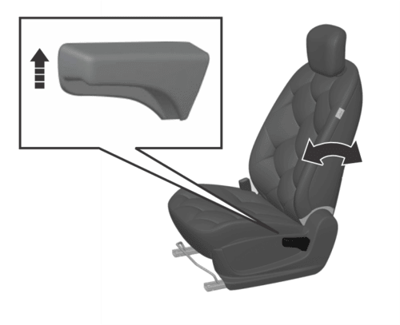
The backrest plays an important protection role when the vehicle is running. Unlocked backrest may cause severe personal injuries in case of sudden braking or a collision. Any time after adjusting the seat backrest, shake the backrest to check whether it is locked even though no passenger occupies the seat.
Reclining the seatback: Sitting in a reclined position while the vehicle is moving can be dangerous. Even if you're wearing your seat belt, reclining the seatback reduces the eectiveness of your seat belt and airbags.
Never recline the seatback while the vehicle is in motion. Riding with a reclined seatback increases the risk of serious or fatal injuries in a crash or sudden stop. Drivers and passengers should always sit upright in their seats, properly restrained, with the seatbacks upright.
Seat belts need to fit tightly across your hips and chest to work correctly. When the seatback is reclined, the shoulder belt cannot properly secure your chest-it may sit in front of you instead. In an accident, this could cause you to be thrown into the seat belt, potentially causing neck or other injuries.
The more the seatback is reclined, the higher the risk that the passenger's hips could slide under the lap belt or the passenger's neck could hit the shoulder belt.
d. Seat height adjustment:
Electric adjustment*As shown in the figure, rotate the height adjustment switch on the outer side of the seat cushion, and then release the switch after the seat is adjusted to proper height.

Manual adjustment*Turn the handle on the outer side of the seat upward and downward until the seat is adjusted to the desired height. While adjusting the seat height, the seat must be loaded.

Therefore, please sit on the seat before adjustment; otherwise the adjustment device may be damaged.
Here are simpler instructions for handling the rear seatback:
- When you're putting the rear seatback back up from being folded, hold it and move it slowly. Make sure it locks into place by pushing down on the top of the seatback. If it's not locked during a sudden stop or accident, things in the back could move forward very fast and hurt people inside the car.
- When folding the seatback, gently press against it or the headrest to control how fast it folds. If you don't press, it might fold down suddenly and hurt someone when you pull the lever.
Do not allow your hands or fingers to get caught in the seat mechanisms whilst adjusting the seats
To keep the vehicle safe:
Before you fold the seatback, put the seat belt buckle in the holder between the seatback and cushion. Also, guide the seat belt strap into its place to protect it from getting damaged.
a. Backrest adjustment and folding To adjust the seat reclining:
- Lift and hold the seat adjustment lever up
- Slide the seat to where you want it.
- Let go of the lever and check that the seat is securely locked in position.
Do not put any article or luggage higher than the rear seat on the seat. No one is allowed to sit on a seat with backrest folded when the vehicle is running.
The area for passenger is separated from the area for luggage. In an emergency brake or other accident, the unfixed luggage or the passenger sitting on a seat with backrest folded may be thrown out from the vehicle. This may result in serious personal injury or even death.
Ensure that each seat is locked before driving.
Do not operate the seat release handle when the vehicle is running. Otherwise, the passenger may be injured.
b. Adjust the seatback angle The seat backrest angle state is 25 degrees backward in the vertical state
- Pull up the seatback recline lever.
- Hold the lever and move the seatback to your preferred position.
- Release the lever and ensure the seatback is securely locked in place. The lever should return to its original position for the seatback to be locked.
You can fold down the rear seats to make it easier to carry long items or to create more space for luggage in the vehicle.
Never let anyone sit on a folded seatback while the vehicle is moving. It's not safe because there are no seat belts there. In an accident or sudden stop, this could cause serious injury or death.
Items on a folded seatback should not stick up higher than the front seats. If they do, they might slide forward and hurt someone or cause damage if there's a sudden stop.
The front and rear seats of the vehicle have headrests that can be adjusted.
These headrests are not just for comfort; they are also meant to protect passengers from neck and spine injuries like whiplash during accidents, especially if the vehicle is hit from behind.
To stay safe in case of an accident, follow these steps when adjusting your headrests:
- Adjust the headrests correctly for all passengers before driving.
- Never allow anyone to sit in a seat without a headrest or with the headrest turned around.
Head rest height adjustment To adjust the headrest upward, pull the headrest upward to a proper position and fix it. To remove the headrest, press and hold the release switch. To adjust the headrest downward, press and hold the release switch and push the headrest downward to a proper position, release the release switch for fixation. Do not press the headrest forcibly to avoid injuring the finger on the release switch.
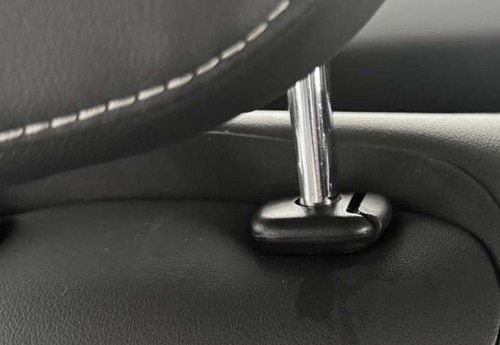In case of accidents, seat belts can provide good protection and that they must be used during driving is stipulated by regulations.
The seat belt is primarily designed for adult body sizes and is suitable for passengers with a height greater than 150 centimeters or a weight exceeding 36 kilograms. For children under 12 years old, please choose an appropriate child restraint system based on the child's size.
Please check all parts of the seat belt system for any wear or damage or abnormal function regularly. Please replace the damaged parts and components. It is strongly recommended to have the seat belt or deployed seat belt tensioner replaced at the JSW MG authorised service center after an accident.
a. Load limiter*: It is equipped on the front seat belt. The force limiter can reduce the stress applied on the body through the seat belt damping release in case of a collision accident.
Improper operation (for example removal or installation of seat belt or seat belt anchor buckle) will trigger the seat belt tensioner, leading to injury risks.
All passengers shall always fasten their seat belts before driving, and must wear seat belts under any circumstances during driving. In the event of an accident, passengers who do not wear or do not wear seat belts correctly may suffer serious injuries or deaths.
- The seat belt shall not be buckled against a hard or fragile object in your pocket. Otherwise, the hard object will hurt you and the fragile object may be damaged in case of emergencies.
- Each seat belt can only be used by one person. Do not allow multiple occupants (including children) to share one seat belt.
- Do not allow a child to sit on the passenger's lap, which cannot be fully protected.
- If the seat backrest is tilting backwards too much when the seat belt is used, the protection effect will be reduced greatly when the accident occurs.
- Do not replace, disassemble, assemble or modify the seat belt without permit. It is not allowed to add any accessory or other object that may interference with the operation of the seat belt.
- Keep the seat belt retracted and unlocked when it is not used for a long time. Do not allow any seat belt or its buckle or tongue to be clamped by a door; otherwise, the seat belt may be damaged.
- The seat belt adapts to the human body through the emergency locking retractor. It will tighten automatically and naturally fit the body after locking. Please contact the JSW MG authorised service center for inspection if it is too tight.
- 3. The seat belt must be kept clean. Rough dirt will hinder the function of the automatic retracting device of the seat belt. It can be wiped with a wet cloth without removal or replacement. Pay attention to prevent foreign matters from getting in the seat belt buckle (such as sunflower seed shell and button); otherwise the seat belt buckle will fail.
b. Wearing:
1. Pull out the seat belt from the retractor and guide it around the body without twisting. The shoulder belt shall span the whole shoulder obliquely, but shall not touch the neck or slip from the shoulder. The lap belt shall span the hip as low as possible.
2. Inserting the latch plate forward (reverse insertion of the latch plate will cause the seat belt to twist, and cut or even endanger life in case of collision). Insert it into the buckle of the seat pair until a "click" locking sound is heard, and then pull it to check whether the locking is reliable. Pull the shoulder belt forcibly to adjust the tightness degree of crotch strap. The occupants can move in a small range when the vehicle stably runs, and the seat belt can be pulled out or retracted with the slow movement of the occupants.
Loose or heavy clothing will hamper close wearing the seat belt. Do not place any object (such as handbag and mobile phone) between the seat belt and your body.
c. Unlock:
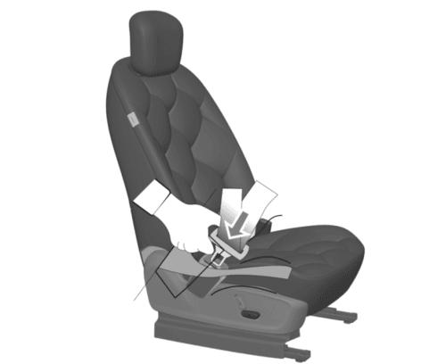If you need to release the seat belt, press the red button on the buckle, and the tongue will automatically pop up and the seat belt automatically will retract. The seat belt is locked due to retracting or pulling out too fast, and it can be smoothly pulled out by loosening the webbing.
The crotch belt shall be placed as low as possible to go across the hip, so as to avoid force on the belly.
Use of seat belts during pregnancy
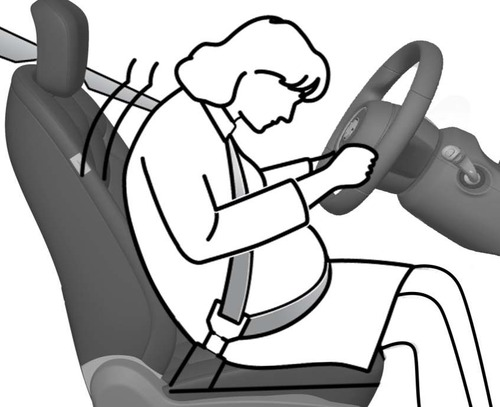The seat belt provides protection for everybody, including a pregnant woman. Like all passengers, if pregnant women do not wear the seat belt, severe personal injuries are more likely to be caused to them.
The pregnant woman shall wear the hip/shoulder seat belt during the whole pregnancy, and the hip belt shall be fastened as low as possible.The best way to protect a fetus is to provide safety protection to its mother. If the seat belt is fastened correctly,the fetus is not vulnerable to injury in case of a collision. For a pregnant woman or any person, correct wearing is the key to exerting the best protection effect of the seat belt.
The vehicle is not equipped with a child seat. If you need one, a child seat that is applicable to ISOFIX "general" type can be selected. Child seat can only be placed on the 2nd row seat, because the front seat is not equipped with an anchor bracket. The statistical data of accidents show that placing the child seat on the second row seat can largely improve the child safety.
a. A young child shall always use the child seat. Never hold a baby in your arms while riding in the vehicle. Never allow a child to stand or kneel on a seat or in the luggage compartment when the vehicle is running.
b. An unfixed child seat may be thrown out of the vehicle in case of a collision or emergency stop, causing personal injuries to the driver and passengers. Be sure to properly secure the child seat even when it is not in use.
c. If the child seat is put in a closed compartment in hot weather, its temperature will be very high. Make sure that the child seat temperature is not very high before putting a child in the seat. If the child is too small and the seat belt cannot provide the best protection for him/her, please make sure that a proper child seat is used to provide safety protection.
d. The size and configuration range of the child seat is very wide. Not all child seats are applicable to your vehicle due to the interior trim as well as the seat shape and size. You have responsibility to ensure that the child seat installed matches with your vehicle and that the seat can be connected correctly to the vehicle with its anchor system. If the child seat does not match with your vehicle size and the child body figure or the connection to your vehicle is incorrect, severe personal injuries will be caused to the child and other passengers in the vehicle in case of a collision.
a. Types of child restraint system:
According to GB27887-2011, the child restraint system can be classified into 5 groups below:
Group 0: for children weighing less than 10 kg.
Group 0+: for children weighing less than 13 kg.
Group I: for child weighting more than 9 kg and less than 18 kg.
Group II: for child weighting more than 15 kg and less than 25 kg.
Group III: for child weighting more than 22 kg and less than 36 kg. Please select a suitable child seat according to the child weight and body figure.
For infants under one year old, their bones are very fragile, and a backward-facing child seat shall be used.
b. Applicability:
Below are different riding positions to child restraint system
| Quality Group | Seat (or Other | Positions) |
|---|---|---|
| Front passenger | Left/Right rear seat | |
| Group 0: < 10kg | X | U |
| Group 0+: < 13kg | X | U |
| Group I: 9kg~18kg | X | U |
| Group II: 15kg~25kg | X | U |
| Group III: 22kg~36kg | X | U |
|
Note: Meanings of letters in the table are as follows: U - applicable to universal child restraint system certified under this mass group. UF - Applicable to the forward-facing universal child restraint system approved by this quality group. L - applicable to special child restraint systems included in the list. Such restraint systems maybe for special, restricted or semi-general vehicles. B - applicable to built-in child restraint system approved for this mass group. |
Information on suitability of different ISOFIX positions for ISOFIX child restraint system
| Ǫuality Group | Size Class | Fixture | Seat Front passenger | Left / Right rear seat |
|---|---|---|---|---|
| Carry-cot | F | ISO/L1 | X | IUF |
| Carry-cot | G | ISO/L2 | X | IUF |
| Carry-cot | 1 | X | IUF | |
| Group 0: <10 kg | E | ISO/R1 | X | IUF |
| Group 0: <10 kg | (1) | |||
| Group 0+: <13 kg | E | ISO/R1 | X | IUF |
| Group 0+: <13 kg | D | ISO/R2 | X | IUF |
| Group 0+: <13 kg | E | ISO/R3 | C | IUF |
| Group 0+: <13 kg | 1 | |||
| Group I: 9kg~18kg | D | ISO/R2 | X | IUF |
| Group I: 9kg~18kg | C | ISO/R3 | X | IUF |
| Group I: 9kg~18kg | B | ISO/F2 | X | IUF |
| Group I: 9kg~18kg | B1 | ISO/F2x | X | IUF |
| Group I: 9kg~18kg | A | ISO/F3 | X | IUF |
| Group I: 9kg~18kg | (1) | |||
| Group II: 15kg~25kg | (1) | |||
| Group III: 22kg~36kg | (1) |
|
Note: For child restraint systems not marked according to ISO/×× size class (A~G), vehicle manufacturers shall specify the vehicle-specific ISOFIX child restraint system recommended for each seat. Note 2: Meanings of letters in the table are as follows: IUF - The seat is suitable for universal ISOFIX forward-facing child restraint systems approved for use in this mass group. IL - Applicable to special ISOFIX child restraint systems on the list. Such restraint systems maybe for special, restricted or semi-general vehicles. X - The ISOFIX position is not applicable to ISOFIX child restraint systems under this mass group and/or size class. |
c. Child seat fixing device:
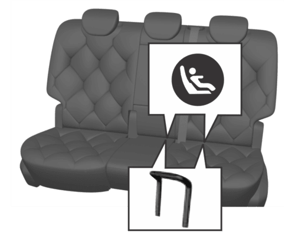There is a set of fixing device on each of the right and left sides of the second row seat.
To fix the child seat:
1. The lower anchorage of child seat fixing device is on the joint between the rear row left and right seat backrest and the seat cushion back. Its position can be identified through the label on the lower edge of the backrest.
2. Clear up the objects on the seat. Note to remove the seat belt and seat belt buckle to avoid affecting accurate fixing of the child seat.
3. Put the child seat on the second row seat.
4. Child seat clamp, ② lower fixing point; connect the fixed hook on the child seat with the vehicle's fixed device.
Operate according to the child seat instructions.

5. Connect the upper strap of the child seat to the corresponding fixing point of the vehicle. Refer to the child seat instructions to get to know when and how to strain the upper strap. As shown, the upper anchorage of child seat fixing device is located behind the rear seat backrest.
6. Push and pull the child seat in all directions to make sure it is safely secured.
7. Make sure that the child seat temperature is not very high before putting a child in the seat.
In case of a serious collision accident, the child seat fixing device may be damaged. Some parts may require repair and replacement. Please check the child seat fixing device after a collision.
a. Airbag layout
- Driver frontal airbag.
- Front passenger frontal airbag.
- Front side airbag. (If equipped) Side
- Curtain airbags (If equipped)
For all airbags, the letter "AIRBAG" is marked on the trim panel or the label near the opening where they are deployed. For frontal air bags, the letter "AIRBAG" for the driver is located in the middle of the steering wheel, and that for the front passenger is located on the instrument panel. For lateral-impact air bags, the letter "AIRBAG" is located on the backrest side, near to the door. The letter "AIRBAG" for side curtain airbag is located on the roof lining or trim panel.
b. Safety precautions & warnings The cars have air bags for the driver and front passenger seats. These air bags help the seat belts protect you.
Always wear your seat belt when driving. The front air bags are designed to supplement the threepoint seat belts. For these air bags to provide protection, the seat belts must be always worn when driving. You can be severely injured or killed in an accident if you are not wearing a seat belt. Air bags are designed to supplement seat belts, but do not replace them.
Airbags are not designed to deploy in every collision. In some accidents, the seat belts are the only restraint protecting you.
Always wear seat belts and use Child Restraint Systems on every trip. Even with air bags, you can get seriously hurt or killed in a crash if you're not properly belted or wearing your seat belt when the air bag inflates. An inflating air bag could hit the child and cause serious or fatal injuries. ABC - Always Buckle Children under age 13 in the back seat. It's the safest place for kids of any age. If a child age 13 or older must sit in the front seat, make sure they're properly belted and move the seat as far back as it can go. All passengers should sit upright with their seat belt on, feet on the floor, until the vehicle is parked and turned off. If someone isn't in the right position during a crash, the air bag could hit them hard and cause serious injuries.
You and your passengers should avoid sitting too close to air bags or leaning against the door or centre console.
Move your seat back as far as possible from front air bags while still being able to control the vehicle.
a. Airbag position & marking:
As shown in the Figure A above, the driver frontal airbag is located in the middle of the steering wheel.
As shown in the Figure B above, the front passenger frontal airbag is located in the passenger's side instrument panel.
As shown in the Figure C, the front seat side airbag is installed on the backrest side near to the door.
As shown in the Figure D, the side curtain airbag is installed at the side wall and roof joint, on the roof lining.
1. Hitting the shoulder, edge of pavement or hard surface
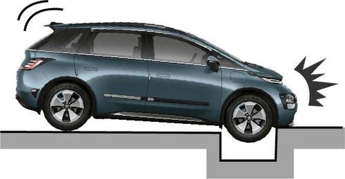2. Fall into or drive into a deep pit/ Wheel hard landing or vehicle fall.

b. Frontal Airbag non-deplyoment: The frontal airbag is generally not inflated in the event of a side collision, rear-end collision, rollover or low-speed frontal collision. No matter what kind of collision, only when the vehicle generates sufficient forward deceleration, will the frontal airbag be inflated.
1. Head-on collision angle over 30° from vehicle longitudinal direction.
2. Overturn, falling from high place, rolling:
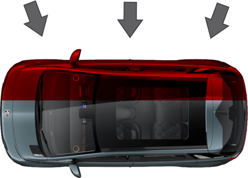3. Hit deformable objects, such as sandpile, guard bar, column and tree
4. Hit into front vehicle bottom, especially truck bottom:
c. Side airbag / curtain airbag non- deployment
The side airbag / side curtain airbag system may not be inflated if the vehicle suffers a lateral collision at a certain angle or if the side of the non-occupant compartment is hit.
1. Vehicle body side (not passenger compartment) collision
 -collision.png)
2. Off-vertical side collision
The side airbags/curtain airbag do not normally inflate in the event of a frontal collision, rear-end collision, rollover or low-speed side impact.
3.Frontal collision
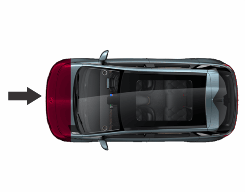4. Rear-end collision
5. Overturn, falling from high place, rolling
6. Side collision to truck during drifting
Backward child restraint device must not be used on seats protected by a frontal airbag (in the activated state) !
On the instrument panel, there is an airbag indicator which displays the airbag shape symbol. The system will check whether the airbag circuit system has a fault and give corresponding prompt through the indicator. The indicator will light up in case of airbag system fault. It must be inspected and repaired as soon as possible.
In case of indication continuously ON. Do not drive the vehicle in this condition. Get the vehicle checked. Contact JSW MG authorised service center.
When shall the airbag be inflated? The frontal airbag is designed to be inflated in moderate to severe head- on collision or almost head-on collision to reduce severe injury risks ofthe driver's and the front passenger's head and chest.
Frontal airbag inflation is not primarily dependent on the speed of the vehicle, but on the object being collided with, the direction of the collision and the deceleration of the vehicle per unit time during the collision. The frontal airbag may be inflated at different collision speed. It depends on whether the vehicle hits the object straight or at an angle at the moment of the collision, and on whether the collided object is fixed or moving, non- deformable or deformable, narrow or wide. Due to different designs of each model, the collision inflation conditions of the frontal airbag may vary. Frontal airbags do not inflate in the event of a vehicle rollover, a rear collision and many side collisions. The frontal airbag may not inflate in slight head- on or nearly head-on collisions, lateral or diagonal collisions, collisions to cylindrical objects (such as telegraph pole and tree trunk), rear-end collisions under
large vehicle (trucks, etc.) breast board and lateral glancing collisions. As per the design, the seat lateral- impact airbag and the side curtain airbag will inflate according to the impact position in case of the moderate to severe lateral collisions.
The seat lateral-impact airbag and the side curtain airbag may not inflate in slight side collisions and lateral-frontal or diagonal collisions. As per the design, the seat lateral- impact airbag and the side curtain airbag will inflate on the collision side of the vehicle. Airbags are not triggered in every collision. For a particular accident, it shall not simply judge whether the airbag should be inflated according to the causalities, vehicle damage or repair and maintenance expenses. Your vehicle is equipped with a collision sensing and diagnosis module. If a collision accident reaches certain strength, the module may record relevant collision information after the collision. If you have any questions about the airbag working condition of your vehicle in a collision accident, please contact the JSW MG authorised service center in time for professional analysis and diagnosis.
How is the airbag inflated? During inflation, the sensing system sends an electronic signal that triggers the gas generator to release gas to fill the airbag, causing the airbag to inflate and eject from the cover. The gas generator, airbag and relevant members are all components of the airbag module. Please refer to "Airbag Position" for details.
How does the airbag provide protection? The airbags supplement the protection provided by the seat belts by distributing the impact forces more evenly over the occupant's body. However, in collisions where the occupant's body is not moving in the direction of the airbag, and in collisions where an external object has entered the vehicle, the airbag is unable to provide the appropriate protection. The airbag shall only be seen as a supplementary device to the seat belt.
When the airbag is inflated, dust may be spread in the air. All persons in the vehicle shall get off the vehicle as soon as possible. If you have a breathing problem and cannot get off the vehicle after airbag inflation, open the windows or doors to get fresh air. If breathing problems occur after the airbag is inflated, you should seek medical attention as soon as possible.
What will you see after the airbag inflates? When the airbag is inflated, it will deflate so quickly that some people may not even notice that the airbag has been inflated because it deflates so fast. Smoke and dust may also be emitted from the deflated airbag vent. If the vehicle power supply system can still work normally after a collision, the vehicle has the functions of automatically unlocking doors, turning on hazard warning lamps and turning off fuel system after airbag inflation. The driver can use corresponding function switch to lock doors, turn off indoors lamps and turn off the hazard warning lamp. The deployment of the front passenger air bag may also cause damage
- An airbag is designed to inflate only once. After the airbag is inflated, some parts of the airbag system need to be replaced. Otherwise, the airbag system will be unable to provide protection in the next collision accident. The airbag system parts that shall be replaced include the airbag module, airbag control module, seat belt pretensioner and other parts.
- Work related to the SRS can only be done by JSW MG authorised Service Center technicians with corresponding qualification. Improper repair and maintenance may cause that the airbag system cannot function normally. Please drive to the JSW MG authorised Service Center for repair and maintenance.
- Repair, maintenance and replacement of airbag system:
- The airbag system must be maintained by JSW MG authorised Service Center technicians. Improper maintenance will cause the airbag system to fail to function normally. Please go to the JSW MG authorised Service Center for repair and maintenance of the airbag system.
if the airbag cover is damaged, opened or broken, the airbag may not function normally. It shall be repaired as soon as possible.
Never stick or cover any object on the airbag cover surface or refit the airbag cover; never try to repair, adjust or remove or install any airbag system component; never try to refit the front bumper of the vehicle body by yourself.
Other situations where the airbag may be inflated (deployed) except for a collision The airbags may also inflate if the underside of the vehicle suffers a severe impact.
EBD watches and manages how hard the brakes press on the back wheels to make driving safer when you brake. It adjusts the brake pressure so that the front and back wheels work together to stop the car quickly and keep it steady. This is done by reducing the pressure on the rear wheels when needed.
the EBD system uses the high-speed computer to respectively induce and calculate different ground to which four tires are attached, and thus calculate different friction values at the moment the vehicle brakes. Therefore, four tires can be able to brake in different ways and force based on different conditions, and can be adjusted fast during movement, so as to ensure that the vehicle is stable and safe.
Brake system/EBD warning lamp:
The brake system warning lamp illuminates after the ignition switch is turned on and it goes out several seconds later (if the park brake has been released). This indicates that the warning lamp can work normally. The brake system/EBD warning lamp also illuminates when the parking brake engages and when brake fluid is less.
The indicator goes out after the park brake is released. Please do fully release the park brake before starting the vehicle.
In case of indication continuously ON. Do not drive the vehicle in this condition. Get the vehicle checked. Contact JSW MG authorised service center.
If the brake system warning lamp illuminates after the park brake is fully released, it indicates possibility that the brake fluid level in the fluid reservoir is too low or an EBD system fault has occurred.
In this case, please operate in the following steps:
- Carefully drive the vehicle off the lane and then stop the vehicle.
- Check the brake fluid level.
- Add the recommended brake fluid until the fluid level reaches MAX (highest) mark.
- In case of the following circumstances, it is recommended to drive the vehicle at a safe speed to the nearest JSW MG authorised Service Center to inspect the brake and confirm that:
- You discovered the brake system leakage.
- The brake system warning lamp keeps illuminated.
- The brake cannot work normally.
Please do not drive the vehicle when the brake system warning lamp has illuminated.
This indicates that the brake may not work normally.
Driving the vehicle with a brake fault can lead to a collision, causing personal injuries and damage to the vehicle or other properties as a result.
The Electronic Stability Control (ESC) system is an advanced safety feature that builds on the functions of ABS and TCS. It includes sensors like the yaw rate sensor, lateral acceleration sensor, and steering wheel angle sensor. These sensors help monitor and control the driving and braking forces of all wheels- front, rear, left, and right-through a computer (ECU). This ensures the vehicle stays stable during turns and manoeuvres. If the driver pushes the limits, especially during high-speed turns, the ESC system steps in automatically to regain control and keep the vehicle safe.
Indicators relevant to the ESC system consist of ABS MIL, EBD MIL, ESC MIL and ESC OFF indicator.
1) Indicators illuminate for self- inspect when the instrument is turned on. The 4 indicators are normally on for 3s, indicating that the ESC system is conducting self-inspect and indicators work normally. The 4 indicators go out 3s later under the normal condition.
When faults (such as neglected installation, loosened connector, abnormal CAN communication) exist on the ESC system, only the ESC OFF lamp will go out 3s later, and the other 3 lamps are normally.
2) In the process of driving, if the ESC function is activated, the ESC lamp will flicker, telling the user that the ESC system is working. If the ESC system functions are abnormal but the ABS+EBD system functions are normal, the ESC lamp is normally on, indicating that the ESC system gets faulted. If the ESC system and the ABS function are abnormal and the EBD system functions are normal, the ESC lamp and the ABS lamp are normally on.
3) The ESC OFF lamp is used to indicate that the ESC function is disabled (the lamp will be normally on so long as the ESC function is disabled; the lamp will go out if the function is enabled).
If the user disables the ESC, some ESC functions will be disabled, and the ESC OFF lamp will illuminate. If ESC is working when it is to be disabled, the ESC function will not be disabled immediately and will be disabled after the work is over. If the user enables the ESC again, all functions will be restored.
4) Each time the vehicle is started, the ESC system will be activated automatically.
After you start the vehicle, the light on the indicator will turn on for a short time and then turn off. This shows that the indicator is working correctly. While you are driving, if the ESC turns on, its light will blink to let you know the system is active. But if the ESC light stays on without blinking, it means there is a problem with the system.
In case of indication continuously ON. Do not drive the vehicle in this condition. Get the vehicle checked. Contact JSW MG authorised service center.
Electronic stability control (ESC) On/Off
Normally, it is not recommended to disable the ESC system.
Normally, it's not recommended to turn off ESC. It should only be turned off temporarily if your vehicle is stuck in mud or driving on very slippery surfaces like snow.
 On Off 1.png)
When you start the vehicle, a light will briefly turn on and then go off, showing that everything is working correctly. The electronic stability control (ESC) is always on when you start the car. If you need to turn it off, you can do this in the vehicle settings under “Menu - Vehicle settings - Driving - Electronic Stability Control” on the dashboard. When ESC is off, the "ESC OFF" light on the dashboard will be on. To turn ESC back on, you can do it from the same screen where you turned it off, and the light will turn off. It's usually best not to turn off the ESC system. Only turn it off temporarily if your vehicle is stuck or climbing out of a difficult situation.
In case of indication continuously ON. Do not drive the vehicle in this condition. Get the vehicle checked. Contact JSW MG authorised service center.
EPB is used to engage & disengage parking brake electronically using the EPB switch.
As shown in the image, the electronic handbrake is located on the right side of the driver's knee. EPB is applied automatically when the lever is shifted to P (Park). At the same time, the EPB working indicator on the instrument will light up, and the parking is completed.
When shifting from D (Drive) to R (Reverse), the brake pedal must be pressed. Depress the brake pedal when shifting from R to D. Ensure that the vehicle speed is below 6 km/h for a successful gear shift.
a. Application / release of EPB
1. Application To manually apply the parking brake, first depress the brake pedal to stop the vehicle, and then pull up the EPB switch. The EPB working indicator on the instrument will illuminate. After the instrument displays "Parking Brake Applied", release the switch. At the time, the EPB system brake will be clamped to park the vehicle in situation.
2. Release To release the parking brake, shift to gear R, D or N (in READY state) and depress the accelerator pedal to automatically release the parking brake; or depress the brake pedal and press the EPB switch to release the parking brake. The EPB working indicator on the instrument goes out, and the instrument displays “parking brake released”, reminding you of parking brake released.
When you open the driver side door in the motionless state, the vehicle will automatically apply parking brake, and you do not have to pull up the EPB switch.
During transport, traction and vehicle cleaning, you may need to deactivate the EPB automatic clamping function so as to make it possible to move the vehicle after exiting READY state.
3.Deactivation method: Depress the brake pedal and hold the EPB switch pressed. The EPB light when go on deactivation.
b. Electronic parking brake (EPB) fault indicator*:
-fault -indicator.png)
The Electronic parking brake (EPB) fault indicator illuminates when it has encounter some fault.
In case of indication continuously ON. Do not drive the vehicle in this condition. Get the vehicle checked. Contact JSW MG authorised service center.
c. Electronic parking brake (EPB) working indicator*:
 -working-indicator.png)
The Electronic parking brake (EPB) working indicator illuminates as the electronic parking brake is pulled up. This indicates that the vehicle is in a parking state.
This indicator goes out as the electronic parking brake is released. This indicates that the vehicle is out of the parking state.
This indicator keeps illuminated as long as the electronic parking brake engages firmly.
In case of indication continuously ON. Do not drive the vehicle in this condition. Get the vehicle checked. Contact JSW MG authorised service center.
After activating the function, the driver presses the brake pedal to stop the vehicle, or presses it while the vehicle is stationary with the engine idling. When the brake pedal is released, hydraulic pressure in the brake system is maintained to keep the vehicle parked where it is. There's no need to manually engage the Electronic Parking Brake (EPB) for parking in this situation.
a. AVH switch (Auto Hold)The automatic parking function is set to the default open state and can be turned on/off in the car “Menu - Vehicle settings - Driving - Auto Hold".
AVH conditions AVH shall be activated firstly:
1.The vehicle is stationary and in the READY state.
2. The brake pedal is depressed to a degree (brake hydraulic pressure > 9 bar).
3. Ensure that the driver's seat belt is buckled and the driver's side door is closed.
After the vehicle is parked automatically, if you need to start the vehicle, gently depress the accelerator pedal. When the vehicle reaches the starting condition, the parking brake will be released automatically.
b. Automatic vehicle hold (AVH) warning indicator:
-warning-indicator.png)
After the vehicle is powered on, the AVH warning indicator illuminates for a few seconds and then goes out. This indicates normal functioning of indicator lamp.
This indicator illuminates when the automatic vehicle hold function works and the vehicle is being parked. It goes out as the vehicle gets out of the parking state.
In case of indication continuously ON. Do not drive the vehicle in this condition. Get the vehicle checked. Contact JSW MG authorised service center.
c. Automatic vehicle hold (AVH) fault working indicator*
-fault-working-indicator.png)
After the vehicle is powered on, if the AVH fault warning lamp illuminates for several seconds and then goes out, it indicates that the warning lamp and AVH function module work normally.
In case of an automatic vehicle hold function module fault or a warning lamp fault, it will be indicated in any of the following ways:
- When the power supply is on, the lamp remains off.
- After lighting up, it does not go out.
keep illuminated during driving Once the automatic vehicle hold (AVH) fault warning lamp shows the above abnormalities, please contact the JSW MG authorised service center in time.
In case of an emergency requiring rapid deceleration when the braking effect is insufficient, you can pull up the electronic parking brake switch upward for additional braking assistance.
To activate the emergency brake function, release the electronic handbrake switch to cancel the emergency brake function.
Do not use the emergency brake function in non-emergency situations. This function is for emergency only and will wear the brake disc and brake caliper.
Shifting to P (Park) while the vehicle is in motion may cause you to lose control of the vehicle.
After the vehicle has stopped, always make sure the vehicle is in P (Park), apply the parking brake, and turn the vehicle off.
When parking on an incline, shift the gear to P (Park) and apply the parking brake to prevent the vehicle from rolling downhill.
Comfort ParkingWhen this function is activated, the brake booster system intervenes to help the user complete the braking process more smoothly. This smooth braking can be experienced at vehicle speed less than or equal to 18km/h.
This feature can be turned on/off through "Vehicle settings- DrivingComfort Parking" option available in the display head unit.
The EPS system provides steering assistance for the vehicle. This system does not need power steering fluid, which brings great convenience for the daily vehicle maintenance.
When the power supply is turned on, the EPS MIL illuminates momentarily. The EPS warning lamp does not go out or illuminates when the vehicle is running, indicating that there is a fault in the EPS system. In case of such condition, there is a need to go to JSW MG authorised Service Center for check in time. When the EPS system is under extreme conditions of high load work for a long time (For example, the steering wheel is “turned to the end” for a long time, or the vehicle is moved into the garage at a low speed repeatedly to a wide angle), the time you have to steer the wheel with great force. If you need to restore normal power assistance, you can steer the wheel at a smaller angle or increase the speed. You can restart the vehicle if necessary.
The EPS system will adjust the power assistance according to the vehicle speed. As a result, the steering wheel can beturned easily at low speed and be turned relatively steadily at high speed.
Illuminated EPS warning lamp can indicate that the electronic power steering column cannot work normally. If you fail to keep the steering column in an agreeable working condition, collision may happen and as a result, personal injuries, and damage to the vehicle or other properties can occur.
a. EPS fault warning lamp
When the vehicle is powered on, the warning lamp will illuminate instantaneously. It indicates that the system is conducting self inspection and the warning lamp bulb can work normally. The warning lamp goes out several seconds later. When the electronic power steering (EPS) system detects a fault, the warning lamp will give out an indication. When the steering system has a fault, the vehicle can still steer, but requires much greater eort. In case of the following circumstances, please consult the nearest JSW MG authorised service center.
- This lamp does not illuminate when the vehicle is powered on.
- After lighting up, it does not go out. keep illuminated during driving.
In case of indication continuously ON. Do not drive the vehicle in this condition. Get the vehicle checked. Contact JSW MG authorised service center.
Steering wheel adjustment
1. Tilt adjustment: Adjust the steering wheel angle so it points toward your chest, not your face.
2. Telescopic adjustment: Slide the steering wheel in or out to a comfortable distance.
Steps:
- Pull out the adjustment lever.
- Adjust the steering wheel to your desired angle and distance as per your preferred position.
- Push the lever back in to lock the steering wheel.
- Ensure the steering wheel is securely locked in position before driving.
The driver must maintain full control of the steering wheel while driving. Do not adjust the steering wheel while the vehicle is moving, as it can cause loss of control.
After unlocking the vehicle, open the driver's side door. The instrument cluster will activate, and the vehicle will enter the HV state. In HV state, all hybrid circuits are active, allowing you to engage the gear for driving and the A/C system can provide cooling while in HV state.
Trial run of new vehicle During the first 500 kilometers of driving a new vehicle, follow these steps to enhance performance, improve drive range efficiency, and prolong the vehicle's lifespan:
- Avoid making sudden stops unless it's an emergency. This helps the brakes settle in better.
- Try not to accelerate rapidly or drive at high speeds to prevent motor damage and conserve power.
- Do not tow another vehicle with your vehicle during this period.

a. Before you start your EV:
- Make sure that the area around the vehicle is clear.
- Do a check of the fluid levels - coolant, brake fluid, and windshield washer fluid as frequently as possible.
- Make sure that all windows and lights are clean.
- Examine the tires for their appearance, inflation pressure and condition.
- Make sure that all doors are closed.
- Position the seat and adjust the headrests.
- Adjust the inside and outside mirrors.
- Fasten seat belts and ask all passengers to do likewise.
- Do a check of the operation of the warning lights when the power switch is pushed to the ON position.
b. Procedure to start EV:
- With the smart key sit in the driver’s seat (if equipped), vehicle will automatically switch to HV mode.
- Fasten the seat belt before you start the vehicle.
- Turn off all electrical devices.
- Make sure to engage the parking brake for your safety.
- Make sure the accelerator and brake pedal have clearance with your right foot.
- Press the brake pedal to enter the READY mode, enabling the vehicle to operate in gear. The "READY" state is similar to the starting state of an internal combustion engine vehicle.
- The vehicle will get ON in ‘P’ mode only and it will be automatically selected.
- When ‘Ready’ message appears, you can drive the vehicle. Else, you cannot drive the vehicle. Start the vehicle again.
- Shift to the desired position (D/R).
- Release the parking brake and slowly release the brake pedal. See if the vehicle slowly moves forward, then press the accelerator pedal
If the EPB is disengaged manually after selecting required mode (D/R), release the brake pedal slowly to move the vehicle forward with creep activated condition. Further Accelerator pedal input to be given for achieving required speed.
c. Procedure to stop EV
- Hold down the brake pedal while the vehicle is parked.
- While pressing the brake pedal, shift to P mode using the gear knob to engage the parking brake.
The vehicle must always be put in ‘N’ when you stop the vehicle before engaging the park brake.
When the 'Ready' indicator is illuminated and the gear shifter is not in the Neutral (N) position, the driver may inadvertently press the accelerator pedal, resulting in unexpected vehicle movement.
d. Range of your EV: Your EV can provide specified range, when the high voltage battery is 100 percent charged. However, the range may vary in different driving modes and in certain situations like driving at high speed or when the air conditioner/heater/infotainment system is ON as the HV battery consumes more energy.
The range is estimated for the reference of the driver and passengers only. The actual endurance mileage is related to various factors such as current road conditions (such as a long steep slope), driving habits (such as frequent acceleration and deceleration), temperature (such as low temperature), and whether electrical equipment (such as A/C) is on.
Tips to get maximum range while driving EV
1. If safe to do so, modulate the accelerator pedal instead of using the brake pedal when gradually slowing down. Whenever the vehicle is moving and you are not pressing the accelerator pedal, regenerative braking slows down the vehicle and feeds surplus energy back to the HV battery.
2. Limit the use of resources such as heating, and air conditioning. If you operate the air conditioner/heater for long duration, it will use too much electricity from HV battery.Turn OFF the heater and air conditioner if you do not need them.
3. Using the climate control system to heat the cabin when the outside temperature is below 0°C uses more electricity and affects vehicle range more than when using the heater when the temperature is above 0°C.
4. Press and hold the accelerator pedal to maintain speed and drive economically.
5. Gradually press and release the accelerator pedal when accelerating or decelerating.
6. Do not use unnecessary electrical components while driving.
7. Do not load unnecessary items in the vehicle trunk. Any additional load in the car drains the battery. Do not add more accessories, do not keep dead weight in the car, and in general travel as light as possible.
8. Do not mount parts on the exterior of the car as it might increase drag.
9. Service schedule should be adhered to. Fluid levels should be maintained within tolerance limits. Both of these also helps in realizing the maximum range potential of an electric vehicle
10. To optimize driving range use drive/eco mode and maintain the recommended tyre pressure.
11. Drive in ECO mode
12. ECO mode helps reduce power consumption by reducing acceleration when compared to the same accelerator pedal position in the D (Drive) position.
13. Drive at a constant speed. Maintain cruising speeds with constant accelerator positions as much as possible.
14. Accelerate slowly and smoothly. Gently press and release the accelerator pedal for acceleration and deceleration.
15. Vehicle range may be substantially reduced in extremely cold conditions (for example, 0°C).
16. Release the accelerator pedal to slow down and do not apply the brakes when traffic and road conditions allow.
This chapter introduces relevant contents of charging.
a. Identifying the need of charging
- If conditions permit, it is recommended that you charge the vehicle when parking it. Shallow charge and discharge is conducive to prolonging the battery life. Do not wait until the battery runs out before recharging, which may not be conducive to your next trip and the battery life.
- If the SOC low warning light goes on during driving, it indicates that the HV battery pack is low and needs to be charged as soon as possible.
- When the SOC indicator indicates low remaining power, or the driving range cannot meet the travel demand, charging is required.
b. Requirements for charging power supply: The charging system for the vehicle has a rated power of 6.6KW. The charging power is dependent on the specifications of the charging gun/ charging pile and can be used with a standard household 220V AC power supply.
If there is a difference between the external power supply power and the charging machine's rated power, the charging power is consistent with the smaller one.
1. Charging parameters
| State of charge (SOC) | Configuration | Time required |
|---|---|---|
| 0%-100% charging time | Original 3.3kW charging unit (contact JSW MG Authorised service center to install the original charging unit) | ~ 15h |
| 0%-100% charging time | Original 7.4kW charging unit (contact JSW MG Authorised service center to install the original charging unit) | ~ 7.5h |
| 0%-80% charging time | DC quick charging (45kW) | ~ 55 minutes |
|
Notes:
|
2. Charging schematic diagram
Types of charger
a. Portable AC charger
b. AC fast charger
c. DC charger
Charging preparation
1. Power off the vehicle.
2. Do not ride in the vehicle when charging. Ensure the ventilation of charging places, and do not charge in confined and narrow spaces.
3. Before charging, please check whether the skin and casing of the charging cable are broken. If so, please contact the JSW MG authorised service center for repair or replacement. Make sure that the charging cable is in a state of natural extension, and do not hang in the air.
4. During charging, appropriate protective measures should be taken to avoid children and other irrelevant personnel approaching the charging vehicle and charging cable.
5. During charging, it should be noted that there should be no residual rainwater in the charging socket and its vicinity.
6. Do not charge the vehicle in an environment where there is rain, snow or accumulated water, or fire source thunder weather. In case of rain, snow, rising water and strong wind during charging, stop charging and take away the charging cable. Otherwise, there is risk of electric leakage.
7. If the vicinity of the charging port gets wet during charging, please pull out the charging plug from the power supply socket and then unplug the charging gun from the charging port while ensuring safety. If necessary, please use insulating gloves and contact the JSW MG authorised service center for testing and confirmation as soon as possible.
8. When touching the charging plug, please keep your hands dry, and use insulating gloves if necessary.
Be sure to ask a professional electrician to install the charging line for you; otherwise it may cause fire or electric shock.
9. The ambient temperature of charging is recommended to be between 00C and 350C, and avoid charging at low or high temperature (it is recommended to charge the vehicle at noon in winter, and in the morning or evening in summer). Avoid charging in an environment of high temperature such as direct sunlight. If the vehicle is equipped with a HV battery heating system, when the internal temperature of the HV charging, the HV battery system will automatically heat up first, and then the HV battery pack is charged after heating.
10. The charging plug is a high- voltage electrical device, which is strictly prohibited for children. It is strictly prohibited for children to operate during charging. If there are many children or people walking frequently in the charging area, safety signs should be set up.
11. Lock the doors before leaving the vehicle
Before charging, check the charging cable and charging port to make sure that the cable is not damaged and that no water or foreign matter enters the charging gun and port.
1. To extend the service life of the HV battery pack and ensure the driving safety, do not drive when the SOC is too low (< 10%).
2. Do not use the HV battery pack onboard for other purposes.
3. Improper handling of the HV battery may cause serious accidents, such as HV battery damage or personal injury. In order to avoid accidents, attention should be paid to the following matters:
a. Do not expose the vehicle to the environment above 450C for more than 24 hours, and place the vehicle in a cool environment in time.
b. Do not place the vehicle in an environment of -250C for more than 7 days, and place the vehicle in a warm environment in time. If the vehicle is in a low- temperature environment (below -250C) for a long time, the HV battery pack may freeze inside, resulting in failure to charge and to provide driving power to the vehicle, which is very dangerous.
4. To increase the service life and safety of battery packs, it is recommended:
a. The vehicle without HV battery heating system cannot be charged when the internal temperature of the HV battery is below 00C. Therefore, at a low ambient temperature, please charge the vehicle as soon as possible within one hour after parking. If the vehicle cannot be charged due to the low temperature of the HV battery, move the vehicle to a warm place or drive for a period of time before charging.
b. When the vehicle will be stored for a long time (more than 1 month), charge the battery to about 60%, and disconnect the negative terminal of 12V battery in the compartment
c. Please try to avoid sharp acceleration or deceleration during driving.
If the vehicle will be stored for a long time, charge the battery to about 60%, and disconnect the negative terminal of 12V battery. Long-term storage at very low SOC is not conducive to the service life of the HV battery.
The batteries are special chemical products that need proper use and maintenance. Routine full charge and full discharge are critical to the maintenance of their performance. In addition, the battery capacity is subject to natural attenuation due to the chemical properties. When you find a decrease in SOC range, it is recommended to check it at the JSW MG authorised service center. If the battery consistency is turned out to be within the normal range, this decrease is due to the normal attenuation of the battery capacity.
Preparations:
Cut off the power supply, press the EPB button, take out the charging cable from the car and check whether the cable is intact.(The external view of the charging gun is for illustration only. The final appearance shall be subject to the physical object).
AC charging
1. As shown in the figure, press the right side of the charging port cap, and it will open automatically.
2. Pull the locking hook to open the charging socket cap, as shown in the figure.
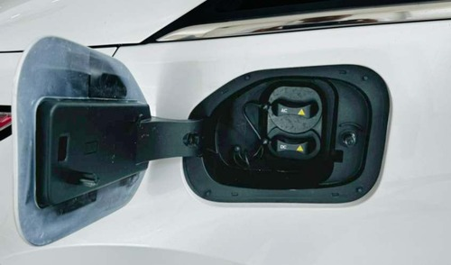3. Insert the plug into power socket
4. Insert the charging gun into the charging port until you hear a "click".
Switch ON the power supply and display "Charging", current battery percentage, charging connection icon and charging status icon appears on screen.
5. On completion of charging pull out the charging gun and close the flip cover of charging base.
As shown in the figure, push the flip cover of the charger receptacle to the right and press it until a "click" sound is heard. If the flip cover no longer rebounds after releasing, close the flip cover of the charger receptacle.
- Change of vehicle state (Ignition OFF to Ignition ON or vice-versa) should be avoided while charging.
- Post switch off the charger, provide min 5 seconds for touching and pulling out the gun.
- If the charging gun removed and reinsertion required it could be done after at least 10 seconds of removal of the charging gun from socket.
- Do not disengage/play around with the Park brake/hand brake while vehicle in fast charging condition.
DC charging: During DC charging, please follow the operation instructions of the charging equipment or charge under the guidance of the staff at the charging station (the charging equipment shall be subject to the physical object). Please follow similar instructions for charging as stated for AC charging.
When you charge your car in winter, due to the temperature, the lower the battery temperature is, the longer the charging time will be. Therefore, you should schedule charging reasonably so as not to delay your trip.
If normal charging fails during the use of public charging facilities, please check whether the public charging facilities used function normally first.
Charging in high-temperature conditions will cause the battery temperature to rise rapidly. The charging machine will limit the charging power according to the battery temperature to avoid overheating, resulting in an extension of the charging time. This is a normal phenomenon.
Before charging, check the charging port and the connector port of the charging plug for any water or foreign matter. If any, charging is not allowed. Otherwise, it may lead to short circuit or electric shock, resulting in personal injury and property loss. Do not touch the metal parts of plugs and other connectors during charging. Water conducts electricity. During charging, do not touch the charging cable and plug with wet hands, and do not charge the vehicle in a wet place; otherwise you may get an electric shock. In case of any abnormal smell or smoke during charging, stop charging immediately and contact the JSW MG authorised service center in time. Do not charge the vehicle in thunder and lightning conditions, and do not charge in the open air on rainy days. Otherwise, it may damage the charging equipment, or cause lightning strike and electric shock.
Before charging, check the charging port and the connector port of the charging gun for any water or foreign matter. If any, charging is not allowed. Otherwise, it may lead to short circuit or electric shock, resulting in personal injury and property loss. Do not touch the metal parts of plugs and other connectors during charging.
Water conducts electricity. During charging, do not touch the charging gun with wet hands or charge the vehicle in a wet place; otherwise, you may get an electric shock. In case of any abnormal smell or smoke during charging, stop charging immediately and contact the JSW MG authorised service center in time.
Do not charge the vehicle in thunder and lightning conditions, and do not charge in the open air on rainy days. Otherwise, it may damage the charging equipment, or cause lightning strike and electric shock.
Schedule charging*
You can schedule the time of start of HV battery charging by selecting this option from settings below: “Menu - EV - Setting - Schedule charging”
- It is recommended to charge the vehicle to 100% every time, whenever vehicle is being charged.
- After a maximum of 4 continuous fast charging cycles/ opportunity charging cycles (Opportunity Charging - where it was below 100% SoC) it is mandatory to use slow/AC Charging and charge the vehicle to 100% SoC.
- Slow/AC charging till 100% SoC is must, at least once a 15 Days or after every 4 fast /opportunity charging cycles whichever is earlier, for SoC calibration & cell balancing.
- Avoid charging vehicle under heavy rain / thunderstorms
- Avoid driving vehicle below 10% SOC.
- Make sure the charge station’s supply cable is positioned so it will not be stepped on, tripped over, or otherwise subjected to damage or stress.
- There are no user serviceable parts inside the charging gun. Contact JSW MG authorised service center should you experience any problems with the charging gun. Do not attempt to repair or service the charge station or charging gun yourself may result in injury.
- Do not operate your charge station and gun if it or the supply cable is visibly damaged. Contact your service representative for service immediately. Refer to the ‘Emergency and Breakdown’ section in this manual for information on the service representative in your area.
- Do not place fingers inside the coupler on either end of the charging gun.
- Do not allow children to operate this device. Adult supervision is mandatory when children are in proximity to a charge station that is in use.
- Not for use in commercial garages.
- Slow charging only happens in park brake engaged condition. So always keep the park brake engaged during a charging session.
- Home charging box comes with a key and lock. It is recommended to lock the box during overnight charge or when the charging box is not in use to avoid misuse of charging point.
Unplug both couplers of your Portable Charging Gun before cleaning.
During normal operation, the charging gun or couplers may feel warm. If either coupler or the charging gun feels hot during charging, unplug the gun and have a qualified electrician inspect the connections before you continue charging.
Do not use a damaged charging station, plug point or charging port. Using the charger with a worn or damaged port may result in unanticipated consequences.
The charger generates electromagnetic waves that can seriously impact medical electric devices such as an implantable cardiac pacemaker in a person. When a person has an implant, make sure to ask the medical team and the manufacturer whether charging your EV will impact the operation of the medical electric device implant. In such case, do not go near the vehicle when it is charging.
Ensure that the charging gun is always stored in a safe place. Do not expose it to rain or wet conditions. Avoid pouring or dripping water or other liquids over it. If water penetrates the electrical devices, the risk of electric shock increases. Ensure that all plugs and cables are free of moisture before using the charging gun. Never connect the charging gun to the mains with wet or moist hands or when the charging gun is wet.
Charging should be done in Ignition OFF state.
Make sure that the device is always stored in a safe place. Do no expose the device to rain or wet conditions. DO NOT use this product if the EV charge connector/cable is damaged. During charging the vehicle must not be exposed to rain, lightning and snow.
- Do not allow the vehicle to be discharged to 0% in storage.
- Long duration Parking
- Avoid parking vehicle below 20% SOC for more than 14 days.
- Ideal condition to park vehicle for longer duration (> 14 days) is with SOC between 40% to 60%.
- If vehicle is not to be used for very long duration (more than 3 months) and is in parked condition, ensure the SOC between 50% to 60%.
- During the resting period, the user may choose either of the following options to prevent
discharge of low voltage battery.
- Periodically (weekly once) user may switch on the remote Air conditioning for 20-30 mins. This wakes up both the high voltage and low voltage systems and prevents low voltage battery from getting discharged.
- If possible, user may choose to disconnect the negative terminal of the low voltage battery. This results in complete vehicle sleep and minimum loss of charge for both low voltage and high voltage batteries.
- As EV service requires certain skill sets and trained manpower, it is always recommended to get the car serviced or repaired at only JSW MG authorised service center.
- Do not direct high pressure washer fluid/ water jets (Pressure above 0.5 bar) at electrical devices and connecter during washing. This is to prevent malfunction/ failure of electrical system due to water ingress. No High pressure washing in Motor compartment, Under-floor battery pack and CCS Charging port.
- Drive though calm water only and the vehicle speed to be maintained at creep speed.
- Always check the SOC level before start of journey & ensure car is adequately charged. You may check the SOC level on the mobile app also.
A key serves as the electronic access and authorization mechanism included as a standard feature in your vehicle. Every new vehicle is supplied with two keys; it's advisable to keep one as a spare. To ensure security, please store the key number plate safely to prevent unauthorized duplication. Note that various vehicle models may come with different types of keys, so please consult the specific details for your vehicle model.
a. Smart key*
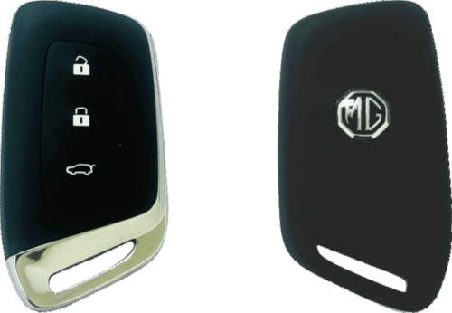Keep the smart key with you to enable passive access. It is used for locking, unlocking, and starting the vehicle.
- Unlocking all doors
- Locking all doors
- Tail gate opening
The effective distance of remote control is about 15m without shielding.
1. Unlocking all doors Press the unlock button once to unlock all doors; the hazard warning lamp will flash once, and anti-theft state is released.
2. Locking all doors Press the lock button once to lock all doors after all doors are closed; the hazard warning lamp will flash twice, and the vehicle is at anti-theft state.
If the smart key battery is low or drained, or if the vehicle battery is low or drained, users can unlock and enter the vehicle using the mechanical key blade located inside the smart key.
3. Tail gate opening Press the tailgate opening button for 3 sec to unlock the liftgate.
The functioning range of the remote control may be different due to environmental reasons. Radio interference signals and barriers will affect the remote control functions.
4. Smart key precautions
- If smart key is close to radio transmitter such as radio station or an airport which can interfere with normal operation of the transmitter.
- If smart key is near a mobile two- way radio system or a cellular phone, then it will not work properly.
- If another vehicle's smart key is being operated close to your vehicle, the signal will fluctuate.
Keep smart key away from electromagnetic materials that blocks electromagnetic waves to the key surface.
5. Vehicle locating* Press the remote lock button quickly twice to activate the vehicle locating function, the horn will sound 3 times, and the hazard warning lamp will flash 20 times.
6. Remote window control Press and hold unlock button for 3 seconds, the windows will roll down and blower starts functioning which helps in escape of hot air and let fresh air inside the vehicle.
b. Approach unlock * (Keyless entry) Depending on the vehicle configuration, some models are equipped with keyless entry function that the vehicle automatically unlocks when the key is close to it or locks when away from vehicle.
Enabling this function allows the vehicle to automatically unlock when the key is within a range of about 1.3 meters. For some models, the door handles unfold automatically; if not, the handles need to be manually pressed to open. When the key is about 2.3 meters away from the vehicle, the vehicle automatically powers off, locks, retracts the door handles, and raises the windows.
The keyless entry switch can be turned on/off in infotainment cluser settings under “Menu - Vehicle settings - Door & windows - Lock - Approach unlock” when approaching. When the key is close to the vehicle, the vehicle unlocks automatically; When the key is away from the vehicle, Lock automatically when away from the vehicle PEPS triggering conditions (all the following conditions are met simultaneously)
- All doors close;
- The locks on the driver's or front passenger's side provide feedback indicating whether they are unlocked.
- No valid key inside the vehicle, and a valid key is found within the effective range outside the vehicle's Passive Entry (PE) area.
c. Replace the battery: Inside the key remote control, there is a lithium battery whose service life is 2 years generally. When the remote control distance is shortened gradually (must be closer to the vehicle to remotely control), it indicates a low battery. The key battery cannot be charged. After the battery runs out, please reach out the JSW MG authorised service center to have the battery changed or follow these steps to change the battery:
- Remove the mechanical key by pressing the release button.
- Use a slim tool to pry open the rear cover of the smart key.
- Remove the old battery and insert the new battery (CR2032). Make sure the battery position is correct.
- Reinstall the rear cover of the smart key.
Immobilizer systems are designed to prevent vehicle theft by electronically disabling the vehicle's ignition system. The vehicle can only be started using the original immobilizer ignition key, which contains a programmed electronic identification code.
PEPS* PEPS triggering conditions (all of the following conditions are met simultaneously):
- The vehicle speed is lower than 2km/h;
- Both the driver's door lock feedback and the front passenger door lock feedback indicate a locked status;
- The door handle micro switch is pressed;
- A valid key is found within the effective Passive
- Do not turn 'ON' ignition switch by using key with any type of metal wound around its grip or in contact with it. This may be detected as abnormal condition by immobilizer and prevent vehicle from starting.
- Do not leave the key in high temperature areas. The transponder in it will behave abnormally when reused.
If the key is lost, please contact JSW MG authorised service center.
Never leave a child or pet unattended in the vehicle. Otherwise, it may cause injuries or death due to high temperature in the vehicle. Do not to leave valuables in the vehicle to prevent losses due to unforeseen circumstances.
Do not leave the key in the vehicle. Take the key with you when you leave the vehicle.
The vehicle is equipped with a non- inductive key, which cannot be left in the vehicle for a long time.
a. Activation of door lock & anti theft mode
- Close all the windows.
- All passengers leave the vehicle
- Close all doors, engine hood and liftgate
- Press the lock button on the smart key once, and the hazard warning lamp will flash twice to lock all doors. Start the immobilizer system
The door lock system can also be activated when the window is open. Make sure to close all windows and doors before leaving the vehicle. The anti-theft mode must be activated with the remote control.
b. Automatic locking of door*: When all doors are closed and the vehicle speed exceeds 10 km/h, all doors will be locked automatically.
Lock function alarm The horn will buzz 3 times and the hazard warning lamp will flash 3 times to indicate that the doors are not locked successfully if the remote lock button is pressed when the door lock conditions are not met. These situations include:
- There is a door not closed (including liftgate);
- The door lock is under thermal protection
Never leave a child or pet unattended in the vehicle. Otherwise, it may cause injuries or death due to high temperature in the vehicle.
Automatic re-locking* With the key not in the ignition switch, the vehicle will activate re- locking if the alarm is disarmed but no doors and liftgate are opened within 30s after the vehicle is under the armed state successfully.
Automatic unlocking* If the door lock is engaged, when the vehicle is parked and shifted from D or R to the P gear position, the doors will be automatically unlocked.
Never leave a child or pet unattended in the vehicle. Otherwise, it may cause injuries or death due to high temperature in the vehicle.
The anti-theft mode must be activated with the transmitter.
Warning sound: In the anti-theft state, if one door or the trunk is opened by force without the unlock button of the remote control key pressed (including opening the driver side door with the key), the hazard warning lamp will flash and the horn will beep for a period of warning.
To stop warning sound Press the lock or unlock button on the transmitter to stop the warning sound; If the system fails to do so, it is recommended to have the system checked at the JSW MG authorised service center.
Deactivation of door lock and anti- theft mode Press the door unlock button on the remote control once.
- All the doors will be unlocked (except the liftgate).
- The hazard warning lamp flashes once.
- The anti-theft status is cleared.
Loss of keys: If one of the keys is lost, contact the JSW MG authorised service center immediately.
Signal transmission autostop function of remote control The remote control has the signal transmission auto stop function which can prevent unnecessary battery loss caused by mis operation and other reasons.
Long press any button on the remote control for over 20s, the remote control will stop transmitting signals automatically. And release the button, the signal transmission autostop function is deactivated.
Fault If the remote control cannot function normally, it may be caused by the following reasons:
- Out of remote control working range;
- Excessively low SOC of remote control battery;
- Interference by external environment and other high- power radio signals (such as base station and launch tower);
- Signal blocking by other barriers.
To ensure normal functioning of the remote-control key, please follow the following rules:
- Avoid dropping the remote- control key.
- Please do not place a heavy object on the remote-control key.
- Make sure the remote-control key is away from water or direct sunlight. If the remote-control key is socked, please wipe it with a soft cloth.
a. Open the door:
To open doors from inside or outside, unlock the doors first, and pull the external or internal door handles
When you leave the vehicle unattended, you must lock all doors and take the key with you. The vehicle may be stolen if the door is not locked.
b. Door locking / unlocking from outside using key:
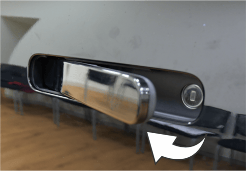
- Unlocking
- Locking
As shown in the above image, to unlock the car door with a key, for example, if the remote key is lost or out of power, press down on the left side of the door handle to expose the keyhole. The keyhole on the left front door handle is hidden under the handle and becomes visible when the handle is opened. When to lock/unlock the car door from the outside using a key, insert the key into the lock hole as shown in the image above to unlock/lock the car door.
c. Unlocking the door from inside the vehicle (Front & Rear):
To unlock the door from inside the vehicle, pull the interior door handle once for unlocking, and pull it again to open the door. Pull it once to open the door if the door is unlocked.
d. Lock/unlock switch control:
1. Locking To lock the door from inside the vehicle, press the lock button to lock the vehicle. The exterior door handle is hidden, and the door cannot be opened from the outside.
2. Unlocking To unlock the door, pull the interior handle twice. The first pull unlocks the door on the respective side, and the second pull opens the door. The exterior door handle on the respective side unfolds. Press the unlock button to unlock the vehicle. Outside the door, the door handle unfolds.
If there is noise while opening/ closing doors or driving, apply lubricating grease on the door catches and hinges.
Do not leave your child or pet alone in the vehicle. Otherwise, severe casualty will be caused. The child may operate power windows or other control buttons or even drive the vehicle. Do not leave the child with a key in the vehicle. Such behaviors may cause severe casualties
e. Door locking method when vehicle is powered off In case of vehicle outage (for example, the battery is out of power or its positive and negative poles are disconnected), the central control door lock system does not function, and you need to lock side doors manually one by one.
Open the front right door and the rear two doors, and find the knob inside the door lock (as shown in the figure above). Note that the knob is not a child safety door lock. Turn the knob with the key according to the arrow mark here, and then close the door. At last, pull the external handle to ensure that the doors are locked. For the left front door, please plug the key in the door outer handle and rotate the key clockwise to lock the door. Please refer to "Mechanical Lock on Left Front Door".
f. Child safety door lock: The rear doors are equipped with child safety locks. The function of the child safety lock is to prevent passengers (especially children) from pulling the door handle and accidentally opening the rear door.
1. Locking
2. Unlocking
To activate the child safety lock:
- Open the rear door that you want to lock.
- Find the child safety door groove knob on the door edge and near the middle position.
- Insert the key into the slot and rotate it in the direction indicated by the arrow.
The two rear doors are equipped with a child safety lock respectively. They work separately and must be activated manually and respectively.
When the child safety door lock is enabled, it cannot be opened from inside the vehicle. The door can only be opened by pulling the outer handle of the door from outside the vehicle.
To cancel the child safety door lock, insert the key into the slot and rotate it in the opposite direction.
When the child safety door lock is set at LOCKING, do not attempt to pull the internal door handle to open the door. Otherwise, the door handle will be damaged. Please open the door with the external door handle.
Do not leave your child or pet alone in the vehicle. Otherwise, it may result in severe casualties. Children may operate power windows or other control buttons or even drive the vehicle, causing severe casualty.
g. Central door lock system* With the central door lock system, you can not only use the remote control to lock and unlock the door, but also unlock and lock the door with the door lock button on the driver's side door.
a. Opening with tailgate switch
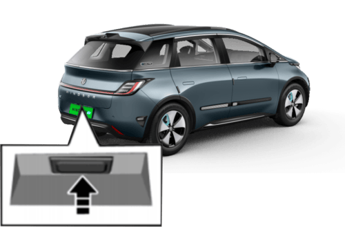Unlock the vehicle, press the liftgate switch and open it.
For a vehicle equipped with Passive Entry Passive Start (PEPS), you can carry the remote control key directly to approach the tailgate and press the switch to open the tailgate.
b. Opening with remote key* Press the remote control key Tailgate Opening button for about 3s to unlock the tailgate. To lock the liftgate, you need to close it and then lock it.
c. Passive unlock/lock of tailgate*
1. passive unlock* When the doors are locked and the vehicle is powered off, carry a legal key to a certain area (within about 1.2 m) away from the liftgate, and press the liftgate release switch to certify the system and the key. After successful authentication, the liftgate is unlocked. If the door is unlocked, the liftgate can be opened directly (unnecessary to carry the key to get close to the liftgate).
2. Passive lock*: When the liftgate is to be locked passively, the system will search whether there is a legal key in the vehicle. If there is no legal key in the vehicle, the system will automatically lock the liftgate. The hazard warning lamp flashes twice.
If there is a key in the vehicle, the system will give an alarm prompt, the horn will sound 3 times, the hazard warning lamp will flash 3 times, and the door will be unlocked automatically. Please take away the key in the vehicle, and lock the doors again.
If the doors are unlocked, the liftgate can only be locked after closing the liftgate and locking the doors. Please remember to lock the doors.
Make sure that the human body away from the tailgate when opening the tailgate. When closing the tailgate, make sure that hands and other parts of the human body are completely outside the closing area of the tailgate to avoid personal injury when the tailgate is opened or closed.
Before driving, please make sure that the tailgate is closed and locked. When leaving the vehicle, please make sure that the tailgate is closed and locked, and the vehicle is locked.
d. Liftgate lock maintenance hole:
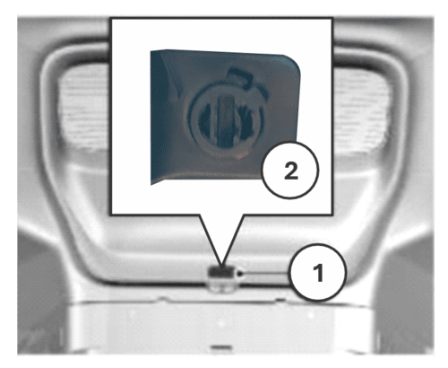1. Side trim cover
2. Groove
If other liftgate opening methods are invalid, the liftgate can be opened temporarily as per the following steps:
- Adjust the seat and enter the trunk.
- Open the trim cover outside the liftgate lock.
- Insert a suitable tool (e.g., a straight screwdriver) into the groove and turn clockwise to unlock the liftgate.
Tailgate open*: Depending on the vehicle configuration, some models are equipped with this function, as shown in the image. This function can be operated in infotainment cluster under Door & windows “Menu - Vehicle settings - Doors and windows - Tailgate - ON”.
Clicking "Tailgate ON” unlocks the tailgate and opens it automatically.
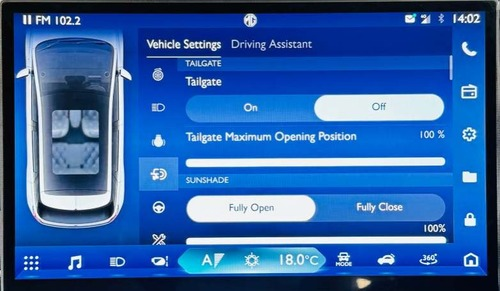a. Open the hood
1. Pull the hood release handle on the right lower side of the instrument panel once.
2. After the hood is opened, stretch your hand to the lower side of its front edge. Pull the hood release handle rightward as shown in the figure to open the hood completely.
3. Separate the cowl hood prop rod from the fixing clip. Plug the free end of the prop rod in the slot
b. Close the hood
- Support the engine hood to prevent it from closing, and take the prop rod out from the slot. Then, fix the rod in the fixing clamp.
- Make sure that your or other persons' hands or other body parts are away from the engine compartment, cowl hood and vehicle body edges.
- Slowly drop the cowl hood, and release it when the cowl hood front edge is about 30 cm vertically from the top cross member of the water tank to let it fall freely.
- Always check and confirm that the cowl hood is locked in place.
Check that the engine hood is locked before driving the vehicle. Do not pull the engine hood release handle when the vehicle is moving. Do not drive the vehicle when the front engine hood is open.
Before driving long distances, it's important to conduct a safety check. You can also visit a JSW MG authorised service center for inspection.
a. Exterior:
- Check tire pressure and inspect tires for damage.
- Ensure wheel nuts are tightened securely.
- Confirm headlights and all other lights are functioning properly.
b. Interior:
- Ensure seat belts fasten securely and are undamaged.
- Check that maintenance indicators, instrument lights, and defroster are working.
- Ensure there's enough space for the brake pedal to function properly.
- Inspect battery connectors for corrosion, looseness, or cracks in the casing.
c. Under the hood:
- Ensure there are fuses of correct specifications available.
- Check that refrigerant levels are normal.
After starting:
- Verify that instrument cluster indicators and speedometer are operating normally.
- Ensure the vehicle maintains a straight path when brakes are applied.
- Listen for any unusual noises.
Preparations before driving:
- Check surroundings before entering the vehicle.
- Adjust seat position, backrest angle, seat cushion height, headrest height, and steering wheel angle and height.
- Adjust rearview mirror and side mirrors.
- Ensure all doors are closed securely.
- Fasten seat belts.
Gear shift controls:
- Gear positions are marked on the gearshift lever.
- Press the "P" button to stop the vehicle; use this position when starting or stopping the motor.
- Press the brake pedal and the unlock button to shift gears.
a. Horn
To use the front windshield wiper:
1. Turn on the power switch.
2. Push the windshield wiper/ washer control lever.
The front windshield wiper has these 5 positions:
- OFF: Wipers are turned off.
- AUTO: Wipers automatically adjust speed based on rainfall.
- LO: Wipes continuously at low speed.
- HI: Wipes continuously at high speed.
- MIST: Push the lever up once to wipe the windshield once.
When the lever is pushed down one gear from the OFF position to the AUTO operating position, the inductive automatic wiper will function. Depending on the rainfall, the front wiper will automatically turns on or off and the wiping speed can be automatically adjusted when it is turned on.
Wiper sensitivity adjustment:
1. Access settings: Go to the car's infotainment system.
2. Navigate: Select Vehicle > Doors/ Windows > Wipers > Wiper Sensitivity.
3. Adjust sensitivity: Choose from 7 levels (1 to 7) to set the sensitivity for automatic wiper operation.
The starting position adjustment only adjusts the threshold for automatic wiper activation. The higher the position, the easier it is to initiate wiping, resulting in a more sensitive detection for light rain.
This adjustment only affects when the automatic wipers turn on, not their speed. The wiper speed adjusts automatically based on rainfall without manual input.
Even if the wiper switch is set to "AUTO," the driver should still manually control the wipers to maintain a clear view.
To spray cleaning fluid on the front windshield:
- Ensure the vehicle is in the HV/READY state.
- Press the button to spray water onto the front windshield.
- The spraying stops when you release the button.
- If you pull the control lever for more than 1 second, the wipers will run for 3 cycles at low speed before stopping.
Blurred view: A blurred view can cause accidents and damage. Ensure your windshield is clear to avoid personal injuries and property damage.
In cold weather: If the wipers are frozen, spray warm water to deice them, then wipe off the water immediately to prevent refreezing.
Refilling washer fluid
- Open the engine hood cover
- Open the washer fluid reservior cap
- Refill the washer fluid to the maximum level
Avoid dry glass: Do not use the wipers on dry glass, as this can damage the blade.
Limit washer use: Do not operate the windshield washer for more than 10 seconds at a time, and avoid using it if the washer fluid reservoir is empty. Overuse or running the washer dry can overheat the motor and lead to costly repairs.
Instrument panel
A USB port under the central control panel can charge phones and connect data cables.
The charging power supply can be used when the vehicle is in the READY/ HV state.
Console rear USB interface
USB interface
A 12V/120W power socket is located in the front armrest box. It only works when the vehicle is in the READY/HV state.
The USB interface is positioned behind the console and provides charging power for rear passenger. The charging power supply can be used when the vehicle is in the READY/HV state.
Assist armrest*

On the front passenger side and above the rear seat are installed the folding auxiliary armrests.
The assist armrest can provide easy access for you and your passengers. Passengers can also hold onto the armrest to maintain a comfortable position at a high speed.
a. After starting:
- Verify that instrument cluster indicators and speedometer are operating normally.
- Ensure the vehicle maintains a straight path when brakes are applied.
- Listen for any unusual noises.
b. Preparations before driving
- Check surroundings before entering the vehicle.
- Adjust seat position, backrest angle, seat cushion height, headrest height, and steering wheel angle and height
- Adjust rearview mirror and side mirrors.
- Ensure all doors are closed securely.
- Fasten seat belts.
c. Pedals To ensure that the pedal travel is unhampered, the floor mat in the pedal area shall not be excessively thick, and no article shall be placed in the pedal area.
d. Gear shift controls:
- Gear positions are marked on the gearshift lever.
- Press the "P" button to stop the vehicle; use this position when starting or stopping the motor.
- Press the brake pedal and the unlock button to shift gears.
Creeping* Crawl mode allows the car to move slowly in D or R gear without pressing the accelerator or brake pedal, and with the EPB released. It maintains a low speed until reaching a maximum limit (7 km/h for D gear, 6 km/h for R gear). The maximum crawling speed can vary based on terrain and load etc.
- When leaving the seat, engage the electronic parking brake or shift to P/N for vehicles with creep function.
- Ensure the EPB is fully released when using the creep function.
- Creep function activation requires the driver's side door to be closed or seat belt fastened, and automatic parking function turned off.
- Use the creep function only for driving assistance, not for staying on slopes, as there's a risk of slipping.
- On snowy or icy roads, the creep function may not maintain a constant low speed. Drive cautiously in such conditions.
- Creep function cannot be used when the intelligent driving assistance function is active.
Parking: When parking on a ramp, press the brake pedal and apply electronic parking brake. On an uphill slope, turn the front wheels away from the road shoulder. On a downhill slope, turn the front wheels towards the road shoulder.
Avoid parking or driving over flammable materials like straw and hay. If you must pass over them, park the vehicle afterward to ensure these materials are not stuck to the chassis. High- temperature parts on the chassis could ignite these materials, potentially causing a fire accident.
Wading* In case of emergency, passenger cars, new energy vehicles and HEVs can pass through the accumulated water with a maximum depth of 300 mm at a speed no more than 10km/h.
The drive shall be more careful in flowing water. When wading, the vehicle shall be kept at a low speed and shall not be stopped. After wading, check whether the brake, horn, vehicle lighting, and power steering of the steering wheel function well as soon as possible.
Electronic shifter
Follow the markings on the lever when shifting. You can only drive in gear when the vehicle is in the READY state. Before selecting "D" or "R" gear, press the brake pedal; otherwise, you cannot engage the gear.
Press the brake pedal, select the Drive (D) mode for forward motion or Reverse (R) mode for backward motion, then move the electronic shift lever upward to shift to the Reverse (R) mode. Move the electronic shift lever downward to shift to the Drive (D) mode.
As shown in the figure, press the gearshift button to shift to P position (parking). Please apply the EPB when parking. Release the EPB before driving. The current gear (P, R, N, D) is displayed on the instrument cluster
P:Park
R: Reversing
N: Neutral
D: Drive gear
Driving mode adjustment: Economic + mode/Economic mode/ Standard mode/Sports mode The economy mode+, economy mode, standard mode and sport mode can be switched in "Settings- Vehicle - Driving - Driving Mode" of infotainment cluster.
Do not allow children to operate the gearshift knob to avoid accidental start of the vehicle.
When the gear is in R, turning the gearshift knob left returns the gear position to N. When the gear is in D, turning the knob right keeps the gear position in D.
When switching between D gear or R gear, press the brake pedal to ensure the vehicle speed is less than 3 km/h. Otherwise, the gear cannot be engaged.
- Only press the "P" button after the vehicle has completely stopped.
- Use reverse gear (R) only after the vehicle has stopped.
- Shift to "P" when leaving the vehicle.
- Use "D" for normal driving.
Do not slide the vehicle with the power turned off. In such case, many systems (e.g. brake booster) cannot work. Driving in this way will pose a danger to yourself and others.
Emergency measures If one tire is punctured when the vehicle is running, the driver shall hold the steering wheel tightly to control the driving direction, slowly decelerate, turn on the hazard flasher, and gently depress the brake pedal to park the vehicle in a safe area.
Do not brake suddenly when one tire is punctured. Braking suddenly will cause the vehicle to tilt towards one side, and thus an accident may be caused.
One fault exists When the vehicle is running if one fault exists when the vehicle is running, the driver shall turn on the hazard warning flasher, slowly decelerate, and park the vehicle in a safe area at the curb.
Place a warning triangle at a position 50 m behind the vehicle in the daytime while placing it at a position 100 m behind the vehicle at night. Please follow traffic laws and regulations.
After inspection, send the vehicle to the JSW MG authorised service center for inspection and maintenance.
The warning triangle is placed under the second row of seats or handed over to you by a salesperson when the vehicle is delivered.
Operation in heavy snow
- Decelerate when the vehicle turns a corner, runs uphill or crosses a bridge.
- Please avoid parking on the hard shoulders as this can hinder snow clearance.
- Please keep safe distance from other vehicles; braking unnecessarily will be limited.
- Frequent cleaning of snow around the vehicle can prevent difficulty in starting the vehicle.
1. Cruise control on/off: press the steering button.
2. Scroll up: Increase cruise target speed.
3. Scroll down: Decrease cruise target speed.
4. Cruise on: Shift lever "④" down twice.
When the cruise control system is activated, the vehicle will maintain the set speed. Depress the brake pedal, and the function will be immediately canceled.
You can also cancel the cruise control by using the parking brake or by exiting the cruise mode.
The system is enabled when the vehicle speed is between 40 km/h and 130 km/h.
In principle, the cruise control system should be used on expressways or totally - closed roads.
It is not allowed to use the cruise control system in rainy, icy and snowy weather, and on hillside roads or densely- crooked roads.
Avoid using cruise control on rough roads or heavily trafficked routes.
a. Start cruiseWhen the vehicle is in READY state, press the "" button or shift to Drive (D) by moving the shift lever "④" down twice. The cruise indicator on the instrument cluster will flash, indicating that the cruise control system is in standby mode. Pressing "②" or "③” will activate the cruise control, and the cruise indicator on the instrument cluster will remain lit, displaying the cruise target speed. (For example, if the driver wishes to set the vehicle speed to 100 km/h, they must first bring the vehicle's speed within the range of 40 km/h to 130 km/h. Press the "🕔" button or shift the shift lever "④" down twice, then press "② " or "③ ". Release the accelerator pedal, and the vehicle will accelerate to and maintain a a speed of 100 km/h.)
Cruise control can only be activated when the vehicle is in a forward gear, the driver's seat belt is fastened, the brake pedal is not pressed, and the vehicle speed is within the rated value. The maximum speed in ECO mode + cruise control is 80km/h
b. Cancel cruise If there's an emergency ahead during cruise control and you need to slow down quickly, press the brake pedal or shift the gear selector up two gears to exit cruise mode. The cruise indicator will flash, indicating standby mode. To completely exit cruise control, press button "🕔" and the cruise control indicator will turn off.
c. Resume cruiseWhen the vehicle exits cruise mode and enters standby mode, press "②" to resume cruise control at the last set speed.
For instance, if the vehicle was cruising at 60 km/h, then slowed to 50 km/h after braking, the cruise indicator flashes. Press "②" to restore the cruise indicator to normal, and the vehicle will automatically accelerate back to 60 km/h and resume cruise control.
d. Increase cruise control speed: You can increase the cruise speed by pressing "②" instead of using the accelerator pedal. Each time the button is pressed, the vehicle speed will increase by 5 km/h. Long press ② to continuously increase the vehicle speed by 1 km/h. Once the button is released, the current driving speed will be stored in the memory and the vehicle will maintain the speed.
e. Decrease cruise control speed Press ③ to decrease the cruise speed. Each time the button is pressed, the vehicle speed is decreased by 5 km/h; Holding the button down decreases the speed continuously by 1 km/h.; once the button is released, the current driving speed is stored in the memory and the vehicle cruises at this speed.
- If the vehicle is moving slower than 2 km/h, pressing this switch will immediately turn off the power.
- If the vehicle is moving at 2 km/h or faster, you can turn off the power by either holding the switch for 5 seconds or pressing it three times in two seconds.
- In an emergency, you can restart this function, but only if certain conditions are met (details on these conditions are typically in the vehicle's manual).
- PEPS System Active: The Passive Entry and Push Start system must be working.
- Brake Switch: The brake switch must be functional.
- Speed: The vehicle must be moving slower than 2 km/h.
- Driver's seat: Either the driver's seatbelt must be fastened or the driver's gravity sensor must be active.
- Key: The key or Bluetooth key must be inside the vehicle and working.
- Brake pedal / door: You must press the brake pedal or open the door.
Emergency power-off: Activating this will cut off power immediately. Only use it in emergencies.
Hazard lights: Turn on and keep your hazard lights on before using the emergency power-off.
Vehicle position: Safely move the vehicle to the roadside or an emergency lane where it won't disrupt traffic before using the emergency power-off.
Warning triangle: After parking, place a warning triangle 50-100 meters behind your vehicle. On an expressway, place it 150 meters away.
After parking: Place the warning triangle, then quickly move the driver and passengers to the right shoulder or emergency lane. Contact the JSW MG authorised service center for assistance. On the expressway, follow regulations if you need to call the police.
Restarting the vehicle: If the danger is resolved or the power-off was accidental, you can restart the vehicle. Before doing so, check the vehicle and surroundings to make sure the emergency is over.
In an emergency Turn on the hazard lights, Park the car, Wear the reflective vest provided, Place a warning triangle as per local traffic rules, Move to a safe area, Contact the appropriate authorities or services.
Here are some tips for safe driving in different conditions:
a. Driving through water
- Check that wiper blades, lights, and brakes are working well.
- Inspect tire treads and their condition.
- Avoid sudden braking and sharp turns to prevent skidding.
- When slowing down, shift to a lower gear and brake gently.
- Keep headlights on in poor visibility.
b. Driving on a rainy day
- Check wipers, lights, and brakes for proper function.
- Assess tire tread depth and condition.
- Avoid abrupt braking and sharp turns to prevent skidding.
- When slowing down, shift to a lower gear and brake gently.
- Keep headlights on in low visibility.
c. Driving on wet roads
- Wet roads can lead to "aquaplaning," where tires lose contact due to water buildup. This makes steering and braking difficult.
- Slow down on wet roads to reduce the risk of aquaplaning.
If you've been driving in heavy rain for an extended period without braking, there might be a delay in the brakes' response when you first apply them. You may need to press the brake pedal more firmly. Ensure you maintain a larger distance from the vehicle ahead.
d. Driving on snowy roads: Use snow chains when driving on snowy roads. Follow the assembly and safety instructions provided by the snow chain manufacturer.
Pedals: To ensure that the pedal travel is unhampered, the floor mat in the pedal area shall not be excessively thick, and no article shall be placed in the pedal area.
e. Driving in night
- Ensure all lights are working and windows are clean.
- Drive more cautiously at night due to reduced visibility.
- Maintain a speed where you can stop within the distance illuminated by your headlights.
- Avoid using high beams unless necessary to prevent dazzling oncoming drivers.
- Use indicators and headlights properly for turning and lane changes.
f. Driving on gradients: When going downhill, ease off the accelerator to reduce speed. Avoid shifting to neutral or turning off the vehicle. EVs (Electric Vehicle) typically achieve their best range between speeds of 40 to 60 km/h, making them ideal for city driving. Staying within this speed range, along with following other driving tips, can significantly increase your mileage. On highways, it's recommended to maintain a speed between 60 to 80 km/h to optimize range. Higher speeds can lead to a noticeable decrease in range.
Do not slide the vehicle with the power turned off: In such case, many systems (e.g. brake booster) cannot work. Driving in this way will pose a danger to yourself and others.
When driving on long, steep gradients, it is important to lessen the strain on the brakes by releasing the accelerator pedal. This action utilizes regenerative braking to its advantage and prevents the service brakes from overheating, which could otherwise reduce their effectiveness.
g. Driving on Highways: Avoid rapid changes in accelerator pedal inputs. Drive as smoothly as possible. EVs respond instantly to pedal inputs due to their immediate torque and power. The stopping distance increases progressively with vehicle speed, so maintain a safe distance from the vehicle.
For long-distance driving: Perform safety checks before starting your trip and take breaks at regular intervals to prevent fatigue.
h. Driving in hot and cold weather: The vehicle's heating and cooling systems use energy from the battery. Set the temperature to a comfortable range of 24°C to 26°C with Auto mode and Econ activated to maximize both comfort and range.
Avoid leaving the vehicle in temperatures below -25°C for more than seven days. If the outside temperature drops to - 25°C or lower, the Li-ion battery may freeze, preventing it from charging or powering the vehicle. Move the vehicle to a warmer location to prevent this issue.
Always wear your seat belt: Wearing your seat belt is crucial in any accident. Air bags are there to help, but they can't replace seat belts. Make sure you and your passengers always wear seat belts and wear them correctly.
Restrain all children: Children under 13 should sit in the back seat, not the front. Babies and small kids should be in a proper Child Restraint System. Older kids should use a booster seat with the lap and shoulder belt until they can use the seat belt alone.
Air bag hazards: Air bags save lives but can also hurt people who are too close or not properly restrained. Babies, small adults, and kids are most at risk. Follow all instructions and warnings in this manual.
h. Driver distraction: Distractions can be deadly, especially for new drivers. Safety should always come first. Avoid distractions like reaching for things, eating, grooming, passengers, and using phones.
Taking your eyes off the road or hands off the wheel can lead to accidents. To stay safe:
- Set up devices like phones and GPS when stopped.
- Use your phone only when safe and legal.
- Never let a device distract you from driving.
I. Control your speed: Speeding causes many injuries and deaths in accidents. Faster speeds mean more risk, but even slower speeds can be dangerous. Drive at a safe speed for the conditions, no matter the posted limit.
j. Keep your vehicle safe: Blown tires or mechanical failures are extremely dangerous. To avoid these problems:
- Check tire pressure and condition often.
- Keep up with regular maintenance.
Please check the visual field of all rearview mirrors before driving.
Manual adjustment
Press the edge of the mirror by hand to an appropriate view angle.
Auto adjustment You can adjust the position of the exterior mirrors in infotainment cluster settings under “Menu - Vehicle setting - Door and windows - Rear side mirror - adjust. Additionally, manual adjustment can be done on the left side of the steering wheel. When cruise control/adaptive cruise control is not engaged, press the scroll wheel to toggle between left mirror adjustment mode, right rearview mirror adjustment mode, and A/C control mode in a loop.
Left / Right position adjustment
Left rearview mirror adjustment mode: Press and hold the left and right keys in the left mode area and toggle the scroll wheel to adjust the position of the left rearview mirror. It supports long press to adjust. Restore the A/C control mode without operation within 10s after adjustment.
Right rearview mirror adjustment mode: Press and hold the left and right keys in the left mode area and toggle the scroll wheel to adjust the position of the right rearview mirror. It supports long press to adjust. Restore the A/C control mode without operation within 10s after adjustment.
Folding of ORVM
Option 1: Automatic-folding while locked: You can enable or disable the automatic folding of the exterior mirrors when locking the vehicle in infotainment cluster settings under “Menu - Vehicle setting - Door and windows - Rear side mirror - side mirror auto fold” Lock Auto Fold Rearview Mirrors. When this feature is enabled, the exterior rearview mirrors will automatically fold when remotely locking the vehicle. It will be unfolded automatically when unlocked by remote control.
Option 2: Rearview mirror folding: You can enable or disable the exterior mirror folding feature in infotainment cluster settings under “Menu - Vehicle setting - Door and windows - Rear side mirror - side mirror unfold”. When this feature is enabled, the mirrors fold; when disabled, the mirrors unfold.
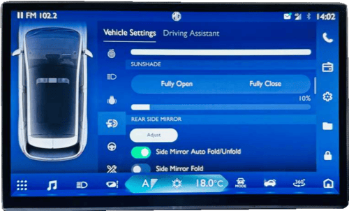Option 3: Manual folding: To ensure the pedestrian's safety, the outside rearview mirror can be folded forward or backward from its normal mounting position under sufficient impact force. It can be moved and reset manually.
Precautions for icing of electric folding outside rearview mirror*: In frosty weather, if the outside rearview mirror and its spindle are frozen, please remove the freeze first, and use the electric folding/unfolding functions. For example, if the mirror is frozen after the vehicle is parked outdoors for a night in winter, please remove the freeze first, and use the remote control or the passive entry button to unlock doors. Then, the outside rearview mirror will be unfolded smoothly. If the freeze is not removed, it will hinder the movement of the rearview mirror, damaging the mirror. If the outside rearview mirror glass is frozen, please remove the freeze first, and then use the defrosting function for auxiliary heating and deicing. If the freeze is not removed, the freeze will hinder the movement of the mirror while adjusting the mirror, causing damage to the mirror.
Adjust the rearview mirror to an appropriate angle manually. The interior rearview mirror has an anti- dazzling function, which can reduce the dazzling effect from vehicles behind at night. Turn the switch at the rearview mirror bottom forward to activate the anti-dazzling mode. Please remember to turn the switchback at day time.
Automatic anti-dazzle interior rearview mirror *
When the START/STOP switch is in position ON / RUNNING, the automatic anti-sazzle function is switched on automatically. When a following vehicle’s headlamps could dazzle the driver, the light sensor activates the anti-dazzle function. The automatic anti-dazzle function can be inhibited if:
- The light from the vehicle is not seen by the light sensor on the mirror.
- Reverse gear is selected.
The anti-dazzling mode will reduce the vision clarity behind the vehicle. Please drive carefully.
Your vehicle is configured with sun visors which can reduce dazzling effect on the driver and passengers. The sun visors can move upward, downward and sideward.
- To use the sunvisor pull it downward.
- To use the sunvisor to block the sun from the side window, pull it downward, release it from the bracket and swing it to the side; towards the window.
The sun visors may be equipped with a vanity mirror, a vanity mirror trim cover, a bill folder, etc. according to the vehicle configuration.
To use the vanity mirror, pull down the sunvisor and slide the mirror cover to open. Vanity light will glow on sliding the mirror cover and goes off when sliding back.
Close the vanity mirror cover securely and return the sunvisor to its original position after use.
Roof*: When the vehicle is in high- voltage/READY state, you can operate the electric sunroof on infotainment cluster.
Power sunroof sunshade*
Sunroof shade: The panoramic sunshade can be operated in infotainment cluster under Door & Window > Sunshade.
- Press "All Close", the panoramic sunshade closes, and the degree of closure is 0%.
- Press "All Open", the panoramic sunshade opens, and the degree of opening is 100%.
- Slide to adjust: the opening degree ranges from 0% to 100%.
Initialization learning of sunroof sunshade: The sunroof may lose its one-button opening or closing function in some cases, such as the replacement of sunroof glass or motor. In such cases, the sunroof initialization learning shall be conducted first. In the state where the sunroof is completely closed, set infotainment cluster settings under “Menu - Vehicle setting - Maintenance - Sunshade initialization” and click on Sunshade Initialization, the sunshade will shake slightly, indicating the completion of the initialization learning process. If the one button opening or closing function is still unavailable after initialization learning, it is recommended to drive to the JSW MG authorised service center for check and repair.
Individual switch has been provided on all doors.
To close the glass pull the switch in upward direction. To open the glass press the switch in downward direction.
Power windows can be operated for 30 seconds in 'IGN OFF' and 'KEY OUT' positions, provided the doors are closed.
The automatic window closing can be enabled/disabled in infotainment cluster “Menu - Vehicle setting - Door and windows - Window - close windows when door locked”. After enabling the auto window closing upon locking, long-pressing the unlock button will open the windows.
Power window
The glass lift switch is located on the front door armrest panel. The left and right switches control the left and right window glass, respectively. To raise the window, pull upward the switch. To lower the window, press the switch down. Release the switch when the window has reached the required position.
- Children may operate the power window and may get stuck by the window when they operate it. Do not leave a key or an unattended child in the vehicle. Misoperation of the power window may cause casualities
- Children may climb out of the vehicle window, resulting in serious injury or death. Therefore, no child is allowed to operate the window regulator switch or lean over the window.
The power window has the one button lowering function. Press the switch to the bottom (2nd gear) and release, and the window will be lowered to the fully-open position automatically.
One-button ascending is available in power window. To close the window, pull upward the switch to the top (2nd gear) and release, and the window will be raised automatically to the fully-close position.
The power window that has the onebutton rising function also has the anti-pinch function to reduce pinching injuries. The power window will be lowered automatically for a certain distance in case of any obstruction in its one-button rising process.
The driver's side window may lose the one - button rising and lowering functions in some cases, such as battery connection after disconnection. In such cases, the window initialization learning shall be conducted first. First, pull upward
the driver's side switch till the window glass is closed completely, and continue to pull upward the switch for at least 5s and release it. Now the initialization learning is completed. If the one-button rising or lowering function is still unavailable after initialization learning, it is recommended to drive to the JSW MG authorised service center for check and repair.
Window motor thermal protection is a protection function of preventing the window regulator motor from overheating due to long-time use. The motor will not work or the working frequency will be reduced to prevent the motor from being damaged when the motor reaches the preset temperature limit. Please do not continuously and frequently lift the window.
- Front Door Window Defogger Air Outlet.
- Side Air Outlet
- Front Windshield Defogger Air Outlet
- Central Air Outlet
- Floor Air Outlet
1. Front door window defogger air outlet
The front door window defogger air outlet is used to divert the air to the side door window, mainly to the outside rearview mirror area.
2. Side air outlet
You can divert air through the two adjustable side air outlets to both sides of the front passenger area or to the side window.
3. Front windshield defogger air outlet
Divert air to the front windshield.
4. Center air outlet
You can control the air flow direction of the center air outlets. 2 center vents provide air flow to front row passengers.
5. Floor air outlet
The floor air outlet is used to divert the air to the foot area.
Turn the mode selection button to acquire the desired air flow direction. Five ventilation modes are available as follows:
a. Face mode
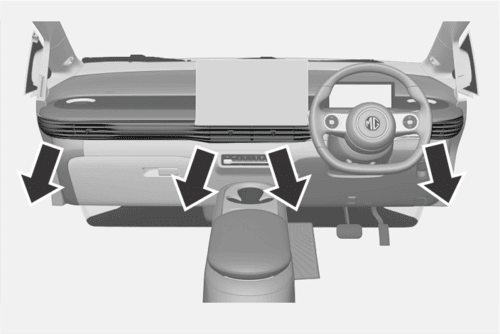In this mode, the air flows out from the central, rear and side air outlets.
b. Face / foot mode
In this mode, the air flows in two directions. Half of the air passes through the floor air outlets, and the rest of the air passes through the central, rear and side air outlets.
Foot mode
Most of the air flows out from the floor air outlet, a small amount of air flows out from the windshield and the front door window defroster air outlet and the side air outlet.
d. Foot/defrosting mode
In this mode, air flows out from the front windshield defroster air outlet, the front door window defroster air outlet, the floor air outlet and the side air outlet.
e. Defrosting mode
This mode allows air to be passed through the front windshield defroster air outlet and front door defroster air outlet.
1. Scenario Mode
2. Air Volume Adjustment
3. Front Defrosting
4. Rear Defroster
5. Temperature Adjustment
6. Internal circulation mode
7. External circulation mode
8. A/C button
9. Power button
10. Face Blowing Mode
11. Face & Foot Blowing mode
12. Foot Blowing Mode
13. Foot & Windshield Blowing Mode
ON:
Turn ON the air conditioning (A/C) system:
- The vehicle is in "READY" state.
- Press the air conditioner (A/C) button. When the "A/C" button on the A/C page of instrument cluster illuminates, confirm that the A/C is working.
- Adjust the fan speed and temperature.
Vehicle AC gets ON in not READY state also.
OFF: Press the A/C button again to make sure that the A/C stops refrigerating.
If the air conditioning system is turned on when the vehicle is powered off, the system will turn on automatically as the vehicle is started next time.
The A/C system may work only after the A/C fan is turned on.
Low-SOC A/C limit
The low-SOC A/C limit can be turned on/off in infotainment cluster “Settings-Vehicle-Energy-Low-SOC A/C Limit". After the function is enabled, when the SOC is lower than 10%, the A/C refrigeration or heating system will automatically turn off. Please charge the vehicle in time.
In ECO mode at normal ambient condition cabin AC will not get ON.
Internal circulation button:
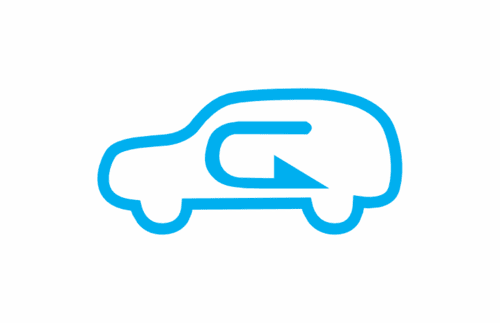Press this button during driving on a dusty road, or when you want to prevent the exhaust or outside smoke entering inside, or when you want to quickly decrease or increase temperature in the passenger area. The indicator will illuminate and the inside air will start to circulate internally.
Press this button again to switch to the external circulation mode and the indicator will go out. The system memorizes the previously set air circulation mode the next time you start the vehicle.
After the internal circulation mode is turned on for about 20 min, it will automatically switch to the external circulation mode for a while to obtain fresh air. In this period, you may feel that the hot or cool air outside enters the vehicle.
You may feel tired and sleepy after long-time driving in the internal circulation mode.
Please switch to the external circulation mode on a regular basis to intake fresh air.
Front defrosting button*
Press this button to select the front windshield defrosting mode.
Turn on the fan
Switch the air blowing mode to defrosting mode, the A/C function will be automatically activated, and the A/C button will illuminate.
Switch the air circulation mode to external circulation.
Rear windshield defrosting button*
Press the rear windshield defrosting button to turn on the rear windshield defroster on the instrument cluster. The button indicator will illuminate. Please turn off the defroster after your view becomes clear.
After you press the button, the defroster will work for about 15 minutes and then turn off.
AUTO button*
In the AUTO mode, the A/C system automatically adjusts to keep the temperature inside the vehicle within a certain range.
Press the AUTO button, and the AUTO button lights up. At this time, the air volume, cooling/heating damper, A/C state, air distribution mode, and internal/external circulation mode all enter the automatic control state.
If the air volume, blowing mode or A/C state is manually adjusted in the AUTO mode, the adjusted function is no longer automatically controlled by the system and the AUTO indicator will turn off. Other related functions are still controlled by the system automatically.
When the air conditioner is powered off, you can press the automatic mode (AUTO) button to turn the A/C system on and enter the automatic mode.
Lack of proper maintenance may cause damage to the defroster or scratches on the glass.
It is not allowed to use any sharp cleaner or that prone to cause glass wear to clean the rear windshield.
During vehicle cleaning or when operating near the rear windshield, please take care not to shake or damage the defroster wire.
If the driver’s view is affected, an accident can happen, causing personal injuries, damage to the vehicle or property loss.
Do not use the rear windshield defroster under the following circumstances:
Snow or ice has deposited on the rear windshield.
Common Settings of Air Conditioner Refrigerating device of the A/C system is used to cool down the inside air and remove the moisture and dust contained in the air.
If the temperature set to a comparatively high temperature, warm air will be generated inside the vehicle even though the air conditioner (A/C) refrigeration function is activated.
After the refrigeration turned on, you can find water drops in the lower area of the engine compartment. It is normal that the water drops are formed as water vapor condenses on surface of the air conditioning system component.
As the operation of the air conditioner compressor needs to consume a part of power. This is the reason why you may find that the power of the vehicle drops rapidly when the air conditioning cooling function is activated.
1. Cool air
1.1 Normal cooling
- Turn on the A/C button.
- Activate the internal circulation mode.
- Switch the air distribution mode to face mode ( ) or dual mode ( ).
- Adjust the temperature to the cool air area.
- Adjust the fan speed to the desired value.
1.2 Ǫuick cooling
To cool down fast in scorching hot days or after the vehicle is exposed to the blazing sun for a long time:
- Open the windows a little to expel the hot air inside and fully close the all windows.
- Turn on the air conditioning (A/C) system.
- Activate the internal circulation mode.
- Switch the air distribution mode to face mode ( ).
- Adjust the temperature to the maximum coolness.
- Adjust the fan speed to the maximum.
- Only use AC max switch.
2. Warm air
2.1 Normal heating
- Activate the external circulation.
- Switch the air distribution mode to foot mode ( ) or dual mode ( ).
- Adjust the temperature to the warm air area.
- Adjust the fan speed to the desired value.
2.2 No rapid heating mode switch: Activate the rapid heating mode to increase the passenger area temperature quickly. It is prohibited to activate this mode for a long time, otherwise the inside air quality will decrease and the windows will fog up. To clear up the fog on the windows, turn off the internal circulation mode so that fresh air enters inside.
To acquire the warmest air:
- Activate the internal circulation mode.
- Switch the air distribution mode to foot mode ( ).
- Adjust the temperature to the maximum warmness.
- Adjust the fan speed to the maximum and switch off AC.
To control the air to flow out from the central air outlet and the side air outlet:
- Activate the external circulation mode.
- Switch the air distribution mode to face mode ( ) or dual mode ( ).
- Adjust the temperature to the cool air area.
- Adjust the fan speed to the desired value.
HVAC system is equipped with a cabin air filter. If the AC performance is subjectively low, it is recommended to check cabin air filter at the nearest JSW MG Motor dealership. A choked filter may lead to poor cooling.
The seat cushion and backrest are provided with ventilating elements. After the vehicle is set to READY mode, access the air conditioning control interface and press the ventilation switch to control the ventilating function of the corresponding seat.
1. Side air outlet
2. Glove box switch
3. USB interface
4. Defrost air outlet for front
5. Cup holder button/instrument cluster button
6. Defrost air outlet for front*
7. Windshield air outlet
8. Central air outlet
9. Infotainment & vehicle control screen
10. Audio system control key/Cruise control key*/Advanced
11. Shift lever
12. Instrument cluster
13. Voice control button/audio system control
14. Vehicle lamps, turn signal lamps and wiper
15. Defrost air outlet for front
16. Side air outlet
17. Airbag - driver/horn switch
18. Electronic parking brake switch
19. Emergency power-off switch
20. Cowl hood release handle
21. Accelerator pedal
22. Brake pedal
23. AC temperature control button
24. Air recirculation mode button
25. Rear defroster button
26. Front windshield defroster button
27. Hazard warning lamp
28. Auto AC button
29. AC on/off button
30. AC mode button
31. Fan speed control button
32. Cup holder
33. USB Interface
34. Rear console air outlet
35. 12V on-board power supply
36. Key induction area
1. Front Passenger's Seat Belt Unfastened Warning Indicator
2. Driver Seat Belt Warning Indicator
3. Door Ajar Warning Indicator
4. Charging Cable Connection Indicator
5. Rear Fog Light Indicator
6. Low Beam Indicator
7. High Beam Indicator
8. Position Indicator
9. READY Indicator
10. Automatic Vehicle Hold (AVH) working Indicator
11. Automatic Vehicle Hold (AVH) Fault Warning Indicator
12. Electronic Parking Brake (EPB) Working Indicator
13. Electronic Parking Brake (EPB) Fault Warning Indicator
14. Brake System Fault Warning Indicator
15. Vehicle Fault Warning Indicator
16. EPS Fault Warning Indicator
17. Tire Pressure Monitor System (TPMS) Fault Indicator
18. Airbag Fault Warning Indicator
19. Electronic Stability Control (ESC) State Indicator*
20. Electronic stability control (ESC) off indicator*
21. Battery pack heating indicator
22. Energy recovery indicator
23. Engine compartment opening indicator
24. Rear passenger belt warning light
25. 12v battery fault indicator
25. Charging status indicator
26. HV battery thermal runaway warning lamp
27. Left turn signal indicator/hazard warning flasher
28. Gear display
29. Right turn signal indicator/ hazard warning flasher
30. Immobilizer system indicator
31. Vehicle Fault Warning Indicator
32. Cruise Control Indicator
33. Cruise Speed Indicator
34. Drive power limit indicator
35. Motor overheating warning indicator
36. ABS indicator
37. Driving mode
38. Display
39. Vehicle status display
40. Odometer
41. Range
42. SOC indication
45. HV battery low SOC indicator
1. Speedometer
It displays the vehicle speed.
Please keep the speed within the limit when driving in a speed limit zone.
SOC indicator
The HV battery's state of charge (SOC) is displayed from 0% to 100%.
- Battery percentage between 20% to 100%: The SOC bar is green.
- Battery percentage between 0% to 20%: The SOC bar is red, indicating that charging is urgently needed.
- Avoid letting the HV battery run completely out of power. Always keep enough charge for your next trip.
- When the low HV battery warning lamp illuminates, the battery's capacity is significantly reduced. Avoid driving on expressways or overpasses and charge the battery as soon as possible.
Motor speed/battery voltage/ battery current meter
On the lower left of the instrument, you can switch to display the motor speed/battery voltage/ battery current meter.
It displays the motor speed per minute. This parameter displays the battery voltage. Display battery current.
Keep the motor speed under 7000 rpm. Running at high speed for a long time may overheat and damage the motor.
Odometer
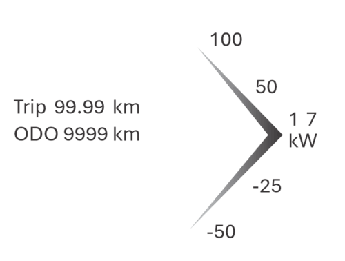The trip and total mileage are displayed.
- Switching modes: Short press the right side of the steering wheel scroll wheel to enter the instrument cluster control mode.
- Navigating pages:
- Turn upwards: Scrolls to the previous page.
- Turn downwards: Scrolls to the next page.
- To reset the trip mileage, go to Settings > Vehicle > Vehicle Maintenance and click "Reset”
It is lawfully forbidden to adjust the odometer for illegal purposes.
Range
It indicates the mileage which the vehicle can be driven with the remaining SOC.
The range is estimated for the reference of the driver and passengers only.
The actual endurance mileage is related to various factors such as current road conditions (such as a long steep slope), driving habits (such as frequent acceleration and deceleration), temperature (such as low temperature), and whether electrical equipment (such as A/C) is on.
Gear display
It displays the gear status.
P: Park gear
R: Reverse gear
N: Neutral
D: Drive
Display the current driving mode in the lower right corner (Eco+ mode, Eco mode, Normal mode, Sport mode).
The economy mode+, economy mode, standard mode and sport mode can be switched in "Settings- Vehicle-Driving-Driving Mode" of infotainment cluster.
Eco+ mode: Extreme energy-saving mode, where the overall vehicle thermal management efficiency is reduced, maximum speed is restricted, but it supports the longest range, with a maximum speed limit of 80 km/h.
Eco mode: The vehicle is in the state of low energy consumption, which is useful energy-saving driving.
Normal mode:The vehicle is balance for daily driving.
Sports mode: Sports mode concentrate on providing more power to enhance the performance. Constant use of sport mode will increase energy consumption.
It is recommended to use sport mode when driving on special road condition such as mountain roads.
Ready indicator
When the READY indicator illuminates, the vehicle is ready to drive. For this to happen:
- The legal key must be inside the vehicle.
- The driver's seat must be occupied.
Press the brake pedal until the READY indicator on the instrument cluster illuminates, and the vehicle enters the READY state.
In case of indication OFF/ any abnormality get the vehicle checked, contact JSW MG authorised service center.
Charging status indicator
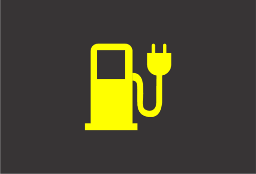High voltage mode: When the door is opened and the vehicle is in high voltage mode, this indicator lights up briefly and then turns off, showing that the charger is functioning normally.
Charging: The indicator lights up when the vehicle is charging. It will turn off once charging is complete.
Low battery: If the indicator stays on continuously and the HV battery's state of charge (SOC) is very low, charge the battery as soon as possible.
In case of indication continuously ON/ yellow indication when charge level below 20%, charge the vehicle.
Charging cable connection indicator
High voltage mode: When the door is opened and the vehicle is in high voltage mode, the indicator briefly lights up and then turns off, showing that the charging circuit is normal.
Charging: The indicator lights up when the charging cable is connected.
No illumination: If the indicator does not light up during charging, check if the charging cable connectors are securely connected.
In case of indication continuously ON/ red indication when charging, check the charging cable is connected or not. Get the vehicle checked, contact JSW MG authorised service center.
Energy recovery indicator
When the battery pack can be charged and the vehicle is at high speed with the accelerator released or brake applied, the system recovers energy by converting mechanical energy into electric energy, which is stored in the HV battery to extend the driving range.
Energy recovery: The indicator lights up and power is shown as a negative value when the system is working.
Limitations:
- No energy recovery if the battery pack cannot be charged.
- Energy recovery is limited in cold conditions and cannot occur below -10°C.
- Energy recovery is not possible if the vehicle speed is below 8 km/h.
- Energy recovery is paused when ESC is activated. It resumes after ESC is deactivated for 1 minute.
- No energy recovery if the ABS MIL or ESC indicator is on.
In some cases, the energy recovery indicator might not light up, but energy recovery could still occur at a lower power.
Adjustable energy recovery strength To adjust the energy recovery strength:
1. Default setting: Energy recovery is set to heavy mode by default.
2. Adjusting: Go to Settings > Vehicle > Driving > Energy Recovery Mode in the infotainment system.
Choose from three levels: Light, Normal, and Heavy.
Energy recovery strength increases gradually from Light to Heavy.
In case of indication continuously OFF. Get the vehicle checked, contact JSW MG authorised service center.
Turn signal indicator/ hazard warning flasher
The turn signal indicator/hazard warning flasher shows if the exterior turn signals or hazard warning flashers are working.
If the green arrow does not blink when using the turn signal or pressing the hazard warning button, check and replace the fuse or bulb if needed.
These indicators are crucial for driving safety. If the turn signal or hazard flasher bulbs are burnt out, replace them immediately. Failure to maintain these indicators can lead to accidents, personal injuries, and damage to the vehicle or other property.
In case of fast blinking green light. Get the lamp checked, contact JSW MG authorised service center.
If the flashing time is shorter than normal, it indicates that the turn signal lamp bulb has burnt out and must be replaced.
Tailgate open indicator
This indicator flashes when tailgate is open.
In case of indication continuously ON. Ensure to check the tailgate position before driving. Get the vehicle checked, contact JSW MG authorised service center.
Door ajar warning indicator
The warning lamp illuminates when the door is opened or is not completely closed.
In case of indication continously ON. Check the doors locked/unlocked state before driving. Get the vehicle checked, contact JSW MG authorised service center.
12V Battery fault warning indicator
When the vehicle is powered on, this indicator will illuminate, and the READY lamp should illuminate and then turn off, indicating that the 12V battery is connected normally.
If this indicator illuminates at any other time, it indicates that the 12V battery is being or has a fault. Please charge the 12V battery first.
If you encounter any of the following situations, contact the nearest JSW MG authorised service center for a vehicle inspection:
- The lamp does not illuminate when the vehicle is powered on.
- The lamp lights up but does not turn off.
- The warning lamp illuminates while the "READY" indicator turns off, indicating the vehicle cannot run.
In case of indication continuously ON. Ensure the vehicle is not at ACC ON for longer time. Either turn OFF or put in READY mode. Get the vehicle checked, contact JSW MG authorised service center.
Battery pack heating indicator
The battery pack heating indicator lights up in low temperatures to show that the system is heating the battery to maintain a safe charging temperature.
- During charging: The indicator will illuminate to indicate that the battery is being heated to ensure it charges safely.
- After full charge: If charging power is not disconnected in cold weather, the indicator remains on, showing that the system continues to heat the battery to reach an optimal temperature.
This lamp is a state indicator, not a malfunction indicator light (MIL). It does not affect driving and should not be on while driving. If it lights up during driving, contact the nearest JSW MG authorised service center.
In case of indication continuously ON. Do not try to drive the vehicle in this condition. Get the vehicle checked, contact JSW MG authorised service center.
High beam indicator
The high beam indicator illuminates when the headlamp high beam is turned on.
In case of indication continuously OFF. Get the lamps and combi-switch checked. Get the vehicle checked, contact JSW MG authorised service center.
Low beam indicator
The low beam indicator illuminates when the headlamp low beam is turned on.
In case of indication continuously OFF. Get the lamps and combi-switch checked. Get the vehicle checked, contact JSW MG authorised service center.
Rear fog light indicator
The indicator illuminates when the rear fog lamp is turned on. Refer to relevant contents in Section "Rear Fog Lamp" of Chapter " Lighting".
In case of indication continuously OFF. Get the lamps and combi-switch checked. Get the vehicle checked, contact JSW MG authorised service center.
Position indicator
This indicator illuminates when the position lamp is turned on.
In case of indication continuously OFF. Get the lamps and combi-switch checked. Get the vehicle checked, contact JSW MG authorised service center.
ABS fault warning indicator
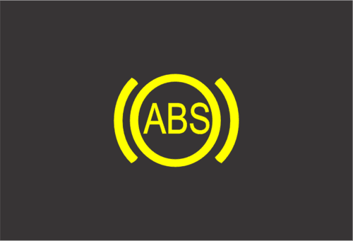When the vehicle is powered on, the illuminate to show that the system is self-checking and that the lamp is functioning. It should turn off after a few seconds.
Consult the nearest JSW MG authorised service center if:
- The lamp does not light up when the vehicle is powered on.
- The lamp stays on continuously.
- The lamp lights up while driving, indicating a potential ABS fault.
Although the vehicle can operate normally without ABS, it's strongly recommended to have the ABS inspected and repaired as soon as possible.
An illuminated ABS warning lamp may signal that the braking system is not functioning properly. If the brakes are not in good working condition, it can lead to collisions, personal injuries, and damage to your vehicle or other property.
In case of indication continuously ON. Do not drive the vehicle in this condition. Get the ABS module of vehicle checked. Get the vehicle checked, contact JSW MG authorised service center.
Immobilizer System Indicator (Anti theft)
This indicator illuminates when the door is opened. It shall go out after the vehicle enters the READY state. This indicates that the indicator can work normally.
In case of indication continuously ON. Do not drive the vehicle in this condition. Get the ABS module of vehicle checked. Get the vehicle checked, contact JSW MG authorised service center.
Vehicle Fault Indicator
When the vehicle is powered on, this indicator lights up; the READY lamp should illuminate and then turn off. This indicates that the power system is normal.
In case of the following circumstances, please contact the nearest Aftersales Service Center for vehicle inspection:
- When the power supply is on, the lamp remains off.
- After lighting up, it does not go out.
- This indicator lights up and the "READY" indicator goes out, indicating that the vehicle cannot run.
- This indicator also lights up Indicating:
- Power battery abnormal temperature
- Power battery / motor system fault indication
In case of indication continuously ON. Do not drive the vehicle in this condition. Get the HV battery of vehicle checked. Contact JSW MG authorised service center.
Driver seat belt warning indicator
When the vehicle is powered on, and the driver fails to fasten the seat belt, the seat belt warning lamp will be turned on. The following circumstances will appear unless the driver fastens the seat belt properly:
- The seat belt warning lamp turns on;
- If the vehicle speed exceeds 10 km/h, the warning lamp will flash and the warning buzzer will sound for a period of time.
In case of indication continuously ON. Ensure to fasten seatbelt while driving. Get the vehicle checked. Contact JSW MG authorised service center.
Front passenger's seat belt unfastened warning indicator*

The seat belt warning lamp will be turned on if the vehicle is powered on, while the front passenger's seat is occupied, but the seat belt is not fastened. After that, the following situations will occur unless the passenger in the front passenger's seat fastens the seat belt:
- The seat belt warning lamp turns on;
- If the vehicle speed exceeds 10 km/h, the warning lamp will flash and the warning buzzer will sound for a period of time.
In case of indication continuously ON. Ensure to fasten seatbelt while driving. Get the vehicle checked. Contact JSW MG authorised service center.
Rear passenger belt warning indicator*
The seat belt warning lamp illuminates if the rear seat occupied but the occupant does not fasten the seat belt properly after the ignition is turn on.
In case of indication continuously ON. Ensure to fasten seatbelt while driving. Get the vehicle checked. Contact JSW MG authorised service center.
Tire Pressure Monitoring System (TPMS) Fault Indicator
When the tire pressure is low, this indicator stays on; when the TPMS fails, this indicator flashes for a period of time and then stays on.
(In case of a direct tire pressure monitoring system, when the tire pressure is too high, the indicator will also be normally on). Please timely check and adjust the air pressure.
For the correct tire pressure, please refer to “Technical data".
In case of indication continuously ON. Check the tire pressure in all 4 tires. Get the vehicle checked. Contact JSW MG authorised service center.
Direct tire pressure monitoring system*
As shown in the figure, a direct TPMS can display corresponding tire pressure value on the instrument. After the vehicle has been driven for a period, it will update the dashboard display information based on the collected data.
Indirect Tire Pressure Monitoring System does not display tire pressure values and has a reset switch on the vehicle console to distinguish.
Advanced intelligent driving system fault warning indicator*

When this warning lamp turns yellow, it indicates that the advanced intelligent driving assistance system fails and relevant functions of the advanced intelligent driving assistance system are unavailable. Please go to the JSW MG authorised service center for inspection in time.
Cruise Speed Indicator*
When the intelligent cruise assist is enabled, the light of cruising speed stays on blue in the instrument. The value indicates the set cruise speed. See "Driving and Controls" for details.
SOC Low Warning indicator
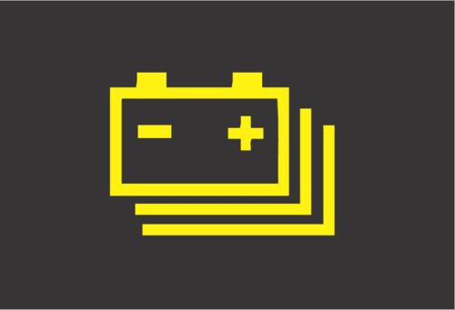When the vehicle is powered on, the warning lamp lights up briefly and then goes out, indicating that the traction battery is properly charged. If the lamp does not illuminate at this time, please consult the JSW MG authoried service center.
If it illuminates at any other time, it indicates that the SOC of traction battery is low. Please charge in time.
In case of indication continuously ON. Charge the vehicle. Get the vehicle checked. Contact JSW MG authorised service center.
Drive Power Limit Indicator
When the vehicle is powered on, this indicator lights up and then goes out, indicating that the power system is normal.
If this indicator keeps on or flashes, the system has a fault and the power performance will be limited. Please contact the Aftersales Service Center for repair as soon as possible.
When the drive power is limited, the vehicle speed may be significantly lower than that of other vehicles on the road. Therefore, be more careful to drive.
If the vehicle speed cannot be maintained within a safe range, move the vehicle to a safe area and contact the Aftersales Service Center for help.
In case of indication continuously ON. Do not try to drive the vehicle in this condition. Get the vehicle checked. Contact JSW MG authorised service center.
Motor Overheating Warning Indicator
When the vehicle is powered on, the warning lamp lights up over a short term and then goes out, indicating that the motor temperature is normal.
If this warning lamp illuminates during driving, the temperature of the motor is too high. Please park the vehicle in a safe area as soon as possible to cool the motor down.
In any of the following cases, the motor may get overheated:
- Go uphill for a long time.
- Run at high speed for a long time.
- Be subject to frequent and rapid acceleration.
- Run for a long distance in hot weather.
In case of indication continuously ON. Do not try to drive the vehicle. Get the vehicle checked. Contact JSW MG authorised service center.
Insulation Warning indicator
When the vehicle is powered on, the warning lamp lights up over a short term and then goes out, indicating that the warning lamp is normal.
If the warning lamp illuminates at any other time, the vehicle is in a risk of electric leakage. Please contact the JSW MG authorised service center for repair immediately.
In case of indication continuously ON. Do not try to drive the vehicle in this condition. Get the vehicle checked. Contact JSW MG authorised service center.
HV Battery Thermal Runaway Warning indicator*
When the warning lamp goes on, it indicates that the traction battery is overheated and the vehicle is faulty. Please leave the vehicle as soon as possible and evacuate to a safe area to call for rescue.
In case of indication continuously ON. Do not try to drive the vehicle. Get the vehicle checked. Contact JSW MG authorised service center.
Reversing Radar* The intelligent reversing radar judges the distance between rear end of the vehicle and the obstacle via the ultrasonic transducer installed on the rear bumper.
When the vehicle is in the READY state and the reverse gear is engaged, the buzzer sounds 1 time, indicating that the system is normal.
If the buzzer buzzes twice, it indicates that one sensor fails to work; if it buzzes 3 times, it indicates that 2 or more sensors cannot work normally.
The intelligent reversing radar starts to work immediately every time you start the vehicle and shift to reverse gear.
The reverse sensor can only help the driver to make judgment. The driver should always keep concentrated. MG shoulders no responsibility for any personal injury or vehicle damage resulting from careless driving with great reliance on the on-board reverse driving sensor.
When the distance between the vehicle and the obstacle behind it is within about 1.5 m~ 1.0 m, the reverse buzzer sends out alarm sound at long intervals.
When the distance between the vehicle and the obstacle behind it is within about 1.0 m ~ 0.6 m, the reverse buzzer sends out alarm sound at short intervals.
When the distance between the vehicle and the obstacle behind it is within about 0.6 m ~ 0.4 m, the reverse buzzer sends out alarm sound at shorter intervals.
When the distance between the vehicle and the obstacle behind it is within about 0.4 m, the reversing buzzer sends an alarm constantly.
Before reversing, please ensure that no child or animal is near the vehicle. When reversing in an area with complex environments, you'd better get off for confirmation or invite someone for observation outside the vehicle. Do not rely on the reversing auxiliary device as the only basis for safety assessment.
- To ensure reversing safety and to leave enough time for the system to detect, please drive at a speed of 5 km/h or lower during reversing.
- Please stop the vehicle immediately a constant alarm sound is heard in case that the vehicle bumps onto the obstacle behind it.
- Please do not knock the transducers hard or wash them directly with a high pressure water gun, otherwise the transducers can be damaged.
- Sundries on the transducers such as snow, mud and water drops can lead to misoperation.
- Please note that the system is likely to fail to detect the following obstacles: those of a conical shape or acute angle reflectors. Objects which are prone to absorb sound wave, such as cotton and snow. Fine objects such as iron gauze and ropes. Obstacles 30 cm below or protruding obstacles 1m above the ground. The system may detect these obstacles first, but as they become nearer and nearer to the vehicle, they can get out of the effective detection range, not detected as a result.
- False alarms may be raised during uphill or downhill reversing to remind you to be more careful in this case.
- Please note that the system is likely to work abnormally due to wrong induction under the following circumstances: reversing the vehicle on an uneven road, a road paved with round stones, an uphill road or grassland. Interference from ultrasonic noise, metallic sound or high pressure gas emission sound of the same frequency. Foreign matters are attached to the sensor surface. Height change of vehicle rear end under heavy load. Other detecting equipment installed within the effective detection range.
- If any nonstandard radio communication equipment is installed on the vehicle, usage of such equipment (not including mobile cellphone and audio system) may affect the function of this system
After every ignition cycle with a 30 second gap between door lock and unlock, the vehicle will return to default vehicle settings.
Vehicle Setting
| S. No. | Function | Setting Options | Default vehicle settings |
|---|---|---|---|
| 1 | Driving Mode | ECO+, ECO, Normal, Sport | Default Normal |
| 2 | Energy Recovery | Light, Normal, Heavy | Default Heavy |
| 3 | Electronic Stability Control | ON, OFF | Default ON |
| 4 | Auto Hold | ON, OFF | Previously selected |
| 5 | Comfort Parking | ON, OFF | Previously selected |
| 6 | Follow Me Home | ON, OFF | Previously selected |
| 7 | Headlight Setting | Auto, Low Beam, Position Lamp, Off | Default Auto |
| 8 | Headlight Height Setting | Level 3, Level 2, Level 1, Level 0 | Previously selected |
| 9 | Rear Fog Lamp | ON, OFF | Default OFF |
| 10 | Ambient Light | Auto, ON, OFF | Previously selected |
| 11 | Sun Shade | Fully Open, Fully Closed | Previously selected |
| 12 | Side Mirror Auto Fold/Unfold | ON, OFF | Previously selected |
| 13 | Window Close with door lock | ON, OFF | Previously selected |
| 14 | Window Child lock | ON, OFF | Default "OFF" |
| 15 | Auto Wiper | 1, 3, 5, 7 | Previously selected |
| 16 | Lock - Approach Unlock | ON, OFF | Previously selected |
| 17 | Steering Wheel Online | Mute | Online Music |
Lighting switchYou can set the lighting status in “Menu - Vehicle settings - Lights - Headlight setting” to options like Auto, Low beam, Position lamp and Off.
OFF: All lights are turned off.
AUTO: Lights turn on automatically.
Position lamp: Interior switch backlight, position light, and license plate light are on.
Low beam: Low beam and all the above lights are on.
The default setting is Auto, which activates every time the power is turned on.
High beam
To switch on the high beam:
- Make sure the headlamp is on low beam.
- Push the control lever towards the instrument panel.
- The high beam indicator will light up.
- Push the lever to turn the high beam on or off.
When approaching oncoming vehicles or a vehicle ahead, switch from high beam to low beam. High beams can temporarily blind other drivers, increasing the risk of a collision.
Headlamp flashing To activate the headlamp high beam flash:
- Pull the control lever on the right side of the steering wheel towards you.
- Release the lever after flashing. The lever will return to its normal position.
- Keep the lever pulled to keep the high beams on.
Hazard warning indicator
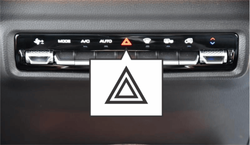Press | to turn on/off the hazard flasher.
Turn indicator
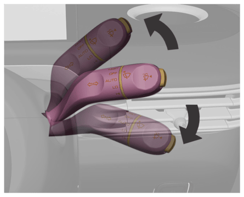- Control lever upward: Activates the left turn signal lamp.
- Control lever downward: Activates the right turn signal lamp.
After you complete a turn, the signal will automatically stop, and the lever will return to the normal position.For changing lanes:
- Pull the lever up or down to the halfway position (not the full turn signal position).
- Hold the lever until you complete the lane change.
- Release the lever, and it will return to the normal position automatically.
Reversing lamp: The reversing light will illuminate when the vehicle is in the READY state and the reverse gear is engaged.
Brake light: The brake lamp illuminates as you depress the brake pedal.
Daytime running lamps*: After the vehicle is started, the daytime running lamp will be turned on automatically; after the position lamp is turned on, the lamp will go out automatically.
Rear fog lamp To turn the rear fog light on or off:
- Go to “Menu - Vehicle settings - Lamp - Rear fog light”.
- When the rear fog light is on, the low beam will also turn on.
Headlamp height adjustment: To adjust the headlamp range based on vehicle load:
- Go to “Menu - Vehicle settings - Lights - Headlight setting” in the infotainment system.
- Choose from the following levels (0-3):
- - 0 : Front seats occupied
- - 1: All seats occupied
- 2: All seats occupied with luggage compartment loaded
- 3: Driver's seat occupied with luggage compartment loaded
Adjusting the headlamp height helps achieve optimal lighting and avoid dazzling other drivers.
Follow-Me-Home Your vehicle has a "Follow-Me-Home" function that provides lighting when you leave the vehicle at night after turning off the engine.
To adjust the Follow-Me-Home lighting:
1. Go to “Menu - Vehicle settings - Light - Follow me home” in the infotainment system.
2. Choose the delay time for turning off the dipped beam: 15 seconds, 30 seconds, or 60 seconds. The delay time will increase accordingly.
- After activating the "Follow-Me- Home" function:
- Turn the lighting switch control lever towards the steering wheel twice to trigger the delayed turn- off.
- If the vehicle is locked remotely, the low beam will turn off automatically after 30 seconds.
- If the vehicle is not remotely locked, the low beam will turn off automatically after 10 minutes.
a. Front reading lamp*:
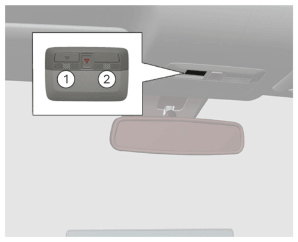The front reading lamp has 2 working switches:
🕔: The lamp illuminates and keeps illuminated until it is manually turned off.
②: The lamp is on when the front door is opened, and the lamp is off when the front door is closed.
Please avoid usage of the inside lamps during driving in night or darkness. A bright passenger compartment can reduce the visibility exterior ambient and cause collision as a result.
Rear reading lamp*:
If the vehicle is equipped with a reading lamp at the auxiliary armrests on both sides of the rear seat, press the switch on the reading lamp to turn it on or off.
Please avoid usage of the inside lamps during driving in night and darkness. A bright compartment can reduce the visibility outside and cause collision as a result.
Trunk lamp*
The trunk illumination lamp illuminates as the tailgate is opened. It goes out after the tailgate is closed.
Interior ambient lamp*
If equipped, the ambient lights are arranged in the instrument panel and four door storage areas.
Ambient lights
You can set ambient lights to Auto/ On/ Off in “Menu - Vehicle settings - Lamp - Ambient light - Auto/On/Off”.
Adjustment mode: You can set fixed mode/random mode in “Menu - Vehicle settings - Lamp - Ambient light - Mode adjustment - Constant/Random”.
Constant mode
a. Colour selection: You can select the desire colour from the colour panel.
b. Breathing effect: You can set the breathing effect of ambient lights in “Menu - Vehicle settings - Lamp - Ambient light - Mode adjustment - Constant - Breathing effect”.
Random mode: On selecting random mode you can select “Soft/smooth/all” mode setting and also choose duration of the same.
Brightness adjustment: You can adjust the brightness of ambient lights (0%-100%) in "Settings - Vehicle - Lights - Ambient Lights - Brightness Adjustment".
The wireless charging function for a mobile phone is realized without the necessity for a connection cable. It is achieved using electromagnetic.
The wireless charging function does not apply to all mobile phones, only brands/models with wirelesscharging function.
Wireless Charger in the car can be used to charge Ǫi certified mobile phones wirelessly. Mobile phone (Receiver) controls the power transfer from the Wireless charger in the Car (Transmitter). So, Charging rate of the phone will vary based on type/brand of phone used.
For using a mobile phone without wireless charging function, need to use Ǫi certified accessories/ adapter.
The wireless charging area is located in the area shown in the figure. The charging function is enabled when the START/STOP Switch is placed in the ACC/ON/READY positions. Place the phone face up horizontally in the charging area, which can be used for wireless charging.
Only one mobile phone can be charged at a time.
Ensure that phone is kept properly on the charging pad. There is possibility of inadequate charging if the mobile phone is not resting properly on the charging pad, in such conditions the phone should be lifted and placed back properly.
Do not keep any metal object in the charging pad along with Mobile Phone. It will affect phone charging performance. Also, it may cause overheating of phone and metal objects.
Smart phones of some manufacturers may display charging indication on weak current and no increase in net charge. This is due to the particular characteristic of the smart phone and does not imply a malfunction on wireless charging function.
For certain mobile phones with their own protection, the wireless charging speed may decrease sometimes, and the wireless charging may stop.
When the wireless charging system of the mobile phone is being used, make sure that the smart key is 20cm or more away from the wireless charging area.
The wireless charging efficiency may reduce when there is a heavy accessory cover on the smart phone.
Items like vehicle Keys, Pen, Coins, Magnetic components such as credit card, telephone card, bankbook, any transportation ticket or any metallic objects should not be kept on Wireless charging pad/ over mobile phone while charging. They may get damaged and may also affect mobile charging performance.
When any smart phone without a wireless charging function is placed on the charging pad, It does not affect the vehicle or the smart phone in any way.
1. On bumpy roads, the wireless charging function of the mobile phone may intermittently stop and resume. If the mobile phone deviates from the charging area and stops charging, it will need to be placed back in the rechargeable area. Note: The size of each brand of mobile phone is different, and the position of the charging coil on the mobile phone is different. Please adjust the position of the mobile phone accordingly. In addition, the case of some mobile phones may have an impact on wireless charging. It may be necessary to adjust or remove the case to achieve wireless charging.
2. If the mobile phone cannot be charged correctly, please make sure that there is no foreign matter in the wireless charging area or wait for the wireless charging area to cool down before further attempts. If it still fails, seek the JSW MG Authorised service center.
Eg. Latest iPhone models have inbuilt Mag safe technology which limits the wireless charging performance.
1) Instrument Panel Central Storage Box
2) Storage box Sliding Curtain*
3) Console Storage box
4) Armrest storage box
5) Glove Box
6) Map Pocket
7) Cup Holder
8) Door storage groove and Armrest
9) Rear side wall storage Groove and armrest
10) Backrest hook
11) Luggage
12) Emergency equipment
1) Instrument panel central storage box
The storage box is positioned below the central control screen.
2) Storage box sliding curtain
If equipped, you can manually slide the curtain to open the storage box.
3) Console storage box
The console storage box is positioned behind the armrest box.
4) Armrest storage box
It is positioned between the front seats. Pull up to open the storage box cover and close it after use.
5) Glove box:
To open: Press the knob and open the glove box flap.
To close: Lift glove box flap upward until it engages.
6) MAP pocket
The map pocket is located on the backside of the front seat backrest.
7) Cup Holder
The cup holder is located on the console between the front seats.
On the rear seat armrests, there are also cupholders for some models.
When the car is moving, you must not put an uncovered container of hot drinks in the cup holder. If the drink spills, it could burn someone or make it harder to control the car. To lower the chance of getting hurt during sudden stops or crashes, don't place a bottle, glass, or similar container without a cover in the cup holder while driving.
8) Door storage groove and Armrest
1. Armrest
2. Storage tank
The door storage groove and armrest are located on the front doors and rear doors.
9) Rear Side Wall Storage Groove and Armrest*
The rear side wall storage and armrest in provided in the middle of the rear seat, which can be opened by pulling the drawstring. It has a built-in cup holder for placing your cups and other items. ( if equipped)
10) Backrest Hook
The hook is located at the junction of the seat backrest and the headrest. You can hang a shopping bag or other suitable objects on the hook as required.
11) Luggage
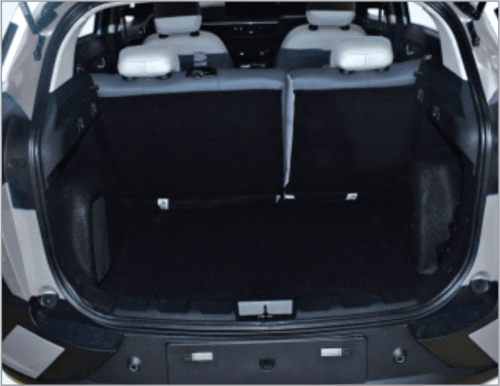- Store the luggage in luggage compartment. You can keep suitcase, bags, etc
- Luggage cover is designed only for hiding the luggage compartment.
Loading info:
- Heavy objects in the trunk should be placed near the backrest and make sure the seat backrest is secure. If you need to stack objects, put the heavier ones at the bottom.
- Objects should be secured to prevent them from sliding around. Don't leave loose objects in the vehicle.
- Loaded items should not be higher than the top of the seat backrest.
- Nothing should be placed on the tailgate panel or instrument panel. Don't cover any sensors on the instrument panel.
- Objects should not block the pedals, parking brake gear liver not to limit the free driver movement.
- Do not drive the vehicle if the lift gate is open.
It is forbidden to place a perfume, cigarette lighter, propane gas cylinder or other combustible/ explosive materials in the vehicle. These items may catch fire or explode if the vehicle is left in high temp.
12) Emergency equipment kit: You need to know where the emergency equipment is in your vehicle and how to use it. Check this equipment regularly to ensure it's working properly and stored where it belongs.
First Aid Kit: The first aid kit is stored in the glove box. It has items for treating minor injuries only.
Check the contents of the first aid kit regularly and replace any items that have been used or have expired.
List of accompanying parts
| Sr. No. | Name | Ǫuantity |
|---|---|---|
| 1 | Towing hook | 1 |
| 2 | AC charger | 1 |
| 3 | Triangle warning sign | 1 |
| 4 | First-aid kit | 1 |
| 5 | Tire repair kit | 1 |
After unlocking the vehicle, open the driver's side door. The infotainment cluster will activate, and the vehicle will enter the HV state. In HV state, all hybrid circuits are active, allowing you to engage the gear for driving and the A/C system can provide cooling while in HV state.
a. Jump Starting: If you cannot unlock the vehicle with the remote control or if nothing appears on the instrument cluster, the 12V battery might be low.
In this situation, you can use another vehicle's 12V battery to jump start your vehicle, unless you are confident in your electrical knowledge and can do it safely.
b. Before Jump Starting
- Place the vehicles close enough so the jumper cables can reach but ensure that their body parts do not touch.
- Always avoid fans or any moving parts in the engine compartment, even when the vehicles are switched off.
- Turn off all electrical devices like radios, lights, and air conditioning. Put both vehicles in Park (P) and engage the parking brake. Turn off both vehicles.
- Open the hood (bonnet).
- Take off the battery cover inside the front trunk.
- Remove the cover of the engine compartment fuse box.
Turn off the audio and other equipment before jump starting.
c. Connecting the Jumper Cables
Before jump starting, make sure to correctly identify the positive (+) and negative (-) terminals to avoid reverse polar connections.
To jump start the vehicle, follow these steps:
Follow these steps to connect the jumper cables correctly and make sure to follow this sequence as shown in the illustration.
1. First, attach one end of the jumper cable to the red, positive (+) jumper terminal of your vehicle (1)
2. Then, connect the other end of this jumper cable to the red, positive (+) battery/jumper terminal of the assisting vehicle (2).
3. Next, take the second jumper cable and attach it to the black, negative (-) battery / jumper terminal of the assisting vehicle (3).
Finally, connect the other end of this second jumper cable to the black, negative (-) chassis ground of your vehicle (4).
Ensure the jumper cables only touch the correct battery or jumper terminals and the proper ground. Avoid leaning over the battery while making connections.
5. After connecting, follow the starting procedure to get the vehicle into the "READY" state and start it.
6. Keep the vehicle in the "READY" state or at idle or drive the vehicle to ensure the battery receives sufficient charge to start independently after the vehicle is turned off. A fully discharged battery may need up to 120 minutes (about 2 hours) of runtime to recharge completely. Running the vehicle for less time may not be enough to restart the battery.
If your vehicle does not start after several attempts, it needs service. Please seek assistance from Roadside Assistance or the nearest JSW MG authorised service center and let it be attended by trained professionals.
If you are unsure why your battery discharged, we recommend having your vehicle inspected by JSW MG authorised service center.
It is advisable to contact the JSW MG authorised service center for dedicated charging of the 12V battery as soon as possible.
To safely disconnect the jumper cables, follow these steps in reverse order of connection:
- Remove the jumper cable from the black, negative (-) chassis ground of your vehicle (4).
- Disconnect the other end of this jumper cable from the black, negative (-) battery/chassis ground of the assisting vehicle (3).
- Take off the second jumper cable from the red, positive (+) battery/jumper terminal of the assisting vehicle (2).
- Disconnect the other end of this jumper cable from the red, positive (+) jumper terminal of your vehicle (1).
Ensure you follow this exact sequence to avoid any electrical hazards.
There is a risk of battery explosion, which can cause burns from battery acid and could lead to electrical short circuits, resulting in personal injury or vehicle damage.
- Keep the battery away from flames or sparks. Avoid leaning over the battery during jump- starting.
- Prevent the cable terminals from touching each other.
- Wear safety goggles when working near the battery.
- Avoid contact between battery acid and eyes, skin, fabric, or paint surfaces.
- Make sure the replacement automotive battery for jump- starting matches the voltage of the original vehicle battery.
- Do not disconnect a dead battery from the vehicle.
Failure to follow these precautions or instructions could lead to a battery explosion, causing burns from battery acid or electrical system damage in both vehicles, and serious personal injury.
When connecting the jumper cables to charge a vehicle:
- When jump-starting your vehicle, prevent the positive (+) and negative (-) cables from touching each other. A spark could result in personal injury.
- Avoid connecting to the negative (-) terminal of the battery last. - Instead, attach the final clip to a metal part of the car's body, away from the battery. Do not connect it to any components.
- Connecting the jumper cable to the negative terminal of a dead battery could create sparks and lead to the battery exploding. A spark could cause the battery to explode, resulting in personal injury or vehicle damage.
- This can cause severe injuries or harm to the vehicle.
- Connecting jumper cables to components can also damage them.
Avoid using the battery to power other devices for extended periods. This can drain the battery quickly and might lead to accidents.
Improperly disposing of a battery can harm the environment and human health. Follow your local laws or regulations for proper battery disposal.
To protect your vehicle from damage:
- Use only a 12-volt power source (battery or jumper system) for jump-starting.
- Do not try to jump-start your vehicle by pushing it.
- Always ensure that the battery cover and cables are securely tightened after completing the jump start. Failure to do so could damage parts, cause noise issues, or allow foreign substances to enter.
If emergency towing is required, we recommend having it performed by an authorized JSW MG RSA partner or a professional tow-truck service.
a. Recommended towing procedure: If your vehicle breaks down, we recommend towing it with the driving wheels off the ground or placing it on a flatbed truck, as illustrated
Proper lifting and towing methods are crucial to avoid damaging the vehicle. Using wheel dollies or a flatbed is highly recommended.
Do not use lifting chain equipment to tow the vehicle. Instead, use plates or wheel lifting devices.
If towing the vehicle from the front is necessary, ensure the towing device supports the rear wheels off the ground. The rear wheels should not touch the ground during front towing. If the rear wheels are on the ground during towing from the front, it can cause significant damage to the car's engine.
For 2WD vehicles, towing with the front wheels on the ground (without dollies) and the rear wheels off the ground is acceptable. If any loaded wheels or suspension components are damaged or if towing with the rear wheels on the ground is necessary, use a towing dolly under the rear wheels.
It is prohibited to allow passengers to be seated in the towed vehicles.
Towing speed is not allowed to exceed the safe speed or the indicated road speed limit.
It is prohibited to use damaged parts that are not firmly secured onto the vehicle for towing. Failure to comply with the above precautions may result in personal injury.
Guidelines for moving a short distance before towing a vehicle:
- Only move within 394 inches (10 meters) at a speed of 5 km/hr or slower, typically when loading onto a tow truck or adjusting position.
- Ensure the gear is in 'N' (neutral) and the parking brake is off during this movement. If unable to operate the transmission and parking brake, lift the rear wheels.
Avoid lifting the vehicle with the tow fitting or body and chassis parts to prevent potential damage to the vehicle.
Do not tow with sling-type equipment. Use wheel lift or flatbed equipment.
b. Towing with a wheel lifter
Step 1: Installing the Removable Towing Hook:
1. Open the tailgate and take out the towing hook from the tool case.
2. Remove the hole cover:
- Open the lower part of the bumper hole cover with the help of screw driver.
3. Insert the towing hook into the hole and turn it clockwise until it is fully tightened.
4. After use, remove the towing hook and reinstall the cover.
Failure to properly tighten the towing hook may result in vehicle damage and damage of related parts.
Please ensure that the towing hook is tightened properly. If not, during towing the towing hook may be thrown off the vehicle resulting in serious injury or accident.
Step 2 :
a. Turn on the hazard warning lamp.
b. Power off the vehicle.
c. Release the parking brake.
d. Front wheels must be off the ground when towing.
When towing the vehicle with a flatbed trailer, check that it is firmly fixed to the trailer.
If the vehicle needs to be towed from the front, make sure to use a towing device that lifts the rear wheels off the ground. The rear wheels should not touch the ground during towing from the front. If the rear wheels are on the ground during towing, it can cause significant damage to the car's engine.
c. Emergency Towing: If a towing truck is not available during an emergency, you can temporarily secure a rope to the front towing hook under the vehicle for traction.
When towing the vehicle using the front towing hook, only use a tow rope. Do not use a rigid tow bar.
Your vehicle can be towed by other vehicles, but it should not be used to tow other vehicles.
When towing the vehicle with ropes, there is a risk of damage. Follow these guidelines to minimize potential problems:
- Use the towing hook if other towing equipment is unavailable or if the vehicle needs to be pulled out of a difficult situation.
- Always tow the vehicle from the front only.
- Ensure the tow rope does not touch the bumper.
- Secure both ends of the tow rope tightly to the towing hook. Check the rope for any signs of wear.
- Drive the vehicle slowly and avoid sharp turns to prevent loss of control.
- Keep the towing distance short and maintain a low towing speed.
- Do not tow the vehicle if the wheel, axle, steering, or brakes are damaged.
- Do not remove the key from the ignition switch to prevent the steering wheel from locking and immobilizing the vehicle.
- Do not exceed 30 km/h when towing and limit towing distances to 40 km.
- For longer distances, contact an JSW MG authorised service center or professional towing service for assistance.
a. Long-term Storage:
- Several months of vehicle storage.
- Clean and wax the vehicle.
- Check the wax coating of front compartment and the underbody.
- Clean and protect the rubber seal.
- Drain the washing fluid reservoir
- Adjust the tire pressure according to the specified value under full load.
- Charge the HV battery to about 60%. Park the vehicle in a dry and well- ventilated area.
- Check that the EPB is applied and the vehicle will not move. Close all doors and lock the vehicle.
- Disconnect the wire clamp from the vehicle 12V battery negative terminal. Please note that all systems are out of service at this time, e.g., theft alarm system.
b. When the vehicle is to be put back into service
- Connect the wire clamp to the 12V battery negative terminal. Enable the electronic device of power window.
c. Driver checklist
- Regularly check the interior, exterior and front compartment of the vehicle to keep it safe and reliable.
d. Regular checks
1. Exterior
Tire
- Inflate tires correctly. (Refer to "Wheels and tires" in this section).
- There is no crack on tire wall or tire tread.
- There are no foreign matters in tread pattern.
Lamp
- Include all driving lamps, headlamps, tail lamps, turn signal lamps, brake lamps and rear fog lamps.
All fluids
- Check whether the level of fluid reservoirs under cowl hood is appropriate.
Windshield wiper
- Check the state of wiper arms and blades.
2. Interior
Steering
- Check whether the steering wheel Is not too loose.
Parking Brake
- Ensure the stroke of parking brake lever is appropriate.
Instrument Panel
- Check whether all instruments, control buttons and warning lamps work normally.
Rearview Mirror
- Ensure the reflecting surface of rearview mirror is in good state and clean.
- Check whether all rearview mirrors can be readjusted.
Control
- Check the brake pedal and clutch pedal for appropriate stroke.
Front Compartment*
1. Brake fluid reservoir
2. Coolant
3. 12V battery
4. Windshield washing fluid reservoir
Inadequate or incomplete servicing may lead to operational issues, potentially causing vehicle damage, accidents, or personal injury. This chapter offers instructions for easy- to-perform maintenance tasks.
a. Maintenance services It is crucial to exercise utmost care to avoid vehicle damage or personal injury during any maintenance or inspection procedures. We strongly advise having your vehicle maintained and repaired by JSW MG authorised service center. These dealers meet MG's stringent service quality standards and receive technical support to ensure your satisfaction.
b. Owner's responsibility It is the owner's responsibility to manage maintenance services and retain records. Keep documents demonstrating proper maintenance as per the scheduled service charts provided in the following pages. These records are essential to validate compliance with your vehicle's servicing and maintenance requirements outlined in your Service Passport, which also contains detailed warranty information.
c. Accessories and vehicle retrofitting: We recommend the use of original parts and components as well as those specially suitable for this vehicle approved by our company. We are unable to guarantee the compatibility of other products with the vehicle, even if these products meet the specified requirements or are otherwise approved. Without the approval of MG, do not retrofit the electrical system.
Do not retrofit the vehicle. Retrofitting may affect the vehicle performance, durability and safety. Any problems caused by retrofitting are not within the scope of warranty. The Company will not bear corresponding responsibilities for the safety problems caused by retrofitting.
d. HV Battery Recycling: If you need to replace the HV battery, please handover the old one to a recycling service station designated by MG for recycling. Discarding HV batteries will pollute the environment and even cause personal injury. According to the applicable laws and regulations, this kind of waste must be recycled and disposed of.
Refer to the official website or consult the JSW MG authorised service center for specific recycling rules.
The 12V battery is at the lower right of the front compartment.
Warning notice on battery:
Wear glasses!
Wear protective gloves and glasses since battery acid is highly corrosive!
Open flames, electric sparks, strong light and smoking are prohibited!
Explosive mixed gas may be produced during battery charging!
Children should be kept away from acid and battery!
Your vehicle is equipped with a MG authorized genuine battery, located in the front compartment.
According to the current load condition and battery status, the system may limit the power of some electrical appliances. Please ensure the vehicle is placed in READY mode as soon as possible to charge the battery.
Best Battery Service: DO NOT leave electric components switched on when not in READY mode, this may cause the battery to become flat, resulting in the failure of the ability to set vehicle into READY mode and the reduction of battery life.
Keep the battery top clean and dry.
- Keep the terminals and connections clean, tight, and coated with petroleum jelly or terminal grease.
- Rinse any spilled electrolyte from the battery immediately with a solution of water and baking soda.
- Keep the battery securely mounted.
- Tighten loose terminals and hold down clamp nuts only enough to keep the battery firmly in place.
- Tightening excessively may damage the battery terminals.
To avoid battery discharge, please turn off the ignition switch when leaving the vehicle.
Do not leave the power tailgate open for a long period of time. This may drain the battery.
Unauthorized Electrical Devices The vehicle can detect self- discharge of the battery due to over-current that is generated by unauthorized electrical devices such as dashboard camera (dash cam) mounting during parking. If the warning continues even after external electrical devices are removed, have your vehicle inspected by a professional workshop.
Accessories- All accessories connected to the battery powered outlets should be removed or turned off when the vehicle is not in use to protect the battery against discharge.
It is advisable to avoid use of any 12V vehicle systems & accessories such as Power tail gate, Sound system, Interior & Exterior lamps, AC Blower, ….etc when engine is switched off. This may cause 12V battery to drain faster.
Risk of injury, corrosion, accident and fire exists when operating on vehicle battery and electrical appliance!
Wear protective glasses. Prevent acidic or lead particles from falling into eyes, on skin or clothes.
Wear protective gloves and glasses since battery acid is highly corrosive! The battery can not be turned over because the acid may flow out of the air vent. If the acid splashes into eyes, wash with clean water for a few minutes, then go to see a doctor immediately. If the acid splashes on skin or clothes, immediately neutralize it with rich soap solution and rinse with plenty of water. If you mistakenly drink acid, go to see a doctor immediately.
Open flames, electric sparks, strong light and smoking are prohibited! Avoid sparking when handling cables and electrical equipment and removing electrostatic loads. Battery electrode must not be short- circuited because sparks with high energy pose a risk of injury.
A battery generates hydrogen gas which is flammable and explosive. Keep any flame or spark away from the vent holes.
Battery charging may produce explosive mixed gas, you must ensure that the battery air vent is open to successfully discharge the gas. The battery should be located in a well ventilated space during charging.
Children should be kept away from acid and battery.
Turn off the engine, ignition switch and all the electrical appliances before working on electrical appliances. Remove the battery negative cable. Turn off the lamp in bulb replacement.
Please pay attention to the polarity of power supply. check if the polarity of power supply matches before energizing.
Each energizing period should not be less than 5 seconds, to avoid frequent or fast on and off operation.
Turn off all the electrical appliances before energizing the battery again. First connect the positive cable, then the negative one. Do not connect the wrong cable - Risk of fire!
Unauthorized removal and installation of battery are prohibited, because in some cases, this operation will lead to serious damage to the battery and fuse box. Please contact Service Dealer.
Do not disconnect the battery when the ignition switch is on or the engine is running, otherwise it may damage the electrical appliances (electrical components).
To prevent the battery case from being exposed to ultraviolet light, do not expose the battery to sunlight.
Never attempt to dismantle a battery, they are sealed units.
While removing the battery, always disconnect the negative terminal first. And while installing the battery, ensure the negative terminal is connected last.
If the battery has been disconnected or a new battery has been installed, the preset radio (if equipped) stations will get reset, once the battery is reconnected.
The replacement battery must meet the specification of the MG recommended battery.
Car Parking Period If the vehicle is to be parked for an extended period of time, the static current electrical appliance (like clock, security devices) will drain the battery, and the battery has to be recharged. To avoid such case, charge the battery or disconnect the battery negative cable during the vehicle parking.
Please pay attention to the warnings & instructions for battery before working on it.
It is recommended to ensure the vehicle is placed in READY mode for half an hour every week to help extend the service life of the battery. If the vehicle is stored for more than 1 month, remove the negative terminal from the battery. Make sure that the vehicle power system has been turned off before connecting or disconnecting the negative terminal.
Always turn off the ignition switch when parking, otherwise, it will greatly reduce the parking time.
Turn off the ignition switch and all electrical appliances before charging.
If the vehicle has been stored for an extended period of time, and can not be started due to battery undercharge (general terminal voltage ≤ 12V), the battery must be removed from the vehicle and charged with ground equipment (operating in accordance with the charging device manufacturer’s instructions)
When charging with a low current (such as a small charging device), generally it is not required to remove the battery connecting cables. But you must pay attention to the instructions given by the charging equipment manufacturer.
Before the quick charge, that is, before the high current charge, you must remove two connecting cables.
Please pay attention to the warnings & instructions for battery before working on it. When charging, the power supply of charging device can be switched on only after the charging device electrode chuck clipped to the battery electrode as specified. After charging, first turn off the charging device, unplug the power cord, and then remove the electrode chuck of charging device from the battery.
- Keep children away from the battery, battery acid and charging devices.
- The battery can only be charged in an ventilated space. Smoking, open flame and electrical sparks are prohibited, because explosive mixed gas will be produced during battery charging!
- To protect your eyes and face, please stay away from the battery.
- If the acid splashes into eyes or on skins, rinse with clean water for a few minutes and go to see a doctor immediately.
- Battery fast charging is dangerous and should be performed by Service Dealer, because it requires specialized charging equipment and knowledge.
- Replace the frozen or unfrozen battery. Cracking may occur on the battery case because of freezing. Battery acid may leak and damage the vehicle.
Checking the electrolyte level Check the electrolyte level and specific gravity at specific PMS intervals. Check proper electrolyte levels for all the cells. If the level is below the lower marker, add distilled water until the level reaches the upper marker.
Adding distilled water:
- Remove the vent plugs
- Add distilled water to all the cells that require the fluid and secure the plugs properly.
Battery removal: Turn off the ignition switch and all electrical appliance before removing the battery.
To remove the battery, you should first remove the negative cable, next the positive cable, and then remove bolts on the battery retaining bracket, finally remove the battery.
Battery replacement Please go to the JSW MG authorised service center to remove and refit the battery. Only fit MG recommended battery while replacement to maintain the correct vehicle functionality.
Please note that the ignition switch and the electrical appliance have been turned off when installing the battery.
Battery needs to dimensionally OK, to avoid terminals fouling with Battery Tray.
The used battery should not be discarded at will, for it is harmful to the environment. It must be recycled by approved agencies. Please consult JSW MG authorised service center for more details.
Battery installation: Turn off the ignition switch and all electrical appliance before removing the battery.
Place the battery in the mounting position and secure it with battery bracket.
Secure the positive cable then the negative one, then energize the battery.
To avoid battery discharge, please turn off the ignition switch when leaving the vehicle.
The JSW MG MOTOR shall not be liable/responsible for any damages / injuries, including consequential damages/injuries, resulting due to fitment of non OEM approved batteries.
Coolant:
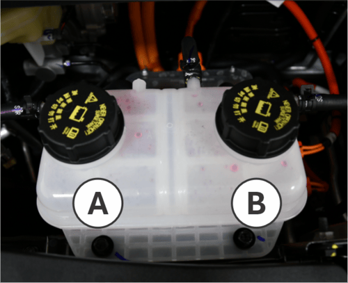The vehicle is equipped with a vehicle charging machine cooling system. The cooling system is filled with ethylene glycol coolant.
In the correct mixing ratio, this coolant provides excellent corrosion and anti-freeze performance for cooling and warm air systems.
The coolant reservoir is located on the side of the front compartment, and its position is not easily observable. Please visit JSW MG authorised service center to have professional technicians inspect the coolant level, and if necessary, add or replace the coolant.
Ordinary water or coolant in wrong mixing ratio will cause damage to the cooling system. It is prohibited to use ordinary water, alcohol or methanol on the vehicle for anti- freezing.
Under pressure, hot coolant and steam may spray out, causing serious personal injuries.
It is prohibited to open the coolant tank cover before the charger and radiator cool down.
The coolant is a dangerous substance.
- Avoid repeated or prolonged exposure to coolant.
- In case of contact with coolant, wash the skin and fingernails with soapy water.
- Keep it out of reach of children.
- Coolant is irritating to the skin and can cause illness or fatal danger in case of swallowing.
Brake and Clutch Fluid: The vehicle is equipped with a brake fluid reservoir. The brake fluid is moisture absorbing, and the fluid with excessive water content will reduce the efficiency of the hydraulic brake system. Replace the fluid as per the instructions in this Manual to avoid corrosion of the hydraulic system. Be sure to use the brake fluid recommended by MG. Add fluid into the reservoir to reach a proper level. The fluid level shall not be lower than the MIN mark or higher than the MAX mark.
A low level in the brake fluid reservoir can be caused by leakage in the brake system or normal wear of the brake pads/linings. Please contact the JSW MG authorised service center to check whether the system needs to be repaired. If repairs are necessary, add fluid after repairing the hydraulic brake system. When the brake fluid level is lower than the MIN mark, the braking system warning lamp will turn on.
Refilling Brake Fluid:
1. Thoroughly wipe off the dirt around the reservoir filler cap.
2. Open the filler cap.
3. Fill the brake fluid recommended by MG to the MAX mark of the fluid reservoir. Be careful not to spill the fluid on the paint's surface. In case of spilling on the paint surface, wash the area with
4. Re-install the reservoir filler cap.
Before opening the filler cap, clean the area around the brake fluid reservoir filler cap. Contamination of the brake fluid system will affect the system performance, resulting in costly repairs.
The brake fluid is irritating to the skin and eyes.
Avoid contacting the brake fluid with the skin or eyes. In case of contact, wash the part in contact with the brake fluid with soapy water or hand sanitizer thoroughly.The brake fluid spilling over the front compartment may cause a fire. An overfull fluid reservoir is not allowed. compartment fire may cause personal injury and damage to the vehicle and other properties.
It is prohibited to dispose of the old brake fluid as household garbage.
Be sure to use the local legal waste management agencies.
The old brake fluid and container are dangerous, and may be harmful to health and the
Transmission Fluid:
Check Reducer Fluid for Leakage
This work requires professional skills and equipment. To avoid personal injury or vehicle damage, it is recommended that you have this work done at JSW MG authorised service center.
Windshield Washing Fluid

Before driving, ensure that the reservoir contains a sufficient volume of the specified cleaning fluid. In cold weather, the windshield washing fluid reservoir cannot be overfilled. Washer fluid will swell under low temperatures due to freezing. An overfull container has no enough space for expansion, thus resulting in damage.
Please go to the JSW MG authorised service center to fill the correct washing fluid. Do not fill water or radiator anti-freezing agent into the windshield washing fluid reservoir. The water will lead the solution to freeze, and the frozen solution will damage the windshield washing system. The radiator anti-freeze agent will damage the windshield washing system and vehicle paint.
When filling windshield washing fluid: It is recommended to use the ready-to-use special washing fluid. If concentrated washing fluid is used, please add water to dilute it according to the manufacturer's instructions.
If the temperature is likely to fall below freezing point, use windshield washer solvent with good antifreezing performance.
Windshield Wiper: Foreign matters on the windshield and blade will reduce the effectiveness of the wiper. If the blade does not work properly, wipe the windshield and the blade with special or neutral washing fluid. Flush with water thoroughly. If necessary, repeat the above operation. Do not wipe the windshield with corrosive substances or materials that cannot be removed from the glass (e.g. silicone).
The strips have a layer of graphite on the surface for lubrication and protection. It should be protected from excessive wiping and undue polishing.
Do not start the wiper when the glass surface is dry. Park the vehicle in a cool place as far as possible to prevent exposure to high temperature, which will accelerate the aging and deformation of strips.
Remove foreign matters such as bird droppings, dust and leaves from the glass surface before starting the wiper; otherwise, the service life of strips will be reduced.
Wiper Repair: The windshield wiper maintenance switch can be turned on or off in infotainment cluster under " Settings"--" Vehicle"--" Vehicle Maintenance"--"Windshield Wiper Maintenance". After the windshield wiper maintenance function is turned on, the wiper will swing to the maintenance position.
Wiper Blade Replacement
As shown in the figure, adjust the wiper blade to an angle perpendicular to the wiper arm, and then press the blade in the direction of the arrow to separate the blade from the wiper arm.
Do the opposite steps to install the wiper blade.
Brake Pedal:
Check for Brake Pedal Stroke

Brake pedal stroke:
To avoid affecting the pedal stroke, do not lay a thick carpet in the brake pedal area.
The reasonable range of brake pedal free travel is 0~30 mm.
If the brake pedal fails to return or the brake pedal stroke becomes longer, please go to the JSW MG authorised service center for inspection. This may indicate faults of the brake system.
Fuses:
Fuse replacement:
- Open the fuse box cover
- Identify damaged fuses by finding out blown fuses.
- Use a fuse extractor to remove the blown fuses. The fuse extractor is in the front compartment fuse box cover.
- Figure out the cause of fuse blowout and remove the fault.
- Install new fuses with rated current meeting the requirements.
Fuse Box
Interior Fuse Box

The interior fuse block is located on the instrument panel, and its label is pasted inside the knee bolster at the driver's side.
Front Compartment Fuse Box

Replacemet
The front compartment fuse box is located in the front compartment.
It is forbidden to remove a blown fuse with a conductive tool. A fuse remover must be used. The use of metal and other electric conductors may cause a short circuit, damage the electrical system or cause a fire, resulting in serious personal injury.
The use of fuse substitutes or the fuse with an incorrect type and rated value may damage the electrical system or cause a fire. Be sure to use a fuse whose type and rated current that meet the requirements. Otherwise, it may cause personal injury and damage the vehicle and other properties.
The gas in the halogen bulb is under pressure. Handle with care and properly dispose of the halogen bulb.
- Wear safety glasses when removing or installing the bulb.
- Take care to prevent bulbs from wear and scratches.
- When the bulb lights up without being packaged prevent it from contacting liquids.
- Light up the lamp for test after the bulb being installed.
- Replace the cracked or damaged headlamp in time.
- Do not touch the glass portion with ungloved fingers when replacing the halogen bulb.
- Keep the bulb out of reach of children.
- Dispose of the old bulb carefully to prevent personal injury due to bulb explosion.
Clean the halogen bulb with alcohol or mineral spirits and non- woven fabrics. Do not touch the bulb with hands directly. Fingerprints may significantly shorten the effective service life of the halogen bulb.
Professional skills and special equipment are required for lamp bulb replacement. It is recommended that you have this done at the JSW MG authorised service center. Otherwise, it may cause personal injury or damage to the vehicle.
Lamp fogging: When the headlamp is on, a large amount of heat will be generated, which needs to be dissipated through the vent hole on the lamp, so the lamp is not completely sealed, and humid air can enter the lamp through the vent hole. When the temperature in the lamp is obviously higher than the ambient temperature or the ambient humidity is high, for example, in cold or humid weather, or when the vehicle is running in rain, or after it is washed, the water vapor inside the lamp will condense on the surface of the lamp cover, resulting in water mist (similar to the fogging phenomenon of the window glass). It is normal that the lighting function and the service life of headlamps will not be affected. Park the vehicle in a dry, ventilated area and the moisture will gradually dissipate. The water mist dissipates faster when the vehicle is driving with lamps on or exposed to sunlight, but there may still be residue at the corners of the lamps.
It may take 2-3 days for the water mist to completely dissipate. If there are a lot of water drops or accumulated water in the lamp, please contact the JSW MG authorised service center for maintenance.
Wheels and tires: Original tires guarantee optimum matching of riding comfort, tread life and performance. The car is not provided with spare tire, jack and socket wrench. If you need to change the tire, please contact the JSW MG authorised service center for wheel and tire replacement.
Be sure to use wheels and tires of specified specifications. The use of wheels and/or tires of other specifications may result in abnormal operation of ABS and other relevant components and even cause collision accidents.
Please consult the JSW MG authorised service center before replacing original tires or wheels.
Otherwise, it may cause personal injury and damage the vehicle or other properties.
Maintenance: The tire pressure shall meet provisions of this Manual so as to ensure optimum matching of driving comfort, safety and driveability.
Please refer to “Technical Data” for the correct tire pressure. When the vehicle is in a cool state, check the tire pressure with an accurate tire pressure gauge. After check of tire pressure, tighten the valve core cap.
Make sure to check the tire pressure when the vehicle is in a cool state. It cannot be based on a reading after the tire temperature has risen. Tires will become hot after traveling for 1.6 Km and will not cool down completely within 3h after stopping.
Check the tire pressure atleast once a month. Incorrect tire pressure may:
- Increase tire wear
- Affect the vehicle maneuverability and safety
- Affect the riding comfort
- Reduce the drive economy
- Vehicle overload is prohibited
- Be sure to keep a proper tire inflation pressure.
- Be sure to check the tire inflation pressure at the time of cold start (ambient temperature).
Excessively low tire pressure will cause overheat of the tire, leading to internal damage and layered tread and even tire burst when driving at a high speed. Even if the tire pressure is restored later, driving under excessively low pressure may have damaged the tire.
Tires and wheels maintenance: Running over sharp objects may damage tires and wheels. If it is inevitable, please slow down.
Do not touch the curb when parking.
Regular tire check
- Appearance damage
- Foreign matter
- Piercing
- Cut
- Crack
- Protruding on side wall
Wheels should also be checked for damage. Tire defects, including those mentioned above, can result in loss of vehicle control and personal injury.
Incase of damage or abnormal wear of tires or wheels, please consult the JSW MG authorised service center for help. The vehicle is equipped with radial tires. MG suggests replacing with radial tires of the same size, pattern, tread wear, temperature and rated speed.
The use of tires with different size than the original tires may cause the tire and the vehicle component to interfere with each other, thus causing damage to the tire and vehicle.
If the vehicle is equipped with TPMS, the tire repairing liquid for tire repair may result in the failure of the tire pressure monitoring system sensor. It is suggested to go the JSW MG authorised service center for inquiries and repair.
Internal tread wear indicator:
Check the tire tread depth as per the tread wear indicator regularly. The mark on the tire wall indicates the position of the tread wear indicator. The tire must be replaced when the tread wear indicator appears. When the tread depth is equal to or less than 1.6 mm due to wear, the tread wear indicator will appear between the tread grooves.
It is forbidden to drive the vehicle in case of tire wear or damage. The worn or damaged tires may lead to the vehicle out of control and cause collision accidents, resulting in personal injury and damage of vehicle or other properties.
Tire rotation:

The front tires and the rear tires have different functions and therefore have different levels of wear. The front tires wear faster than the rear tires. In order to prolong the tire life and avoid uneven tread wear:
1. Rotate tires according to the maintenance procedures in this Manual.
2. Keep a proper tire pressure.
3. Check the tightening of nuts/bolts
Please use the recommended wheels and wheel nuts/bolts.
Otherwise, it may lead to the vehicle out of control and cause collision accidents, resulting in personal injury and damage of vehicle or other properties.
Winter tire: Using winter tires when driving on icy and snowy roads can improve the driving safety of vehicles. Please select winter tires with radial tire structure and use such winter tires on all four wheels. Please use the specified tire pressure. Do not drive the vehicle at a speed exceeding the maximum speed specified by the tire manufacturer. In addition to winter tires, all-weather tires can also be selected.
Tire chain Tire chains are only used for emergencies or in areas clearly defined by law and should be installed on the drive wheels. Be especially careful when driving the vehicle equipped with tire chains. Compared with tires without tire chains, when tires are installed with tire chains, the maneuverability of the vehicle is poor, and the tire chain may damage the vehicle tire, suspension or vehicle body. Therefore, use fine antiskid chains as much as possible to ensure enough space between the tire and other parts in the wheelhouse.
When using antiskid chains, carefully read the installation and other related instructions of the tire chains manufacturer.
After installation of tire chains, it is suggested to drive the vehicle at the speed of below 30 km/h or the limited speed recommended by the tire chains manufacturer (whichever is smaller).
Vehicle maintenance :
Cleaner
The manufacturer's suggestions must be observed when you use detergent or other chemical products inside or outside the vehicle. Do not use dangerous detergent when cleaning the interior and exterior of the vehicle. For example:
- Acetone
- Paint diluent
- Porcelain glaze reducing agent
- Nail polish remover
When you clean the inside and outside of the vehicle, the following cleaning agents are prohibited unless special instructions for cleaning stains are included in the fabric cleaning tips:
- Laundry soap
- Bleaching powder
- Reducing agent
Some cleaning agents are toxic, corrosive or flammable. Improper use is very dangerous and easy to cause personal injury or vehicle damage.
Do not use the following materials for cleaning:
- Carbon tetrachloride
- Gasoline
- Benzene
- Naphtha
When using any detergent or other chemical products inside the vehicle, please open the doors for proper ventilation. To avoid permanent color change of light- colored interior trims, do not allow the easy-to-discolor fabrics to come into contact with the seat liner unless both materials are completely dry. Fabrics with easy-to- discolor materials are:
- Casual clothes
- Dyed denim
- Leather
- Goatskin
- Newspapers and decorative paper
Avoid prolonged exposure to cleaning agents and other chemical vapors. Such chemical vapor is extremely dangerous and harmful to the health, especially in limited space without ventilation
Interior maintenance and cleaning: Clean the inside and outside of the vehicle with proper cleaning methods and materials. Use a vacuum cleaner or a banister brush to frequently remove dust and scum that accumulate on the fabric inside the vehicle. Wipe vinyl and leather trims regularly with a clean, damp cloth. Remove dust, spots or stains on trims with a suitable detergent
Clean the interior trims of the vehicle with proper cleaning methods and materials. Otherwise, it will produce water spots, watermarks and permanent spots, especially during the first washing. These substances will permanently damage the vehicle.
Seat belt maintenance: Keep seat belts clean and dry. Prevent seat belts from being contaminated by polishing agents, oils and chemical products, especially battery fluid, bleaching powder or dyestuff. These contaminants will reduce the strength of the seat belt material. Check all seat belt parts regularly. Replace any damaged seat belts or parts immediately. The seat belts or related parts that are stretched during the accident must be replaced, even if the damage is not obvious or is not visible. The seat belt for replacement must be new.
MG suggests replacing the whole seat belt assembly after collision. If the seat belt is not damaged and everything is normal after inspection by JSW MG authorised service center, it is unnecessary to replace belt.
The seat belt must be kept in a good working condition to maintain its normal function.
Glass surface: Make sure that the window glass is clean, which helps reduce glare and improve vision.
Front windshield outside cleaning
Waxes or other materials on the front windshield and blade may cause the blade to shake when working. Moreover, such foreign matters are not conducive to keeping the front windshield clean. Clean the outside of the front windshield regularly with a non- abrasive cleaning agent. Water does not form water droplets on the clean front windshield.
The abrasive detergent will scratch the glass and damage the rear windshield defroster grid lines. Do not use the abrasive detergent on vehicle glass. Otherwise, it will affect the driver's vision.
The decal will affect the rear window defroster. Do not paste decals on the inner side of the rear windshield. Otherwise, it will affect the driver's vision.
Exterior maintenance and cleaning
Vehicle cleaning
Be sure to turn off the power before washing the vehicle, and inform the washing personnel that the vehicle is a battery electric vehicle. Do not flush its front compartment, front grille and HV battery under the vehicle with a water gun.
If the front compartment or the front grille and the HV battery under the vehicle are flushed with a water gun, the vehicle may be damaged or electric shock may occur.
The best way to maintain the finish paint of vehicles is to wash it regularly and keep it clean
- Park the vehicle in a place out of direct sunlight.
- Wash the vehicle with the specified neutral soap liquid and cold or warm water.
- Be sure to flush the soap and detergent from the surface.
MG vehicles are designed to operate under normal environmental conditions and natural factors.
Do not use the household dishwashing detergent to wash the vehicle. The dishwashing detergent can wash off paint and wax.
Avoid excessive vehicle washing pressure. Water may enter the vehicle and damage the inside.
Polishing and waxing Regular polishing can remove residues from the surface of the vehicle. After polishing, use high- quality car wax for protection.
It is forbidden to clean or polish automotive or chrome polishing agent, steam or alkaline soap liquid. These materials are abrasive and may damage trims and wheels.
Exterior bright metal parts protection: Clean the bright metal parts regularly. They are usually washed with water. When waxing the vehicle, please also wax these bright metal parts.
Aluminum wheels and wheel trim cover cleaning To maintain the original appearance of the wheel and wheel trim cover (if any), do not allow them to collect dust or brake dust. Clean the wheels/wheel trim cover regularly. Do not use the abrasive cleaning agent or brush that may damage the finish paint.
Do not use the abrasive cleaning agent or brush to clean the aluminum wheels or wheel trim cover.
Corrosion prevention MG vehicles are designed to have anti corrosion capabilities. The use of special materials and protective paint on most vehicle parts helps maintain satisfactory appearance, strength and reliability.
Although the surfaces of certain parts inside the front compartment or of the underbody may rust, the reliability or performance of these parts will be affected.
Damage to sheet metal parts If the body needs to be repaired or replaced, ensure that the repair shop uses proper anti corrosion materials to restore the anti corrosion protection performance.
Foreign matter deposition The following substance may damage the paint surface:
- Calcium chloride and other salts
- Ice melting agent
- Road oil and asphalt Sap
- Bird droppings
- Industrial dust
Remove harmful substances on the vehicle in time. If residues cannot be removed with soap water, a special cleaning agent can be used.
Finish paint damage: Repair the gravel scratches, cracks or deep scratches on the finish paint as soon as possible. Exposed metal is prone to corrosion. Ǫuick-drying products can be used to repair tiny cracks and scratches. Body and paint repair shops can complete large-scale repairs.
Use only safe cleaning agents that are not harmful to painted surfaces.
Other cleaning agents may permanently damage the paint.
Underbody maintenance Corrosive substances used for ice and snow melting and dust prevention may accumulate at the underbody. Failure to remove these substances will accelerate corrosion and rusting.
Vehicle maintenance settings Following settings can be done from home screen. “Menu - vehicle settings - Maintenance”

1. Sunshade initialization Refer information of sunroof sunshade initialization from opening & closing section.
Trip reset Trip resetting can be done by pressing resetting button.
3. Wiper maintenance Only can be set when wiper control state is off and wiper is in original position.
Embossed vehicle identification number:

Under the front driver seat.
VIN plate

It is located on the door frame at the front passenger side.
Drive motor production number mark no.

It is located on the motor housing.
Read VIN with VDS
- Connect the data cable of diagnostic system to the on- board OBD interface that is generally located below the instrument panel at the driver's side
- Keep the vehicle in READY state to turn on the diagnostic system.
- Select the "Fault Diagnosis" to read the corresponding model. Click to enter "Vehicle Controller", and click "Module Identification Information", and then the vehicle identification number (VIN) can be displayed in the content list.
The methods for reading VIN with diagnostic equipment of different brand or model may be different. Please consult the equipment supplier.
Main parameters and performance indices of drive motor
| Item | Unit | Indicator/38 kWh |
|---|---|---|
| Type | - | Integrated drive motor system |
| Peak power | kW | 100 |
| Peak torque | N·m | 200 |
Main performance parameters of HV battery system
| Item | Unit | Type and parameter value/38 kWh |
|---|---|---|
| Category | - | Lithium ion battery |
| Total mass | Kg | 304 |
| Total energy | kWh | 37.9 |
Main vehicle mass parameters
| Item | Unit | Parameter/38 kWh |
|---|---|---|
| Seating capacity | Person | 5 |
| Curb weight | Kg | 1566 |
| Maximum allowable total mass | kg | 1960 |
Main vehicle dimension parameters
| Item | Unit | Type and parameter value/38 kWh |
|---|---|---|
| Total length | mm | 4295 |
| Total width | mm | 1850 |
| Total height (no load) | mm | 1677 |
| Wheel base | mm | 2700 |
Main liquid parameters
| Name | Brand | Capacity |
|---|---|---|
| Brake Fluid | Dot4 | 0.7L |
| Reducer gear oil for integrated drive motor systems | Total GL-4 75W-80 | 0.8±0.1L |
| A/C refrigerant | HFC-134a | 510g±20g |
| Coolant | 40℃ Ethylene Glycol- based Organic Acid Technology Coolant (OAT) | Power battery: 4.3±0.2L Reducer gear: 4.5±0.2L |
Tire inflation pressure (Cold State)
| Tire model | Item | Tire inflation pressure (full load) (unit: kPa) |
|---|---|---|
| 215/60R17 / 215/55R18 | Front tire | 250±10 |
| 215/60R17 / 215/55R18 | Rear tire | 250±10 |
Parameters of wheel alignment
| Name | - | Value |
|---|---|---|
| Front wheel | Caster | 3°49’±45’ |
| Front wheel | Camber | -3’±45’ |
| Front wheel | Toe | 0°±5’ |
| Front wheel | KPI | 10°9’±1° |
| Rear wheel | Camber | -1°±45’ |
| Rear wheel | Toe | 0°11’±20’ |
Other parameters
| Item | Parameter |
|---|---|
| Requirements for dynamic unbalance of wheel and tire assembly | Maximum Dynamic Imbalance amount is not greater than 30g |
| Reasonable range of brake pedal free travel | Measure that the pedal stroke is less than 2.57 mm when 0.2 bar hydraulic pressure is generated in the master cylinder. |
| Minimum scrapping thickness of front brake disc | 24mm |
| Minimum thickness for discarding the rear brake disc (front disc and rear disc) | 8mm |
| Minimum thickness for discarding the rear brake pad (front disc and rear disc) | Front 2.5mm, Rear 2mm |
| Periodic Maintenance - Service Schedule - Windsor |
| 1 Month | 6 Months | 1 Years | 2 Years | 3 Years | 4 Years | 5 Years | 6 Years | 7 Years | 8 Years | 9 Years | 10 Years | ||
|---|---|---|---|---|---|---|---|---|---|---|---|---|---|
| OPERATION / PROCESSES FOR PERIODIC SERVICE SCHEDULE | Replacement Frequency: Km / Year whichever is earlier | 1000 | 5000 | 15000 | 30000 | 45000 | 60000 | 75000 | 90000 | 105000 | 1200000 | 135000 | 150000 |
| Vehicle Interior and Exterior | |||||||||||||
| Check the function of the parking brake | Inspection only | I | I | I | I | I | I | I | I | I | I | I | I |
| Check the interior and exterior lighting, horn and system warning display functions | Inspection only | I | I | I | I | I | I | I | I | I | I | I | I |
| Check the surfaces of windscreen and rear window and the working condition of wipers and washers | Inspection only | I | I | I | I | I | I | I | I | I | I | I | I |
| Check the status and function of seat belt | Inspection only | I | I | I | I | I | I | I | I | I | I | I | I |
| Check various control functions of A/C | Inspection only | I | I | I | I | I | I | I | I | I | I | I | I |
| Check AC filter, replace if necessary | 15K/1 Year | R | R | R | R | R | R | R | R | R | R | R | R |
| Check the status and function of seat | Inspection only | I | I | I | I | I | I | I | I | I | I | I | I |
| Check the conditions of front compartment cover lock, tailgate lock, door locks, hinges, door checks, etc., clean up all the dust and refill lubricating grease as necessary | Inspection only | I | I | I | I | I | I | I | I | I | I | I | I |
| Front Compartment | |||||||||||||
| Check the connection and status of 12V battery. | Inspection only | I | I | I | I | I | I | I | I | I | I | I | I |
| Check the high-voltage harness for mutual interference, wear or damage. | Inspection only | I | I | I | I | I | I | I | I | I | I | I | I |
| Check the washer fluid level and add to the standard level as necessary. | Inspection only | I | I | I | I | I | I | I | I | I | I | I | I |
| Check brake fluid level and add to the standard level as necessary. | 30K KM/2 Years | I | I | I | R | I | R | I | R | I | R | I | R |
| Check transmission fluid levels, and add to the standard level as necessary. | Inspection only | I | I | I | I | I | I | I | I | I | I | I | I |
| Check the status of cooling system pipeline and connecting parts. | Inspection only | I | I | I | I | I | I | I | I | I | I | I | I |
| Periodic Maintenance - Service Schedule - Windsor |
| 1 Month | 6 Months | 1 Years | 2 Years | 3 Years | 4 Years | 5 Years | 6 Years | 7 Years | 8 Years | 9 Years | 10 Years | ||
|---|---|---|---|---|---|---|---|---|---|---|---|---|---|
| OPERATION / PROCESSES FOR PERIODIC SERVICE SCHEDULE | Replacement Frequency: Km / Year whichever is earlier | 1000 | 5000 | 15000 | 30000 | 45000 | 60000 | 75000 | 90000 | 105000 | 1200000 | 135000 | 150000 |
| Check the level and concentration of coolant, and add to the standard level as necessary. | 30K KM/2 Years* | I | I | I | R | I | R | I | R | I | R | I | R |
| Check the status of A/C system pipeline such as the compressor, the cooling pipeline and the condenser, and clean relevant surfaces as necessary. | Inspection only | I | I | I | I | I | I | I | I | I | I | I | I |
| Check the status of brake vacuum booster and hose. | Inspection only | I | I | I | I | I | I | I | I | I | I | I | I |
| Check the drive motor mounting bracket. | Inspection only | I | I | I | I | I | I | I | I | I | I | I | I |
| Vehicle Bottom | |||||||||||||
| Check the appearance of high- voltage connector and if it is fitted properly; check the surface of high-voltage connector for damage and if it is fitted in place. | Inspection only | I | I | I | I | I | I | I | I | I | I | I | I |
| Check reducer oil level and add to the standard level as necessary. | First 5K then every 30 K KM/ 2 Years | I | R | I | R | I | R | I | R | I | R | I | R |
| Check the high-voltage harness for mutual interference, wear or damage. | Inspection only | I | I | I | I | I | I | I | I | I | I | I | I |
| Check the appearance of vent valve for damage, and check the marking for fitting to see if it is moved. | Inspection only | I | I | I | I | I | I | I | I | I | I | I | I |
| Check the status of manual service switch to ensure reliable mounting and clean up the dust on the surface. | Inspection only | I | I | I | I | I | I | I | I | I | I | I | I |
| Check the mounting position of the cooling water pipe clip to ensure reliable sealing. | Inspection only | I | I | I | I | I | I | I | I | I | I | I | I |
Symbol Abbreviation: R - Replace • I - Inspect- Top up if require-Adjust-Clean-Refill. Check the coolant level and top up as required, replace if it is contaminated/discoloured or there is sludge formation.
** Tightening of underbody fasteners, door adjustments and functional checks of all the systems during every service is mandatory - Check
| Periodic Maintenance - Service Schedule - Windsor |
| 1 Month | 6 Months | 1 Years | 2 Years | 3 Years | 4 Years | 5 Years | 6 Years | 7 Years | 8 Years | 9 Years | 10 Years | ||
|---|---|---|---|---|---|---|---|---|---|---|---|---|---|
| OPERATION / PROCESSES FOR PERIODIC SERVICE SCHEDULE | Replacement Frequency: Km / Year whichever is earlier | 1000 | 5000 | 15000 | 30000 | 45000 | 60000 | 75000 | 90000 | 105000 | 1200000 | 135000 | 150000 |
| Check the marking for fitting the mounting bolt to see if it is moved and ensure the bolts are fastened. | Inspection only | I | I | I | I | I | I | I | I | I | I | I | I |
| Check the appearance of housing (including the bracket) for crack or deformation. | Inspection only | I | I | I | I | I | I | I | I | I | I | I | I |
| Check the appearance of high- voltage battery pack grounding wire and replace it as necessary. | Inspection only | 1 | 1 | 1 | 1 | 1 | 1 | 1 | 1 | 1 | 1 | 1 | 1 |
| Vehicle Interior and Exterior | |||||||||||||
| Check the equilibrium state of the high-voltage battery pack and carry out equalizing charge as necessary. | Inspection only | I | I | I | I | I | I | I | I | I | I | I | I |
| Check the status and thickness of front and rear brake pads and brake discs, and replace them as necessary. | Inspection only | I | I | I | I | I | I | I | I | I | I | I | I |
| Check brake pipes and hoses for condition and security. Ensure that hoses are not twisted or kinked. | Inspection only | I | I | I | I | I | I | I | I | I | I | I | I |
| Check the wheel bearings and drive shaft sleeve. | Inspection only | I | I | I | I | I | I | I | I | I | I | I | I |
| Check the suspension and steering system for leakage or wear. | Inspection only | I | I | I | I | I | I | I | I | I | I | I | I |
| Check the tread depth to see if the tyre is worn or damaged abnormally. Check the four-wheel alignment data and perform front and rear wheel rotation as appropriate. | Inspection only | I | I | I | I | I | I | I | I | I | I | I | I |
| Check the tyre pressure and make adjustment as necessary. | Inspection only | I | I | I | I | I | I | I | I | I | I | I | I |
| Check if the chassis and underbody bolts and nuts are fastened or fixed, and replace them as necessary. | Inspection only | I | I | I | I | I | I | I | I | I | I | I | I |
Symbol Abbreviation: R - Replace • I - Inspect- Top up if require-Adjust-Clean-Refill. Check the coolant level and top up as required, replace if it is contaminated/discoloured or there is sludge formation.
** Tightening of underbody fasteners, door adjustments and functional checks of all the systems during every service is mandatory - Check
| Periodic Maintenance - Service Schedule - Windsor |
| 1 Month | 6 Months | 1 Years | 2 Years | 3 Years | 4 Years | 5 Years | 6 Years | 7 Years | 8 Years | 9 Years | 10 Years | ||
|---|---|---|---|---|---|---|---|---|---|---|---|---|---|
| OPERATION / PROCESSES FOR PERIODIC SERVICE SCHEDULE | Replacement Frequency: Km / Year whichever is earlier | 1000 | 5000 | 15000 | 30000 | 45000 | 60000 | 75000 | 90000 | 105000 | 1200000 | 135000 | 150000 |
| After Maintenance and Repair | |||||||||||||
| Use diagnostic software to reset maintenance interval indicator. Check for fault codes and determine operation status of the control systems. | Inspection only | I | I | I | I | I | I | I | I | I | I | I | I |
| Check the status and function of communication module with the scan tool. | Inspection only | I | I | I | I | I | I | I | I | I | I | I | I |
| Check software version of electronic control units and upgrade to latest version if available. | Inspection only | I | I | I | I | I | I | I | I | I | I | I | I |
| Carry out the road test, and check the status and function of power system, brake, steering and other systems. | Inspection only | I | I | I | I | I | I | I | I | I | I | I | I |
| "Check specific gravity of the Battery electrolyte Level for all the cells. If the level is below the marker, pl top up the distilled water till the uper marker." | Inspection only | I | I | I | I | I | I | I | I | I | I | I | I |
Symbol Abbreviation: R - Replace • I - Inspect- Top up if require-Adjust-Clean-Refill. Check the coolant level and top up as required, replace if it is contaminated/discoloured or there is sludge formation.
** Tightening of underbody fasteners, door adjustments and functional checks of all the systems during every service is mandatory - Check
Terms & Conditions:
1. General: Your JSW MG MOTOR vehicle is manufactured to meet the regulations and environmental requirements for Indian conditions. In case you relocate it to any other country than INDIA, it may be very difficult to make modifications to comply with the regulations and environmental requirements of that country and it may be difficult to perform repair service in that country. Please note that a vehicle relocated to any other country than India shall not be covered by the warranty.
2. New Vehicle Warranty
2.1 Duration of New Vehicle Warranty: New vehicle delivered by an authorized JSW MG MOTOR DEALER, are warranted against any material, assembly or manufacturing defects by the Manufacturer. The New Vehicle shall be covered under a Warranty by JSW MG MOTOR for a period of 3 years* from the date of delivery or Unlimited kms, whichever is earlier.
Lifetime warranty of battery pack: Lifetime warranty of battery pack the warranty coverage for HV battery pack shall be valid:
- Applicable for private registered retail cars only (not applicable- Test drive/ Demo/ Courtesy car/ commercial car.
- Until the validity period of the first registration certificate of the vehicle, in case of first owner; or
- In case of change of ownership(s), for a period of 8 (eight) years from the date of delivery of the vehicle to the first owner or 1,60,000 kms coverage, whichever is earlier.
2.2 Geographical coverage:
This warranty covers any new vehicle sold within geographical boundaries of INDIA.
If the vehicle is to be driven and, more importantly, registered outside the geographical area defined above, such vehicle will not be covered under the current warranty as stated herein.
2.3 The period of warranty on the vehicle shall not be deemed to be extended by repairs or replacements of any parts.
2.4 In the event the Original Purchaser of the vehicle transfers the vehicle during the period of warranty, it shall be obligation of the subsequent purchaser to notify and inform JSW MG MOTOR or its authorized dealer of such transfer.
2.5 If the vehicle identification number (VIN) of an insured vehicle is declared as total loss by the insurer, any Warranty, Extended Warranty, free services, i-call, e-call and i- smart app (facilities if applicable) provided in respect of such vehicle shall become null and void with effect from the date VIN of such vehicle is declared as total loss by the insurer.
Field of Application:
2.6 The customer is covered for:
2.6.1 Free repair (parts, consumables and labour) of any material or assembly defect duly found in the vehicle, at their own request, as well as any repairs on damage caused by this defect to other vehicle parts.
2.6.2 24/7 assistance services as defined in the “JSW MG MOTOR Road Side Assistance” section.
2.6.3 It is the authorized JSW MG MOTOR EV Dealer's discretion to decide whether it is appropriate to repair or replace the defective part with new part(s), whilst keeping the customer informed.
2.6.4 During a capacity check at an Authorised JSW MG EV Dealer if it is determined that battery pack has suffered a capacity drop below acceptable degradation according to the use and ageing of the vehicle, the module below this acceptable degradation will be deemed excessive loss. Where possible the excessive loss portion will be repaired, if unrepairable the battery pack will be replaced with either a new / re manufactured / reconditioned battery as per JSW MG MOTOR Dealer's discretion.
2.3 The period of warranty on the vehicle shall not be deemed to be extended by repairs or replacements of any parts.
2.4 In the event the Original Purchaser of the vehicle transfers the vehicle during the period of warranty, it shall be obligation of the subsequent purchaser to notify and inform JSW MG MOTOR or its authorized dealer of such transfer.
2.5 If the vehicle identification number (VIN) of an insured vehicle is declared as total loss by the insurer, any Warranty, Extended Warranty, free services, i-call, e-call and i- smart app (facilities if applicable) provided in respect of such vehicle shall become null and void with effect from the date VIN of such vehicle is declared as total loss by the insurer.
Field of Application:
2.6 The customer is covered for:
2.6.1 Free repair (parts, consumables and labour) of any material or assembly defect duly found in the vehicle, at their own request, as well as any repairs on damage caused by this defect to other vehicle parts.
2.6.2 24/7 assistance services as defined in the “JSW MG MOTOR Road Side Assistance” section.
2.6.3 It is the authorized JSW MG MOTOR EV Dealer's discretion to decide whether it is appropriate to repair or replace the defective part with new part(s), whilst keeping the customer informed.
2.6.4 During a capacity check at an Authorised JSW MG EV Dealer if it is determined that battery pack has suffered a capacity drop below acceptable degradation according to the use and ageing of the vehicle, the module below this acceptable degradation will be deemed excessive loss. Where possible the excessive loss portion will be repaired, if unrepairable the battery pack will be replaced with either a new / re manufactured / reconditioned battery as per JSW MG MOTOR Dealer's discretion.
2.7 Parts not covered under warranty conditions contained herein: The following are the parts not covered by warranty conditions contained herein. Hence, it is requested to contact your nearest JSW MG MOTOR Dealer for more details.
2.7.1 Battery:The warranty coverage for 12V Battery is valid for 1 year starting from the Delivery Date shown in the Owner's Manual issued to the customer and shall be provided by the battery manufacturer as per their terms and conditions.
2.7.2 Tire: The warranty coverage for Tire is valid for 1 year starting from the Delivery Date shown in the Owner's Manual issued to the Customer and shall be provided by the respective tire manufacturer as per their warranty terms and conditions.
2.7.3 Infotainment / Audio system including T-Box:The warranty coverage for Infotainment / Audio system is valid for 3 years from the Delivery Date shown in the Owner's Manual issued to the customer and shall be provided by the respective manufacturer as per their terms and conditions.
2.7.4 Battery Pack:: Lifetime warranty of battery pack the warranty coverage for HV battery pack shall be valid:
- Applicable for private registered retail cars only (not applicable- TD/ Demo/ Courtesy car/ commercial car.
- Until the validity period of the first registration certificate of the vehicle, in case of first owner; or
- In case of change of ownership(s), for a period of 8 (eight) years from the date of delivery of the vehicle to the first owner or 1,60,000 kms coverage, whichever is earlier.
2.7.5 AC Chargers:The warranty coverage for AC chargers is valid for 1 year starting from the Delivery Date. It shall be provided by the respective AC Charger manufacturer as per their warranty terms and conditions.
2.8 The JSW MG MOTOR New Vehicle Warranty does not cover and JSW MG MOTOR India Private Limited (JSW MG MOTOR) and / or JSW MG MOTOR authorized workshop shall not be responsible for the following::
2.8.1 Normal maintenance services other than 3 free services*, including without limitation, cleaning and polishing, minor adjustments, engine tuning, oil / fluid changes, consumables (like lubes, grease etc) filters replenishment, fastener retightening, wheel balancing, wheel alignment and tyre rotation etc.
2.8.2 If the degree of degradation of the high-voltage battery is within the normal aging level according to the use of the vehicle. The criterion for normal aging of high-voltage battery conforms to our internal quality standards.
2.8.3 The indirect and remote consequences of any fault (loss of operation, duration of immobilization, etc.);
2.8.4 Vehicle components which have undergone conversion work, and/or specification and design changes and the consequences (deterioration, premature wear and tear, alterations, etc.) of the conversion work on other vehicle parts or components, or on its specifications;
2.8.5 The costs incurred by the customer for routine maintenance;
2.8.6 Replacement of parts due to normal wear and tear resulting from use of the vehicle or from its mileage including but not limited to shocker absorbers, wiper blades, brake drum, brake disk, brake pads, brake shoe, lamp, plugs, belts, linings, bulbs, fuses, suspension parts, mountings, parts made of rubber, etc. Other parts, not limited to steering wheel, gear knobs, gear bellows prone to normal wear & tear will have a limited coverage**:
2.9 Damage or failure resulting due to the following causes:
2.9.1 Poor vehicle maintenance, in particular if the instructions for the treatment, the frequency of maintenance or care to be applied to the vehicle set out in the Owner's Manual have not been observed;
2.9.2 Use of improper battery charger, fluids or lubricants.
2.9.3 Due to lack of use / operation of vehicle over prolonged period[s];
2.9.4 Misuse, abuse, negligence, improper driving habits, theft etc. of the vehicle;
2.9.5 Damage from stress, like use of vehicles in races, rallies or as taxis. The warranty terms for the use of JSW MG MOTOR vehicle shall be different / separate from the terms contained herein.
2.9.6 Use of parts other than JSW MG MOTOR Genuine Parts.
2.9.7 Any device and / or accessories not Supplied / Fitted by JSW MG MOTOR.
2.9.8 Modifications,alterations, tampering or improper repair.
2.9.9 Parts used in applications of which they were not designed or not approved by JSW MG MOTOR. Slight irregularities not recognized as affecting quality or function of the vehicle or parts, such as slight noise or vibrations, or items considered characteristic of the vehicle.
2.10 Damage caused by the following external causes:
2.10.1 Accidents, impacts, scratches, scoring, projection of gravel or solid bodies, hail, acts of vandalism;
2.10.2 Failure to observe the Manufacturer recommendations;
2.10.3 Deposits due to atmospheric pollution, plant- based deposits such as resin, animal-based deposits such as bird droppings, chemical deposits;
2.10.4 Transportation of the vehicle;
2.10.5 Fitting accessories not approved by the manufacturer;
2.10.6 Fitting accessories approved by the manufacturer, but installed without observing the recommendations defined by the manufacturer;
2.10.7 Damage due to airborne fallout, industrial fallout, acid rain, hail and wind storms, or other force majeure events like lightning, fire, floods, earthquakes, war, riots, attacks, prolonged driving in submerged condition etc.
2.10.8 Damage caused due to hydro-static lock.
2.10.9 Paint scratches, dents or similar paint or body damage. Incidental or consequential damages, including without limitation, loss of time, inconvenience, loss of use of vehicle or commercial loss.
How does the JSW MG MOTOR New Vehicle Warranty work?
2.11 To be eligible for the JSW MG MOTOR New Vehicle Warranty, the Customer must:
2.11.1 check that the Owner's Manual does contain the Delivery Date of the vehicle - their warranty entitlement is dependent on this;
2.11.2 contact any workshop of the JSW MG MOTOR Authorized Workshop Network – only such Workshop have the authorization for operations of this sort;
2.11.3 show the duly completed Owner's Manual, as proof of entitlement to the warranty and that the maintenance operations recommended by the Manufacturer have been carried out;
2.11.4 have the defect covered by the JSW MG MOTOR New Vehicle Warranty confirmed as soon as possible, by a JSW MG MOTOR authorized workshop in writing. If the vehicle is unroadworthy, the Customer must contact the nearest JSW MG MOTOR authorized workshop member or JSW MG MOTOR Assistance.
2.12 The JSW MG MOTOR New Vehicle Warranty does not apply, and JSW MG MOTOR and JSW MG MOTOR authorized dealer members are exempt from all liabilities, if:
2.12.1 The vehicle has been driven under conditions not in accordance with those stated in the Owner's Manual (example: vehicle overloaded or taking part in any type of sports competition, etc.); The defect observed is due to the Customer having had the vehicle repaired or serviced in a workshop outside the JSW MG MOTOR authorized network and not observing JSW MG MOTOR's recommendations on the subject.
2.13 By way of consideration for the parts supplied by JSW MG MOTOR under the JSW MG MOTOR New Vehicle Warranty, parts replaced under this warranty, shall legally become the property of JSW MG MOTOR.
2.14 All operations, parts and labour, carried out under the JSW MG MOTOR New Vehicle Warranty are guaranteed until the new vehicle warranty expires.
2.15 Transferring ownership of the vehicle shall not alter the application conditions of the JSW MG MOTOR New Vehicle Warranty.
3. The JSW MG MOTOR Anti- corrosion Warranty:
3.1 Duration of the Anti- Corrosion Warranty: This warranty will apply from the delivery date given on the Owner's Manual for a period of:
Personal Registration 3 years* or Unlimited kms.
3.2 Geographical Coverage: The geographical coverage of the Anti-Corrosion Warranty is identical to that for the JSW MG MOTOR New Vehicle Warranty
3.3 Anti-Corrosion Warranty field of application
3.3.1 In addition to the JSW MG MOTOR New Vehicle Warranty, JSW MG MOTOR guarantees the bodywork and sub frame of JSW MG MOTOR vehicle Schedule I from perforation from the interior, due to steel panel corrosion caused by a manufacturing, material or protective product application defect.
3.3.2 This guarantee covers the repair or replacement of components with perforated steel panel work due to a manufacturing, material or protective product application defect, acknowledged by the Manufacturer.
3.3.3 It is authorized JSW MG MOTOR workshop's discretion to decide whether it is appropriate to repair or replace these components, and to inform the Customer.
3.4 The JSW MG MOTOR Anti- Corrosion Warranty does not cover:
3.4.1 any damage which is not covered by the JSW MG MOTOR New Vehicle Warranty, as defined at the start of this booklet; Mechanical components which are not an integral part of the bodywork or sub-frame (wheel rims, exhaust system, etc.).
3.4.2 In case, repairs (including denting or painting) have been carried out on the body of the JSW MG MOTOR Vehicle in a workshop outside the JSW MG MOTOR authorized network.
3.5 Anti-Corrosion Warranty conditions of application: 3.5.1 To obtain the Anti- Corrosion Warranty, the Customer must contact any Workshop of the JSW MG MOTOR Authorized Workshop Network - only such Workshop have authorization for operations of this sort.
3.5.2 The Customer shall show the duly completed (delivery date and validation of anti- corrosion test coupons) the Owner's Manual as proof of their warranty entitlement.
3.5.3 Application of the JSW MG MOTOR Anti-Corrosion Warranty is subject to the anti- corrosion tests on the bodywork and sub-frame. Customer shall ensure that these tests are conducted at the mileage intervals stated in the Owner's Manual, and at least once every two years. Scheduled maintenance services in the JSW MG MOTOR authorized workshop network incorporate these tests.
3.5.4 If the customer requests to have the anti-corrosion test conducted independently of the scheduled maintenance service, the same will be carried out at an extra cost to the customer.
3.5.5 During these tests the customer shall make sure that the professional carrying out the operation correctly completes the bodywork and sub frame test coupon, in order to validate the continuation of the Anti Corrosion Warranty.
3.5.6 Repairs on any deterioration must be made as soon as possible.
The application of the JSW MG MOTOR Anti- Corrosion Warranty is also subject to bodywork and subframe repairs being carried out in accordance with JSW MG MOTOR recommendations.
3.5.8 - The repair or replacement of components under the conditions described in the “field of application”, shall taken into account the general condition of the vehicle with regard to its age, mileage and maintenance level.
3.5.9 - Parts replaced under the Anti Corrosion Warranty legally become the property of JSW MG MOTOR.
3.5.10 - Repairs and components fitted under the Anti-Corrosion Warranty are guaranteed until the end of the term of the original Anti corrosion Warranty.
3.5.11 - Transferring ownership of the vehicle does not alter the application conditions of the Anti-Corrosion Warranty
The JSW MG MOTOR Paintwork Warranty:
3.6 Duration of the Paintwork Warranty:
JSW MG MOTOR guarantees the bodywork paintwork and painted parts paintwork (door mirrors, bumpers etc.) for 3 years* or Unlimited kilometers whichever is earlier from the delivery date of the new vehicle.
3.7 Geographical Coverage: The geographical coverage of the Paintwork Warranty is identical to that for the JSW MG MOTOR New Vehicle Warranty.
3.8 Paintwork Warranty field of application:
3.8.1 This warranty covers the free repair or replacement of components with inherent paintwork defects (deterioration of lacquer or finishing varnish, due to any material, manufacturing or application defect) acknowledged by the Manufacturer, with the JSW MG MOTOR authorized workshop carrying out the operation, keeping the Customer informed.
3.8.2 - This repair shall take into account the general condition of the vehicle with regard to its age, mileage and maintenance level.
3.9 The JSW MG MOTOR Paintwork Warranty does not cover:
3.9.1 - Any damage which is not covered by The JSW MG MOTOR New Vehicle Warranty, as defined at the start of this booklet;
3.9.2 - Damage due to force majeure events: lightning, fire, floods, earthquakes, war, riots and attacks;
3.9.3 - Mechanical components which are not an integral part of the bodywork or sub-frame (wheel rims, exhaust system, etc.). Damage due to action of road elements (sand, gravel, dust or road debris) which results in stone chipping of paint or glass.
3.10 Paintwork Warranty conditions of application
3.10.1 - To obtain the Paintwork Warranty, the Customer must contact any workshop of the JSW MG MOTOR Authorized Workshop Network - only such Workshop have authorization for operations of this sort.
3.10.2 - The Customer shall show the duly completed (delivery date) Owner's Manual as proof of their entitlement to the warranty.
3.10.3 - By way of consideration for the parts supplied by JSW MG MOTOR under the Paintwork Warranty, parts replaced under this warranty legally become the property of JSW MG MOTOR.
3.10.4 - Repairs and components fitted under the Paintwork Warranty are guaranteed until the end of the term of the original Paintwork Warranty.
3.10.5 - Transferring ownership of the vehicle does not alter the application conditions of the Paintwork Warranty.
4. This warranty is the entire Warranty given by JSW MG MOTOR and no Authorized Dealer of JSW MG MOTOR or its or his agent or employee is authorized to extend or enlarge this warranty and no Authorized Dealer of JSW MG MOTOR or its or his agent or employee is authorized to make any oral warranty on JSW MG MOTOR's behalf.
5. JSW MG MOTOR reserves the right to make any change in design or make any improvement in the design, structure, technology etc. of the vehicle at any time without any obligation to make the same change on the vehicles already sold.
6. Warranty service shall be provided only by JSW MG MOTOR's Authorized Dealers and Dealer Service Branch.
7. JSW MG MOTOR's decision is final and binding on the Owner of the vehicle in all warranty matters. JSW MG MOTOR reserves the right for the final decision on all warranty matters.
8. The terms and conditions as contained herein shall be construed in accordance to the laws as applicable in India and all disputes arising out of this Warranty will be subject to the jurisdiction of Courts in Gurugram only.
DISCLAIMER JSW MG Motor India has partnered with multiple application services & content providers for developing the complete/overall ecosystem experience of Internet Car features across all MGI models*. JSW MG MOTOR India is committed to providing the best user experience and services and acts as an integrator for these application services & content providers. For any customer feedback, JSW MG MOTOR India will coordinate with the respective content/service provider for resolution. *Model variants applicable with Internet features. **For limited coverage details, please contact JSW MG authorised service center.
CALL 1800-100-6464: MG Roadside Assistance is designed to enhance your overall MG ownership experience, by providing you with 24hrs/7days emergency support related to the use of your JSW MG Motor Vehicle. Peace of mind motoring- guaranteed.
While it is our sincere hope that your travels are always trouble-free, breakdowns and road traffic accidents do happen - our goal is to ensure that even if your MG is immobilized, whether at home or while travelling, any inconvenience to you and your family is minimized.
Should you ever require assistance, all you need to do is dial our 24-hour assistance hotline: 1800 100 6464 and or press the I-Call button on your car and MG Roadside Assistance will be there to help. Vehicles will be covered under this program for a period of 3 years from the Date of sale of the vehicle.
Getting Help – What to do when you need Assistance In the event of a breakdown or accident, call MG Roadside Assistance on 1800 100 6464 (toll-free from anywhere in India), or press the I - Call button on your car. When placing the call, please have the following information handy for assisting the operator in analysing the issue:
- Description of the problem;
- Your location;
- Registered Contact / phone number, in case you are calling from a number other than your registered number, as registered with MG;
- License plate number/ Vehicle Identification number
if you opt for your own vehicle assistance / recovery management, the cost for the same shall be borne by you.
Covered Events
o Human error
o Key problems: locked keys, lost keys, or broken vehicle keys
o Tyre problems: puncture, bolts or valve related issues, stepney replacement
o Road traffic accident where the vehicle is immobilized
SUMMARY OF CUSTOMER BENEFITS: Roadside Assistance at home or on the road If your vehicle is immobilized, whether at home or on the road, JSW MG Roadside Assistance will attend to your vehicle. For conditions where we decide that the cause of the breakdown/ immobilizations can be solved at the roadside, a technician will be sent to try and mobilize your vehicle at your location.
Vehicle Recovery If your vehicle is unable to be mobilized following a mechanical or electrical breakdown, a recovery vehicle will be sent to recover your vehicle to the nearest Authorized JSW MG EV Dealer.
Taxi If your vehicle is being towed to the nearest authorized JSW MG EV Dealer (for break down / accident cases), JSW MG Roadside Assistance will also provide taxi assistance. Taxi will be given from breakdown spot and breakdown moment till the towed car reaches the workshop. (Barring accidental cases wherein pickup and drop taxi will be given upto 100km). Taxi will be given to the number of people equal to legal capacity of the car.
Custody Services: If towing is delayed, or if the technician on spot is unable to fix your vehicle, JSW MG Roadside Assistance will arrange for personnel to take custody of your vehicle.
Vehicle Recovery following an Accident If your vehicle is unable to be mobilized following a road traffic accident, JSW MG Roadside Assistance will organize to send a recovery vehicle to recover your vehicle from the accident site to the nearest authorized JSW MG EV Dealer.
Medical Coordination In case of a medical assistance required by you during the breakdown, JSW MG Roadside Assistance team will help for the medical coordination.
Accommodation Assistance In case of a breakdown occurring outside customer's home city / vehicle being towed outside home city, and if so needed by you, JSW MG Roadside Assistance will help provide a hotel accommodation for you for one night for the number of people equal to legal capacity of the car.
Program Overview – Definitions:
• Covered Customers: The owner (or driver) and all the passengers travelling in the vehicle at the moment the roadside assistance was required, up to the legal passenger limit of the vehicle. The customer may be asked to produce car / other identity documents to verify the eligibility under this Program.
• Covered Vehicles and period of cover: Windows cannot be closed but weather conditions are fair, and the vehicle is not exposed to any security risk.
Non-covered Events MG Roadside Assistance is designed to help only in “covered events” that lead to stoppage/ immobilization of your vehicle. As a result, this program will not cover following events, including but not limited to:
- Speedometer not working
- Air-conditioning is not working
- Passenger door(s) cannot be opened when there are no passengers in the vehicle
- Boot cannot be opened
- Front and / or rear demisters are not functioning
- Horn is not functioning
- Seat adjustor is faulty, but the vehicle can be safely driven
- Passenger seat belts are faulty but there are no passengers in the vehicle
- Faulty security system unless the vehicle is immobilized or unless the alarm is sounding continuously
- ABS lights are illuminated
- Air bag warning lights are illuminated
- Traction control lights are illuminated
- Other non-safety related lights/service warnings are illuminated
- Vehicle runs out of windscreen wiper fluid
- Front or rear windscreen wipers faulty but weather conditions are fair
General Exclusions: The following scenarios are general exclusions under the JSW MG Roadside Assistance and therefore JSW MG Roadside Assistance will not be responsible for any assistance costs as a result of any of the following:
- Vehicle is involved in motor racing, rallies, speed or duration tests, practice runs, or operated outside, subject to the exclusivities provided herein and in the owner manual;
- Assistance is required as a result of wars, riots, uprising, mass political demonstrations, pillage, strike, use for military purposes or acts of terrorism, earthquake damage, freak weather conditions, atmospheric phenomena, nuclear transformation phenomena or radiation caused by artificial acceleration of atomic particles;
- Breakdown is caused by deliberate damage, or participation or abetment in a criminal act or offence;
- The immobilization is resulting from damage caused by intervention of the police or other authorities;
- Any damage resulting from the use of the vehicle against the recommendations of the owner manual;
- Any consequential costs and / or damage to property as a result of a breakdown;
- Vehicles kept in a non- roadworthy condition or not serviced in accordance with the manufacturer's recommendations;
- The damage / immobilization is caused due to any repair work done on the vehicle is from a workshop which is not a member of the Authorized JSW MG EV Workshop Network;
- The damage / immobilization is caused to the vehicle due to the negligence / intentional driving of the vehicle or tampering with the vehicle, even after becoming aware of the breakdown / fault / damage.
- If the vehicle identification number (VIN) of an insured vehicle is declared as total loss by the Insurer, the Roadside Assistance (RSA) provided in respect of such vehicle shall become null and void with effect from the date VIN of such vehicle is declared as total loss by the insurer.
General terms and conditions remain with your vehicle: Once you have called JSW MG Roadside Assistance, it is vital that you stay with your vehicle. Should the JSW MG Roadside Assistance representative arrive at your vehicle while it is unattended, the necessary work will not be carried out.
Adverse Weather On occasion, adverse weather conditions such as floods, heavy rain, thunder / lighting, other natural calamities or other external factors may affect our ability to provide services and it may become physically impossible to assist you until the weather improves. During such times, our main priority will be to ensure that you and your passengers are taken to a place of safety; the recovery of your vehicle may not be possible until weather conditions permit.
External Factors MG will take every effort to reach you once you make the call however external conditions (including traffic, strike etc.), could delay such an effort.
Locked Keys: Whilst we will always endeavour to provide assistance by the most efficient method, modern security systems sometimes make it extremely difficult for us to gain entry to your vehicle at the roadside, should the spare keys not be available. If a forced emergency entry is required, you will be asked to sign a declaration stating that you have granted permission for this to take place and confirming that all costs relating to any resulting damages to your vehicle will be your sole responsibility.
Replacement Costs The replacement cost for any damaged part of the vehicle shall not be covered by JSW MG Roadside Assistance, unless it is covered under any other warranty(ies) provided by JSW MG Motor, including the new vehicle warranty, as may be applicable and / or subscribed to by the owner of the JSW MG vehicle.
Right of Refusal JSW MG Roadside Assistance shall have the right to refuse any or all benefits under the program, if it is found that you had furnished false information relating to your eligibility or entitlements to the benefits provided under this program.
Disputes Courts situated within the jurisdiction of Gurugram alone shall have the exclusive jurisdiction to decide all disputes that may arise under this service.
Dear Customer,
We are confident that you and your family would be enjoying the safe and comfortable drive of the JSW MG WINDSOR EV.
We would like to undertake a thorough check-up of the vehicle at 1000kms or 30 days, whichever occurs earlier. This will also allow us to reemphasize the salient features of the JSW MG WINDSOR EV to you.
In the unlikely event of an emergency assistance, please call your nearest JSW MG Dealer as mentioned in this booklet or please feel free to call our 24 x 7 pulse hub at 1800 100 6464.
I confirm that the vehicle has been inspected by me and delivered to my satisfaction. I do abide by JSW MG terms & conditions laid forward for warranty and other vehicle maintenance details.
PDI (One day before delivery)
Customer’s Signature
Dealer Stamp & Signature
1st Free Inspection
1 Month / 1000 km (whichever occurs earlier)
Carry out inspection as recommended at 1 month / 1000 km service as per periodic maintenance schedule.
JSW MG Motor Inspection
1st Free Inspection
1 Month / 1000 km (whichever occurs earlier)
I confirm that the job has been attended to my satisfaction.
Customer’s Signature
Dealer Stamp & Signature
2nd Free Inspection
6 Months / 5000 km (whichever occurs earlier)
Carry out inspection as recommended at 6 month / 5000 km service as per periodic maintenance schedule.
JSW MG Motor Inspection
2nd Free Inspection
6 Months / 5000 km (whichever occurs earlier)
I confirm that the job has been attended to my satisfaction.
Customer’s Signature
Dealer Stamp & Signature
3rd Free Inspection
1 Year / 15000 km (whichever occurs earlier)
Carry out inspection as recommended at 1 month / 15000 km service as per periodic maintenance schedule.
JSW MG Motor Inspection
3rd Free Inspection
1 Year / 15000 km (whichever occurs earlier)
I confirm that the job has been attended to my satisfaction.
Customer’s Signature
Dealer Stamp & Signature
Change of Ownership Record
If resold by JSW MG Motor Dealership Enter Dealer Stamp in Box above
Vehicle Record Sheet
| MODEL |
|---|
| CHASSIS NO. |
|---|
| MOTOR NO. |
|---|
| KEY NO. |
|---|
| DATE OF DELIVERY |
|---|
| MILEAGE (KM) |
|---|
| BATTERY | MAKE | SR NO./ BATCH CODE |
|---|
| TIRE | TIRE LOCATION | SR NO./ BATCH CODE | FR RH | FR LH | RR RH |
|---|
| MAKE | BATCH NO. |
|---|
OWNER'S NAME & ADDRESS:
ADDRESS OF SELLING DEALER
| Showroom: |
|---|
| Workshop: |
|---|
For any feedback, please call Toll free No.1800 100 6464